生成时间：2026-06-11T11:26:10+08:00
今日保留论文数：10
内容构成：今日新文 10 篇；补充推荐 0 篇；经典旧文精读 0 篇
高能天体物理重点
1. Gamma-Ray Constraints on Heavy Axion-Like-Particle Decays from Fermi-LAT and H.E.S.S. Blazar Spectra
- 来源：arXiv / astro-ph.HE
- 链接：https://arxiv.org/abs/2606.11923v1
- 作者：A. Acharyya, F. Aharonian, M. Backes, R. Batzofin, Y. Becherini, S. Bisero, M. Böttcher, C. Boisson
- 评分：novelty 8/10，importance 9/10，relevance 10/10，final 10.00/10
- 推荐理由：利用Fermi-LAT与H.E.S.S.耀变体谱对重ALP衰变和EBL附加贡献给出伽马射线约束，直接涉及VHE伽马传播、H.E.S.S.、Fermi和暗物质/ALP参数空间，优先级很高。
中文题目：用 Fermi-LAT 与 H.E.S.S. 耀变体光谱限制重轴子样粒子衰变产生的伽马射线吸收
做了什么：这篇文章用 Fermi-LAT 和 H.E.S.S. 的一大批耀变体伽马射线光谱，检验质量约为 \(2.5\)--\(20\,\mathrm{eV}\) 的重轴子样粒子是否能作为暗物质并在宇宙学时间尺度上衰变成两个光子。核心思路不是寻找衰变线本身，而是看这些衰变光子是否会额外增加河外背景光，从而增强甚高能伽马射线的 \(\gamma\gamma\to e^+e^-\) 吸收。作者把 ALP 衰变贡献加入标准 EBL 模型，再与不同红移耀变体的观测光谱比较，得到在“ALP 构成全部暗物质”的假设下，\(m_a\sim15\,\mathrm{eV}\) 附近可排除低至 \(g_{a\gamma}\sim7\times10^{-12}\,\mathrm{GeV}^{-1}\) 的耦合。
为什么重要：这项工作重要在于它把 VHE 伽马射线宇宙透明度问题转化为对轻暗物质衰变背景的限制。\(m_a\sim\mathrm{few}\)--\(20\,\mathrm{eV}\) 的 ALP 处在传统实验、恒星演化、宇宙学和直接线搜索灵敏度交界处；如果它们是暗物质，其两光子衰变会在光学/近红外 EBL 留下累积背景，并被高红移 TeV 光子的吸收历史放大。耀变体光谱因此成为一种间接但非常有杠杆的探针。
理论 / 观测 / 仪器方法价值：对理论而言，论文给出的是重 ALP 暗物质衰变寿命、光子耦合和 EBL 能量密度之间的可检验连接；对观测而言，它展示了联合使用 Fermi-LAT 的 GeV 光谱和 H.E.S.S. 的 VHE 光谱如何约束额外光背景；对方法而言，它强调不能只看单个源的“异常透明”，而要在多红移、多能段样本中做全局光谱-吸收拟合。其价值在于提供了与恒星冷却、宇宙背景光测量、X 射线/光学线搜索互补的参数空间排除。
为什么应该关注：如果你关心暗物质候选体、宇宙背景光、TeV 伽马射线传播或 CTA 时代的精密吸收测量，这篇文章值得看。它告诉我们：即便没有直接探测到新粒子衰变线，精确的耀变体谱形也能排除一类会改变宇宙透明度的新物理。它还提醒观测者，EBL 模型、内禀源谱弯曲和仪器能标系统误差会直接影响粒子物理结论。
展开详细解读：文章讲解、背景、理论、重点章节、图表与相关工作
文章详细讲解
科学问题：河外 VHE 伽马射线在传播中会与 EBL 光子发生 \(\gamma\gamma\) 对产生，因此观测到的耀变体光谱包含源内禀辐射和宇宙传播吸收两部分。标准 EBL 主要来自星光和尘埃再辐射，但如果暗物质中存在质量为 \(m_a\sim\mathrm{eV}\) 到十几 \(\mathrm{eV}\) 的 ALP，并且通过 \(a\to\gamma\gamma\) 衰变，那么每次衰变会产生能量约为 \(m_a c^2/2\) 的光子。这些衰变光子经过宇宙红移后贡献到光学、紫外或近红外背景，从而改变 TeV 光子的光深。论文要回答的是：现有 Fermi-LAT 与 H.E.S.S. 的耀变体谱是否已经足够精确，能够排除这类 ALP 作为全部暗物质的情形。
作者怎么做：他们构造了一个包含标准 EBL 与 ALP 衰变 EBL 的传播模型。对每个耀变体，观测谱写成内禀谱乘以 \(\exp[-\tau(E,z)]\)，其中 \(\tau(E,z)\) 包含标准星系 EBL 和 ALP 衰变背景带来的额外吸收。Fermi-LAT 覆盖较低能的 GeV 波段，通常受 EBL 吸收较弱，可帮助锚定源的内禀谱；H.E.S.S. 覆盖 \(E_\gamma\gtrsim100\,\mathrm{GeV}\) 的 VHE 区间，对 EBL 吸收最敏感。通过多源、多红移联合拟合，作者扫描 ALP 质量和光子耦合，比较加入 ALP 衰变后模型是否导致过强吸收并与数据不符。
关键结果：在假设 ALP 构成全部暗物质密度的前提下，联合分析给出了 \(95\%\) 置信排除曲线。摘要中给出的代表性结果是，在 \(m_a\sim15\,\mathrm{eV}\) 附近，排除灵敏度达到 \(g_{a\gamma}\sim7\times10^{-12}\,\mathrm{GeV}^{-1}\)。论文声称该结果在 \(m_a\sim2.5\)--\(20\,\mathrm{eV}\) 质量段关闭了此前约束较弱的一块区域，并与其他天体物理界限具有竞争性。物理上，这一质量范围对应衰变光子主要落在能与 \(\sim100\,\mathrm{GeV}\) 到多 \(\mathrm{TeV}\) 伽马射线最有效相互作用的背景光能段，因此耀变体吸收谱特别敏感。
局限和下一步：这类结论依赖三个层面的假设。第一，ALP 是否占全部暗物质；若只占比例 \(f_a<1\)，对 \(g_{a\gamma}\) 的约束会相应变弱。第二，标准 EBL 模型、耀变体内禀谱形和能标校准之间存在退化：额外吸收可以被更硬的内禀谱、不同 EBL 归一化或仪器系统误差部分吸收。第三，耀变体本身有时间变率和谱态变化，Fermi 与 H.E.S.S. 的非同时观测可能引入额外不确定性。下一步自然是用 CTA、LHAASO、MAGIC、VERITAS 以及改进的多波段同时观测扩大样本，并把 EBL 测量、线强度映射和宇宙学限制做成统一联合似然。
关键结果是怎么做出来的
这篇论文最重要的证据链是：从一组有红移信息的河外耀变体光谱出发，比较“标准 EBL 吸收”与“标准 EBL 加 ALP 衰变 EBL 吸收”两类模型在全样本上的拟合优劣。样本来自 Fermi-LAT 与 H.E.S.S.，二者在能段上互补：Fermi-LAT 的 GeV 数据为每个源的低能谱形提供约束，H.E.S.S. 的 \(\gtrsim100\,\mathrm{GeV}\) 数据则直接检验随能量和红移增加的吸收软化。摘要没有列出确切源数和谱点数，读者应在论文的数据表中检查每个耀变体的红移、观测时期、谱点数量、能量范围和是否与 Fermi 时间窗匹配。
统计上，作者应是对每个 \((m_a,g_{a\gamma})\) 网格点计算 ALP 衰变贡献的 EBL 光子密度，再求对应的伽马射线光深 \(\tau(E,z)\)。随后对每个源拟合一个内禀谱模型，例如幂律、对数抛物线或带指数截断的形状，并把吸收因子施加到观测能段。联合似然或总 \(\chi^2\) 在所有源、所有谱点上相加；若某一 ALP 参数导致预测的 VHE 谱被吸收得过软、过暗，且无法由合理内禀谱补偿，就被排除。
置信度的核心通常来自似然比或剖面似然。对固定 \(m_a\)，把 \(g_{a\gamma}\) 作为待检参数，将源谱参数和可能的 EBL/仪器 nuisance 参数剖面化，得到 \(\Delta\chi^2\) 或 \(-2\Delta\ln\mathcal{L}\)。\(95\%\) 排除曲线对应单参数近似下的阈值，常见为 \(\Delta\chi^2\simeq2.71\) 的单边限制；若论文采用 Monte Carlo 或修正的 Wilks 条件，应重点检查覆盖率处理。摘要给出的 \(g_{a\gamma}\sim7\times10^{-12}\,\mathrm{GeV}^{-1}\) 是联合样本在 \(m_a\sim15\,\mathrm{eV}\) 附近的最强约束点。
支撑结论的图表通常应包括：ALP 衰变对 EBL 谱能量密度的贡献图、不同红移下 \(\tau(E,z)\) 的变化图、若干代表性耀变体的吸收后谱拟合图、以及最终 \((m_a,g_{a\gamma})\) 排除曲线与已有限制对比图。读者要特别看残差是否集中出现在高能端，是否由少数高权重源驱动，以及 Fermi-LAT 与 H.E.S.S. 拼接处是否存在系统偏移。
系统误差方面，最关键的是标准 EBL 模型选择、H.E.S.S. 能量尺度和有效面积、源内禀谱模型灵活度、红移不确定性、非同时观测导致的谱态差异，以及前景/背景建模。稳健性检验应包括替换 EBL 模型、改变内禀谱族、剔除最有影响力的单个源或高红移子样本、改变能量阈值、加入能标 nuisance 参数。如果最终排除曲线在这些检验下只发生小幅位移，才说明结果不是由某个建模假设偶然产生。
背景知识
研究对象是耀变体发出的高能伽马射线及其在宇宙中的传播。耀变体是喷流几乎指向地球的活动星系核，能够产生从射电到 TeV 的非热辐射。由于亮度高、谱延伸到 VHE 能段且分布在不同红移，耀变体长期被用作测量 EBL 的“背光源”。观测到的谱并不等于源本身发出的谱，而是被宇宙中的背景光场滤波后的结果。
历史问题是宇宙对 TeV 光子的透明度。标准图像中，光学到红外 EBL 与高能伽马射线发生 \(\gamma\gamma\to e^+e^-\)，能量越高、源越远，吸收越强。早期一些 TeV 耀变体看起来比简单 EBL 模型预期更硬，曾引发关于 EBL 过高估计、源内禀谱异常、宇宙线次级伽马射线、光子-ALP 振荡等讨论。本文关注的不是振荡增强透明度，而是重 ALP 衰变增加 EBL、从而降低透明度。
理论背景是 ALP 与光子的耦合。许多超出标准模型的理论会产生赝标量粒子，其与电磁场的相互作用可写成 \(aF\tilde F\) 型。若 ALP 质量为几到几十 \(\mathrm{eV}\)，并构成暗物质，它们的两光子衰变寿命可能很长但有限。即便单个粒子衰变率很低，整个宇宙暗物质密度的累积衰变也能形成漫射背景光，对 EBL 有可观贡献。
为什么现在值得重新看：Fermi-LAT 已积累多年全天 GeV 数据，H.E.S.S. 等 Cherenkov 望远镜提供了高质量 VHE 光谱；同时 EBL 模型、星系计数和伽马射线吸收测量都比十多年前成熟。重 ALP 的 \(m_a\sim2.5\)--\(20\,\mathrm{eV}\) 区间恰好对应光学/紫外背景光，传统实验与天体限制并非处处最强，因此用大样本耀变体谱做联合约束很有时机。
常见误区有三点。第一，不能把所有 VHE 谱软化都解释为 EBL，因为耀变体内禀谱本身也会弯曲。第二，不能把 EBL 总强度约束直接等同于 ALP 约束，后者还依赖衰变谱形、红移演化和暗物质分数。第三，ALP 在伽马射线天文学中有两类不同效应：一种是磁场中的光子-ALP 振荡，可能降低有效吸收；本文研究的是重 ALP 衰变增加背景光，方向相反。
基础理论 / 方法脉络
基本物理图像从 \(\gamma\gamma\) 对产生开始。一个能量为 \(E_\gamma\) 的高能光子与背景光子相遇，当质心能量超过 \(2m_ec^2\) 时可产生电子-正电子对。由于截面在阈值以上附近达到最大，\(\mathrm{TeV}\) 伽马射线主要探测红外到光学 EBL，而 \(100\,\mathrm{GeV}\) 到亚 TeV 光子对光学/紫外背景更敏感。因此，改变 EBL 的谱形会在耀变体观测谱中留下随能量和红移变化的吸收印记。
ALP 衰变部分的关键假设是：暗物质由质量为 \(m_a\) 的非相对论 ALP 组成，且通过耦合 \(g_{a\gamma}\) 衰变为两个光子。每个衰变光子在粒子静止系中的能量约为 \(m_a c^2/2\)。由于不同红移处的衰变光子被宇宙膨胀拉伸，今天观测到的是一个由红移积分展宽的背景，而不是无限窄的单色线。这个背景叠加在常规星系 EBL 上，改变光子数密度 \(n(\epsilon,z)\)。
对耀变体观测，核心量是光深 \(\tau(E,z)\)。若内禀微分通量为 \(\phi_{\rm int}(E)\)，到达地球的通量近似为 \(\phi_{\rm obs}(E)=\phi_{\rm int}(E)\exp[-\tau(E,z)]\)。Fermi-LAT 低能端帮助确定 \(\phi_{\rm int}\) 的归一化和曲率，H.E.S.S. 高能端测量 \(\exp[-\tau]\) 的衰减。多红移源联合起来，可以把源内禀弯曲与传播吸收部分分离。
模型假设上的退化很重要。提高标准 EBL 归一化、加入 ALP 衰变背景、或假设源内禀谱更软，都会让高能端下降；相反，假设源内禀谱更硬或能标偏移，也可能掩盖额外吸收。因此需要用多种内禀谱模型、不同 EBL 基线、仪器系统误差和源子样本检验排除曲线是否稳定。
观测方法上，Fermi-LAT 是空间望远镜，视场大、长期监测能力强，但在 \(\gtrsim100\,\mathrm{GeV}\) 的有效面积远小于地面阵列；H.E.S.S. 通过大气 Cherenkov 光重建 VHE 光子，能给出高能谱点但受大气、能标和背景估计影响。联合分析的价值正是在于把低能锚点与高能吸收杠杆结合起来。
公式与推导
第一步是 ALP 与光子的有效相互作用。对赝标量 ALP，常用拉氏量项为
这里 \(a\) 是 ALP 场，\(F_{\mu\nu}\) 是电磁场强张量，\(\tilde F^{\mu\nu}\) 是其对偶，\(g_{a\gamma}\) 是光子耦合。本文关注的效应是由该耦合导致的真衰变 \(a\to\gamma\gamma\)，不是磁场中的振荡。
第二步，两光子衰变率由相空间和上述顶角给出
这里采用自然单位 \(\hbar=c=1\)，\(m_a\) 是 ALP 质量，\(\tau_a\) 是寿命。因为 \(\Gamma_{a\to\gamma\gamma}\propto g_{a\gamma}^2m_a^3\)，质量越大、耦合越强，衰变背景越亮。
第三步，若 ALP 构成暗物质比例为 \(f_a\)，其物理质量密度可写为
其中 \(\Omega_{\rm dm}\) 是今天暗物质密度参数，\(\rho_{\rm c,0}\) 是今天临界密度，\(t(z)\) 是宇宙年龄。本文摘要所述主限制取 \(f_a=1\)，且通常在 \(\tau_a\) 远大于宇宙年龄时指数项接近 \(1\)。
第四步，单次衰变在 ALP 静止系产生两个能量为
的光子。经过红移后，今天观测能量满足 \(\epsilon_0=\epsilon_{\rm em}/(1+z_{\rm em})\)。因此不同 \(m_a\) 对应不同 EBL 波段，并决定它最强影响哪一段 \(E_\gamma\) 的伽马射线吸收。
第五步，衰变产生的背景强度可用宇宙学线发射积分表示为近似形式
这里 \(I_\epsilon\) 是单位能量背景强度，\(H(z)\) 是哈勃参数，\(\delta\) 函数表示衰变线经红移映射到今天的能量。这个式子说明观测背景强度与 \(f_a g_{a\gamma}^2 m_a^2\) 的组合密切相关，但具体标度还受红移映射影响。
第六步，EBL 光子数密度与背景强度的关系可写为
其中 \(n(\epsilon,z)\) 是单位能量单位体积光子数密度。实际分析中总背景为 \(n_{\rm tot}=n_{\rm EBL}+n_a\)，即标准星系 EBL 与 ALP 衰变贡献相加。
第七步，高能光子与背景光子的对产生阈值由
给出。这里 \(\mu=\cos\theta\)，\(\theta\) 是两光子夹角，\(m_e\) 是电子质量。该式说明对给定 \(E_\gamma\)，最敏感的背景光子能量约与 \(E_\gamma^{-1}\) 成反比。
第八步，传播光深为
其中 \(E_0\) 是今天观测到的伽马射线能量，\(z_s\) 是源红移，\(dl/dz\) 是宇宙学线元，\(\sigma_{\gamma\gamma}\) 是对产生截面。ALP 衰变通过增加 \(n(\epsilon,z)\) 增大 \(\tau\)。
第九步，观测谱与内禀谱的关系是
其中 \(\boldsymbol{\eta}\) 表示耀变体内禀谱参数，例如归一化、谱指数和曲率。这个方程是把粒子物理参数映射到可观测谱点的核心。
第十步，联合拟合常用的高斯近似统计量可写为
或等价地使用泊松似然。排除界限通常来自剖面统计量
在单参数单边近似下，\(95\%\) 上限常对应 \(\Delta\chi^2\simeq2.71\)。这一步把光谱残差、源参数退化和系统误差压缩成最终的 \((m_a,g_{a\gamma})\) 排除曲线。
模型拟合 / 应用方法
这类工作的拟合对象不是单一通量点，而是跨多个耀变体、多个能段、多个仪器的谱能量分布。每个源通常有自己的内禀谱参数 \(\boldsymbol{\eta}\)，例如归一化、谱指数、对数抛物线曲率或截断能量；全局共享参数则是 ALP 的 \(m_a\) 和 \(g_{a\gamma}\)，以及可能的 EBL 归一化或形状 nuisance 参数。Fermi-LAT 数据约束低能谱形，H.E.S.S. 数据提供高能吸收信息。
似然可以在谱点层面采用高斯近似，也可以在事件或能量 bin 层面采用泊松似然；实际 H.E.S.S. 光谱常已包含仪器响应、背景估计和能量重建的不确定性。若论文使用公开谱点，则统计量接近 \(\chi^2\)；若使用内部高层级数据产品，则可能有更完整的响应矩阵处理。关键是对每个 \((m_a,g_{a\gamma})\) 网格点重新剖面化源内禀谱参数，而不是固定内禀谱后直接比较吸收。
参数退化主要有四类。第一，\(g_{a\gamma}\) 与暗物质比例 \(f_a\) 退化，因为衰变背景近似随 \(f_a g_{a\gamma}^2\) 增强。第二，ALP 衰变 EBL 与标准 EBL 归一化退化，尤其在背景谱形相似的能段。第三，源内禀曲率与传播吸收退化，高能端更软既可能是源物理也可能是 EBL。第四，仪器能标偏差可把谱上特征沿能量轴移动，影响对 \(m_a\) 的定位。
残差诊断非常重要。若加入某个 ALP 参数后模型在多个红移源的高能端系统性低估通量，并且低能端仍拟合良好，则说明该参数导致过强吸收，应被排除。若残差只集中在一个源或一个观测时期，就要警惕源变率、红移错误或背景估计问题。理想的稳健结果应表现为许多源共同贡献似然差，而不是由一个高信噪比源支配。
模型可能失败的地方包括：内禀谱族不够灵活，导致把源物理误认为传播吸收；标准 EBL 基线偏差，导致 ALP 上限过强或过弱；Fermi 与 H.E.S.S. 非同时数据在耀变体变率下不可直接拼接；以及红移不确定或下限源被不恰当地纳入。实际应用中，最可信的做法是给出多种模型选择下的包络限制，并明确哪些质量段由哪些能量范围和源红移主导。
重点章节 / 结果段落怎么读
数据/样本部分应先读。重点看作者纳入了哪些 H.E.S.S. 耀变体光谱、对应红移、能量覆盖、观测时间和谱点数；再看 Fermi-LAT 数据如何提取，是否与 H.E.S.S. 同期，是否对耀变体活动态作了筛选。这个部分决定结论到底是全样本稳健，还是由少数极亮源驱动。
ALP 衰变 EBL 建模部分是理论核心。读者应检查作者如何从 \(m_a\) 和 \(g_{a\gamma}\) 计算衰变率、红移积分后的背景光强，以及如何与标准 EBL 模型相加。还要看是否固定 \(f_a=1\)，是否讨论 \(f_a<1\) 的重标度，以及采用了哪一种或哪几种标准 EBL 模型。
伽马射线传播和光谱拟合部分是连接理论与数据的关键。应关注 \(\tau(E,z)\) 的计算、内禀谱模型族、似然函数或 \(\chi^2\) 的定义，以及 nuisance 参数如何处理。若论文只允许简单幂律，限制可能偏强；若允许过度灵活的谱形，限制可能偏弱。
结果部分要重点看最终排除曲线和代表性谱拟合图。排除曲线应与既有天体物理、宇宙学和实验限制叠加比较；代表性谱图应显示标准 EBL 与 ALP 增强吸收在高能端的差异。读者要确认 \(m_a\sim15\,\mathrm{eV}\) 附近的最佳灵敏度是否与 H.E.S.S. 能段和目标红移的物理预期一致。
讨论/稳健性检验部分决定可信度。应寻找替换 EBL 模型、改变源样本、改变内禀谱参数化、加入仪器系统误差、剔除异常源后的限制曲线。若这些检验只造成小幅变化，说明限制较稳健；若变化很大，最终结果应被理解为模型依赖限制而非硬排除。
建议重点查看的图表
-
样本红移和能量覆盖图：看 H.E.S.S. 与 Fermi-LAT 的能段如何衔接，哪些源提供最高红移或最高能杠杆。
-
标准 EBL 与 ALP 衰变 EBL 的谱能量分布图：看不同 \(m_a\) 的衰变背景峰值落在哪个波段，强度如何随 \(g_{a\gamma}\) 变化。
-
光深 \(\tau(E,z)\) 对比图：看加入 ALP 后在不同红移下 \(\tau\) 增加多少，尤其是 \(100\,\mathrm{GeV}\)--数 \(\mathrm{TeV}\) 区间。
-
代表性耀变体谱拟合图：看低能 Fermi-LAT 是否锚定内禀谱，高能 H.E.S.S. 是否排斥过强吸收模型，残差是否有系统趋势。
-
联合似然或 \(\Delta\chi^2\) 扫描图：看排除边界是否平滑，是否存在由局部谱特征造成的尖峰或谷。
-
最终 \((m_a,g_{a\gamma})\) 排除曲线：看本文结果与恒星冷却、背景光、宇宙学和实验限制的相对位置，特别是 \(2.5\)--\(20\,\mathrm{eV}\) 区间。
-
稳健性检验表或曲线：看不同 EBL 模型、不同内禀谱假设、剔除源后的约束变化幅度。
-
系统误差预算表：看能标、有效面积、红移、源变率和 EBL 基线哪个因素主导上限不确定性。
关键图表逐图导读
图 1：如果论文给出样本分布图，横轴通常是红移或源名，纵轴可能是能量范围、谱点数或积分通量。读图时要看样本是否覆盖足够宽的 \(z\) 与 \(E\)，因为 EBL 吸收的判别力来自随红移和能量的共同增长。陷阱是不要只看源数，多数约束可能由少数高能、高信噪比光谱贡献。
图 2：EBL 谱图通常以波长或光子能量为横轴，以 \(\nu I_\nu\) 或能量密度为纵轴。标准 EBL 曲线提供基线，ALP 衰变贡献会在与 \(m_a/2\) 对应的能量附近形成红移展宽特征。读图时要看 ALP 曲线是否超过星系计数下限或直接 EBL 测量，同时注意直接 EBL 测量常受黄道光前景污染。
图 3：光深图通常横轴为观测伽马射线能量 \(E_\gamma\)，纵轴为 \(\tau\)，不同曲线代表不同红移或 ALP 参数。关键是看 \(\tau\sim1\) 的能量位置如何移动；若 ALP 使 \(\tau\) 在 H.E.S.S. 能段显著上升，则观测谱会被额外压低。陷阱是 \(\tau\) 的小差异在 \(\exp[-\tau]\) 中可能变成明显通量差，尤其在高 \(\tau\) 区域。
图 4：代表性光谱拟合图应以能量为横轴、微分通量或 \(E^2dN/dE\) 为纵轴，数据点来自 Fermi-LAT 和 H.E.S.S.，模型线包括内禀谱、标准 EBL 吸收谱和 ALP 增强吸收谱。读者应重点看高能端残差：若 ALP 模型线系统低于 H.E.S.S. 点，说明该参数被排除。陷阱是 Fermi 与 H.E.S.S. 数据若非同时，归一化差异不一定是新物理。
图 5：似然扫描或 \(\Delta\chi^2\) 图通常展示某个质量下随 \(g_{a\gamma}\) 增加的拟合恶化，或二维参数平面上的等值线。读图时要确认 \(95\%\) 阈值如何定义，是否是单边限制，以及 nuisance 参数是否已剖面化。曲线不平滑可能提示数值积分、样本切换或局部谱异常。
图 6：最终排除曲线以 \(m_a\) 为横轴、\(g_{a\gamma}\) 为纵轴，本文排除区通常在曲线以上。应看 \(m_a\sim15\,\mathrm{eV}\) 附近达到 \(g_{a\gamma}\sim7\times10^{-12}\,\mathrm{GeV}^{-1}\) 的灵敏度是否与摘要一致，并比较其他限制。陷阱是不同文献可能假设不同 \(f_a\)、不同置信度或不同宇宙学模型，不能机械比较曲线高度。
论文原图 / 可嵌入图片
Fig02
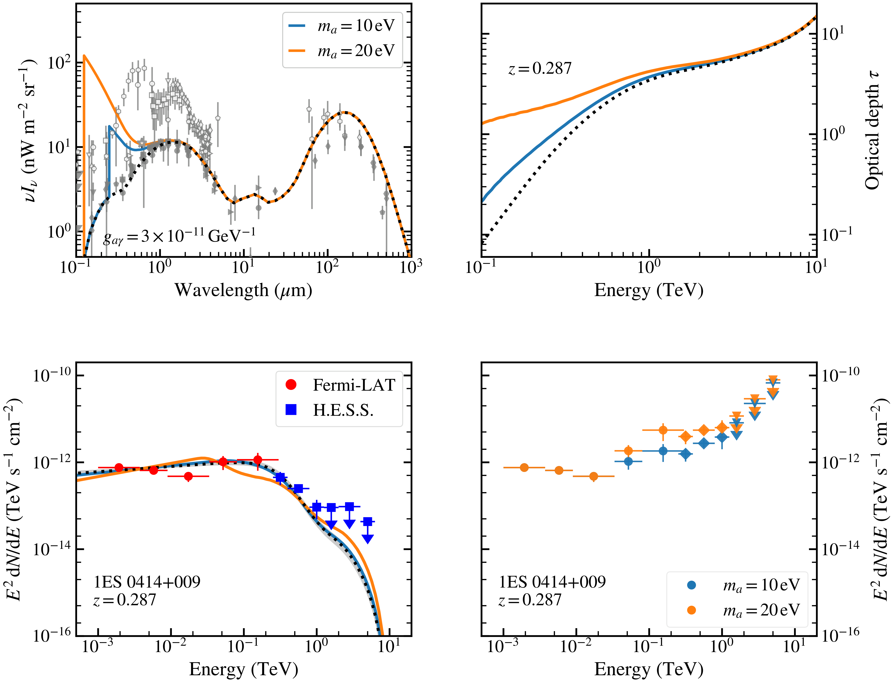
图注：\(\textbf{Top Left:}\) The Domínguez EBL model \(\citep{2011MNRAS.410.2556D}\) (dotted black), together with two illustrative ALP–decay contributions for axion masses of $m_a=10$\,eV (blue) and $m_a=20$\,eV (orange), assuming a fixed coupling of $g_{a\gamma} = 3\times10^{-11}\,\mathrm{GeV}^{-1}$ (solid lines). Observed EBL lower and upper limits are shown as filled and open symbols, respectively \(\citep{Biteau_The_MM_EGAL_spectrum,2018ApSpe..72..663H}.\) \(\textbf{Top Right:}\) Gamma-ray optical depths as a function of energy at $z = 0.287$, corresponding to the redshift of 1ES~0414+009, derived from the same EBL models shown in the top left panel using \(\texttt{ebltable}.\) The blue and orange curves correspond to ALP masses of $m_a=10$\,eV and $m_a=20$\,eV, respectively, while the dotted black curve shows the no-ALP Domínguez EBL model. \(\textbf{Bottom Left:}\) Best-fit gamma-ray spectra of 1ES~0414+009 obtained using the EBL models shown in the top panels (the Domínguez EBL alone and with illustrative ALP--decay contributions). The flux points show the observed \(\textit{Fermi}--LAT\) and H.E.S.S.\ spectrum and are computed under the no-ALP hypothesis; recomputing the flux points using the ALP-modified optical depths shown here produces negligible changes. \(\textbf{Bottom Right:}\) The gamma-ray flux points corrected for EBL absorption while retaining the ALP-induced modification to the optical depth, corresponding to the same ALP scenarios shown in the other panels. Circles denote \(\textit{Fermi}--LAT\) points and diamonds/triangles denote H.E.S.S.\ points (detections and upper limits, respectively), with colors indicating the two ALP masses.
对应解读：对应“建议重点查看的图表”第2、3、4项，以及关键图表导读中的图2、图3、图4：标准 EBL 与 ALP 衰变 EBL、光深 τ(E,z)、代表性耀变体 1ES 0414+009 的谱拟合。
入选理由：这是候选图中信息密度最高、与日报核心物理链条最直接对应的一张：同一图内同时展示标准 Domínguez EBL 与不同 ALP 质量衰变贡献、由此得到的伽马射线光深变化、以及 Fermi-LAT/H.E.S.S. 代表性光谱拟合和吸收校正后的谱点。它能把“ALP 衰变增加背景光—提高 τ—压低 TeV 谱”的因果关系完整可视化，比单纯光谱或光变图更适合支撑详细解读。
来源与置信度：\(arxiv_source\)；high；\(arxiv_source\) / \(main_paper_jcap.tex\):figure[2]
Fig07
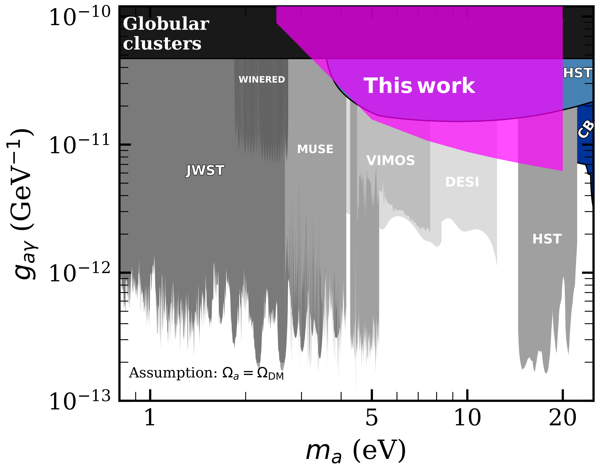
图注：Constraints on the ALP parameter space in the \((m_a, g_{a\gamma})\) plane, under the assumption $\Omega_a=\Omega_{\rm DM}$. The shaded regions show existing limits from astrophysical and laboratory experiments, compiled in the \(\texttt{AxionLimits}\) repository~\(\cite{AxionLimits}.\) The purple contour indicates the parameter space excluded at 95\%~C.L.\ by this work, based on combined \(\textit{Fermi}--LAT\) and H.E.S.S.\ gamma-ray observations. Our results provide new constraints in the low-coupling regime, with the most stringent limits around \(m_a \sim 20\,\mathrm{eV}\), where the impact of ALP decay on gamma-ray optical depth is strongest.
对应解读：对应“建议重点查看的图表”第6项，以及关键图表导读中的图6：最终 \((m_a,g_{a\gamma})\) 排除曲线与既有限制比较。
入选理由：这是论文最终科学结论的总览图，直接给出本文在 \((m_a,g_{a\gamma})\) 平面上的 95% C.L. 排除区域，并与 AxionLimits 中的其他天体物理和实验限制比较。日报中特别强调 \(m_a\sim2.5\)--\(20\,\mathrm{eV}\) 和低耦合区域是否被关闭，这张图最能验证摘要所述约束的相对位置和科学价值。
来源与置信度：\(arxiv_source\)；high；\(arxiv_source\) / \(main_paper_jcap.tex\):figure[7]
Fig05
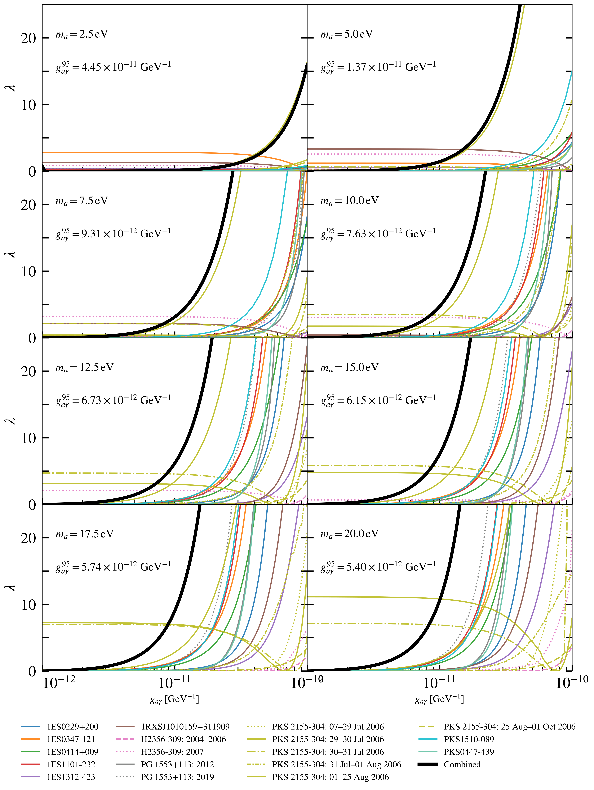
图注：The profile likelihood, \(\lambda(m_a, g_{a\gamma})\), as a function of the photon--ALP coupling constant \(g_{a\gamma}\) for different fixed ALP masses \(m_a\). Each panel corresponds to a specific mass, as labelled. Here \(\lambda\) is defined in Eq.~\(\eqref{eq:lambda}\) as the difference in \(C\)-statistic relative to the best fit at fixed \(m_a\), and the curves are obtained from the joint fit to the combined \(\textit{Fermi}--LAT\) and H.E.S.S.\ data, with contributions summed over all time segments. The black curve shows the total \(\lambda\). The value of \(g_{a\gamma}^{95}\), corresponding to the point where \(\lambda=2.71\) (95\%~C.L., one-sided; one parameter of interest), is indicated in each panel.
对应解读：对应“建议重点查看的图表”第5项，以及关键图表导读中的图5：联合 profile likelihood / \(\Delta C\) 扫描和 95% 阈值定义。
入选理由：该图展示固定 ALP 质量下随 \(g_{a\gamma}\) 变化的 profile likelihood，并明确用 \(\lambda=2.71\) 给出单边 95% C.L. 上限。它是从多源 Fermi-LAT 与 H.E.S.S. 联合拟合到最终排除曲线之间的关键统计中间步骤，可用于检查排除边界是否平滑、是否存在局部偏好或由个别谱段驱动的异常。
来源与置信度：\(arxiv_source\)；high；\(arxiv_source\) / \(main_paper_jcap.tex\):figure[5]
Fig06
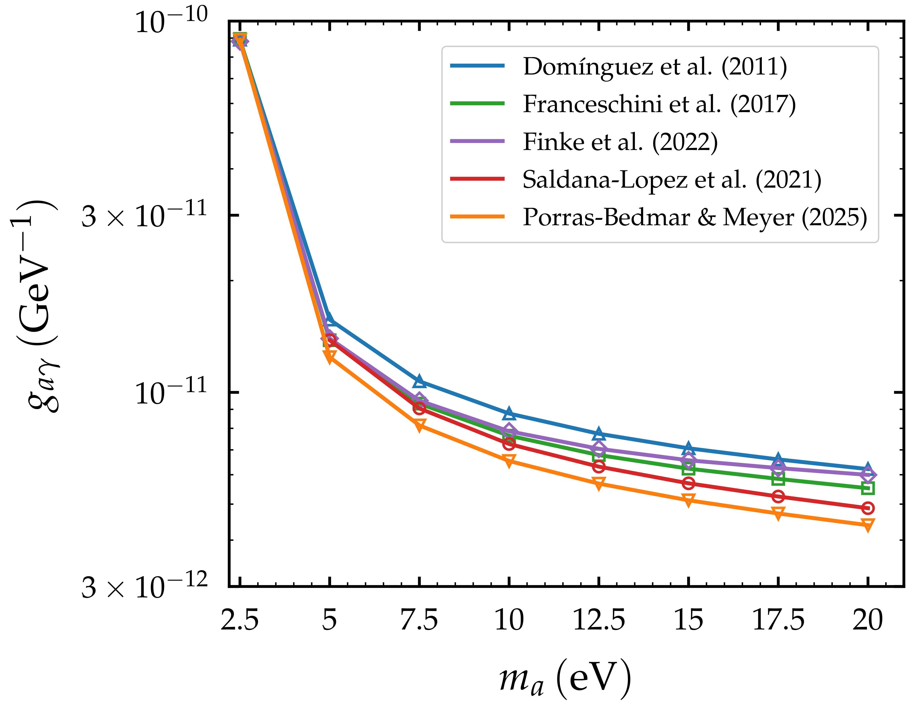
图注：{Comparison of the 95\%~C.L.\ upper limits on the photon--ALP coupling $g_{a\gamma}$ as a function of the ALP mass $m_a$, obtained using different EBL models. The curves correspond to the Saldana-Lopez et al.~(2021), Franceschini et al.~(2017), Finke et al.~(2022), Domínguez et al.~(2011), and Porras-Bedmar \& Meyer~(2025) EBL models, as indicated in the legend.}
对应解读：对应“建议重点查看的图表”第7项：不同 EBL 模型下的稳健性检验；也支撑模型拟合段落中关于标准 EBL 基线退化的讨论。
入选理由：该图比较不同标准 EBL 模型假设下得到的 95% C.L. \(g_{a\gamma}\) 上限，是候选图中最直接反映系统模型选择影响的图。日报指出 ALP 衰变 EBL 与标准 EBL 归一化/形状存在退化，因此这张图能说明最终约束对 Domínguez、Franceschini、Finke、Saldana-Lopez 等基线模型的敏感程度。
来源与置信度：\(arxiv_source\)；high；\(arxiv_source\) / \(main_paper_jcap.tex\):figure[6]
Fig12
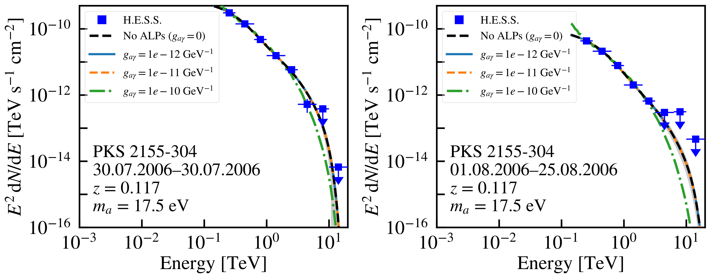
图注：Spectral energy distributions (SEDs) of PKS~2155--304 for the two flare episodes corresponding to the strongest local preference for an ALP contribution in our sample. H.E.S.S.\ flux points (squares) are shown together with the best--fit no-ALP scenario and ALP models for representative photon--axion couplings (\(g_{a\gamma}=10^{-12},\,10^{-11},\,10^{-10}\ \mathrm{GeV}^{-1}\)). In both panels, the ALP mass is fixed to \(m_a = 17.5\,\mathrm{eV}\). The best-fit spectral models overlap for the no-ALP scenario and the two lowest photon--axion couplings (\(g_{a\gamma}=10^{-12},\,10^{-11}\ \mathrm{GeV}^{-1}\)).
对应解读：对应“建议重点查看的图表”第4、5项，以及模型拟合段落中关于局部谱特征、残差诊断和局部 ALP 偏好的讨论。
入选理由：该图展示 PKS 2155--304 两个耀发时段的 SED，并比较 no-ALP 与不同 \(g_{a\gamma}\) 的 ALP 模型，是候选图中少数直接呈现具体源谱形对 ALP 参数响应的图。虽然它不是全样本主结论图，但可用于解释局部似然偏好或局部谱特征如何出现，并提醒读者区分单源/单时段效应与联合排除结果。
来源与置信度：\(arxiv_source\)；high；\(arxiv_source\) / \(main_paper_jcap.tex\):figure[12]
Fig01
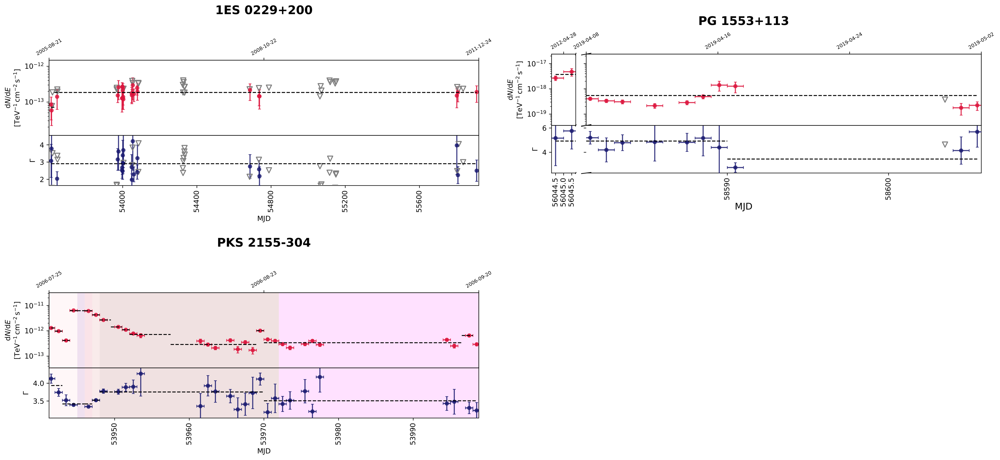
图注：Representative examples of the temporal segmentation procedure applied to H.E.S.S.\ data. In all panels, the upper subplots show the nightly-binned flux evolution, with red points indicating detections and grey inverted triangles denoting 95\% upper limits. Horizontal dashed lines indicate the Bayesian-block segmentation of the flux. The lower subplots show the evolution of the photon index~$\Gamma$, with dashed lines indicating the corresponding Bayesian-block segmentation. For PKS~2155--304, the shaded regions additionally indicate the six time intervals used in the spectral analysis and reported in Table~1. \(\textbf{Top:}\) 1ES~0229+200, a relatively quiescent source. \(\textbf{Middle:}\) PG~1553+113, exhibiting moderate flux variability. \(\textbf{Bottom:}\) PKS~2155--304, a strongly variable source.
对应解读：对应“建议重点查看的图表”第1、7、8项中的样本时间分段、源变率和系统误差相关讨论，尤其是 Fermi/H.E.S.S. 非同时性和耀变体变率问题。
入选理由：该图不是日报设想中的红移—能量覆盖图，但它真实展示 H.E.S.S. 数据的 Bayesian-block 时间分段、通量和光子指数变化，直接关系到哪些时间段进入谱分析以及源变率如何被处理。对于理解 PKS 2155--304 等强变源为何需要分段拟合、以及变率可能如何影响 ALP 约束，它比附录中重复的光变图更有代表性。
来源与置信度：\(arxiv_source\)；high；\(arxiv_source\) / \(main_paper_jcap.tex\):figure[1]
强相关工作
这项工作与传统 EBL-伽马射线吸收研究直接相关。过去 Fermi-LAT、H.E.S.S.、MAGIC、VERITAS 都用耀变体或伽马暴测量过 EBL 吸收，并给出 EBL 归一化和宇宙星形成历史的约束。本文把同一套传播物理用于限制额外衰变背景，因此应与“Fermi LAT EBL measurement blazars”、“HESS EBL absorption blazars”、“gamma-ray opacity EBL”这些关键词一起阅读。
它也与 ALP 暗物质的其他限制互补，包括恒星冷却、水平分支星、白矮星、太阳轴子、宇宙背景光谱畸变、衰变线搜索以及实验室光穿墙或日轴子望远镜。需要特别区分的是，许多伽马射线 ALP 论文研究的是光子-ALP 振荡导致的透明度增加，关键词常为“photon ALP oscillation gamma-ray transparency”；本文研究的是重 ALP 衰变增加 EBL、使宇宙更不透明。若要查找相反或张力观点，可检索“anomalous gamma-ray transparency ALP”、“intrinsic blazar curvature EBL degeneracy”、“direct EBL excess zodiacal foreground”。
相似工作：
- https://arxiv.org/abs/2606.11923
- https://arxiv.org/abs/1211.1671
- https://arxiv.org/abs/1704.07730
基础理论 / 方法工作：
- https://arxiv.org/abs/0807.2822
- https://arxiv.org/abs/1101.4648
- https://arxiv.org/abs/1306.3232
相反观点 / 张力线索：
- https://arxiv.org/abs/0709.4584
- https://arxiv.org/abs/1006.0302
2. A magnetar formation in binary neutron star merger
- 来源：arXiv / astro-ph.HE
- 链接：https://arxiv.org/abs/2606.11299v1
- 作者：Kenta Kiuchi, Alexis Reboul-Salze, Yuichiro Sekiguchi, Masaru Shibata
- 评分：novelty 9/10，importance 9/10，relevance 8/10，final 9.65/10
- 推荐理由：超高分辨率GR辐射中微子MHD双中子星并合模拟，展示毫秒内磁场放大并形成暂态磁星，对短GRB、并合电磁对应体和多信使高能天体物理重要。
中文题目：双中子星并合中的磁星形成
做了什么：这篇论文用全局广义相对论、中微子辐射转移、磁流体力学模拟研究一个等质量 \(1.35\,M_\odot+1.35\,M_\odot\) 双中子星并合，空间分辨率达到 \(6.25\,\mathrm{m}\)，总计算量约 \(5.3\times10^8\) 核小时。作者从接近已知双星脉冲星上限的初始磁场 \(3.16\times10^{12}\,\mathrm{G}\) 出发，发现接触界面的 Kelvin--Helmholtz 不稳定性能在并合后约 \(3\,\mathrm{ms}\) 内把磁能放大到接近 \(10^{50}\,\mathrm{erg}\)，并在磁谱和速度谱中分别看到类似 Kazantsev 与 Kolmogorov 的标度。核心结论是：双中子星并合后至少可以在毫秒尺度上形成临时磁星级别的强磁场残骸。
为什么重要：短伽马暴、千新星、并合后引力波和相对论喷流都高度依赖并合残骸的磁场强度与拓扑。过去的问题不是“磁场能否放大”，而是数值模拟是否真正解析了接触面湍流和小尺度发电机。本文以极高分辨率直接追踪 Kelvin--Helmholtz 不稳定性的早期非线性增长，为“并合可快速产生磁星级磁场”提供了目前最强的一类数值证据。
理论 / 观测 / 仪器方法价值：理论价值在于把双中子星并合中的小尺度湍流发电机从参数化假设推进到接近直接解析；观测价值在于为并合后短时磁星引擎、喷流发射、后并合电磁辐射和潜在高频引力波信号提供物理输入；方法价值在于展示了广义相对论中微子辐射磁流体模拟在米级网格下可以检验湍流谱、磁能饱和与大尺度磁场增长。
为什么应该关注：如果你关心短伽马暴中心引擎、并合后超大质量中子星寿命、千新星早期能量注入或下一代引力波探测器的后并合波形，这篇文章都值得看。它直接影响我们是否可以把“并合后磁星”视为自然产物，而不是人为设定的初始条件。
展开详细解读：文章讲解、背景、理论、重点章节、图表与相关工作
文章详细讲解
科学问题：双中子星并合之后是否能在足够短的时间内形成磁星级磁场，是高能暂现源理论中的关键问题。短伽马暴中心引擎、相对论喷流、盘风、千新星额外能量注入以及后并合引力波阻尼，都与残骸中的磁场强度和几何结构相关。此前许多全局并合模拟为了计算可行，只能使用比真实双星脉冲星更强的初始磁场，或依赖亚网格模型来处理 Kelvin--Helmholtz 不稳定性触发的小尺度湍流发电机。因此，真正的问题是：从观测上合理的 \(10^{12}\,\mathrm{G}\) 量级初始磁场出发，数值模拟能否在全局广义相对论框架内解析出毫秒尺度的磁能增长，并达到磁星级别。
作者怎么做：论文模拟一个 \(1.35\,M_\odot+1.35\,M_\odot\) 的等质量双中子星系统，采用广义相对论中微子辐射转移磁流体力学。最高空间分辨率达到 \(6.25\,\mathrm{m}\)，这对双中子星接触界面的剪切层至关重要，因为 Kelvin--Helmholtz 涡旋最初在很小尺度上增长。初始最大磁场设为 \(3.16\times10^{12}\,\mathrm{G}\)，接近已知双星脉冲星磁场的高端，而不是人为放到 \(10^{15}\,\mathrm{G}\) 级别。作者还分析磁能和动能功率谱，检验磁场放大是否符合湍流发电机预期，而不只是总磁能数值上升。
关键结果：并合接触后，Kelvin--Helmholtz 不稳定性迅速发展，磁场在约 \(3\,\mathrm{ms}\) 内被放大到接近电磁饱和能量 \(\sim10^{50}\,\mathrm{erg}\)。磁功率谱表现出类似 Kazantsev 谱的增长特征，动能谱则接近 Kolmogorov 湍流标度，这说明模拟不仅捕捉到局部剪切放大，也进入了可解释为湍流级联和小尺度发电机的动力学阶段。更重要的是，作者报告恒星尺度磁场至少增强了因子 \(316\)，意味着强磁场不只是停留在网格尺度或接触面附近，而开始影响整体残骸。
局限和下一步：这仍是单一质量组合、单一初始磁场设定和特定物态方程及输运处理下的极端高成本模拟，不能直接给出所有双中子星并合都形成长期稳定磁星的概率。并合后 \(3\,\mathrm{ms}\) 的强放大说明“临时磁星”形成是可行的，但残骸是否塌缩成黑洞、磁场是否组织成有利于喷流的全局极向结构、盘和中微子冷却如何改变长期演化，仍需更长时间和参数扫描。下一步最关键的是把这种米级解析能力与更长的后并合演化、不同质量比、不同初始自旋和不同物态方程结合起来。
关键结果是怎么做出来的
本文最重要的证据链从样本选择开始：作者没有做大样本统计，而是选择一个标准但物理上代表性强的等质量双中子星系统，质量为 \(1.35\,M_\odot+1.35\,M_\odot\)。这个选择对应许多银河系双中子星和引力波事件建模中常用的总质量范围，避免了极端质量比或立即塌缩情形带来的额外复杂性。初始最大磁场 \(3.16\times10^{12}\,\mathrm{G}\) 是结果可信度的关键：若一开始就放入 \(10^{15}\,\mathrm{G}\) 磁场，那么磁星形成结论会变成初始条件的反映；本文则试图证明并合动力学本身足以把普通双星脉冲星磁场推到磁星级。
事件数或样本量方面，这不是观测事件统计论文，而是一次超高分辨率全局数值实验。其“样本量”体现在网格解析度和湍流惯性区是否足够，而不是天体数目。最高分辨率 \(6.25\,\mathrm{m}\) 与约 \(5.3\times10^8\) 核小时计算量，是本文最需要关注的技术事实。Kelvin--Helmholtz 不稳定性的增长率随波数增大而提高，低分辨率模拟会因数值黏性截断小尺度涡旋，从而低估早期磁场增长。作者通过谱分析而非只看体积分磁能，来说明解析到的结构具有湍流发电机特征。
显著性在本文中不是传统观测中的 \(p\) 值或 \(\sigma\) 水平，而是由数值收敛、谱形、能量预算和物理时间尺度共同支撑。核心量包括磁能随时间增长曲线、不同尺度磁功率谱、动能谱以及恒星尺度平均磁场增强。若磁能在接触后 \(\sim3\,\mathrm{ms}\) 内达到 \(\sim10^{50}\,\mathrm{erg}\)，并且谱形接近小尺度发电机理论预期，那么结论就不只是“某些网格点磁场很强”，而是“并合湍流把可观能量转入磁场”。读者应重点查看能量曲线和谱图是否在峰值阶段保持物理一致，而不是由边界、重映射或数值耗散驱动。
模型比较主要体现在与较低分辨率模拟、以往使用强初始磁场的全局模拟、以及理想化局部剪切盒模拟之间的比较。本文若展示随分辨率提高磁能增长更接近饱和、谱斜率更接近 Kazantsev 和 Kolmogorov 预期，就能支持“以前未能完全解析”的判断。若有表格列出不同分辨率下峰值磁能、增长时间、最大磁场和平均场放大因子，应该优先阅读，因为这些量直接决定结论是否稳健。
系统误差主要来自数值耗散、有限分辨率、磁场散度控制、物态方程、中微子输运近似、初始磁场拓扑和模拟时长。尤其要警惕两个问题：第一，磁能饱和是否真正是物理饱和，还是由网格尺度和数值耗散设定；第二，大尺度磁场增强是否足以驱动喷流，还是只有小尺度混乱磁场。稳健性检验应包括分辨率比较、谱斜率诊断、不同空间区域的能量分解、磁场散度误差监控，以及并合前后全能量守恒检查。
背景知识
研究对象是双中子星并合后的超致密残骸。两个半径约十几公里、质量约 \(1\)--\(2\,M_\odot\) 的中子星在轨道角动量损失后接触，形成强剪切、强震荡、高温且富中子的物质。接触界面处的速度不连续天然触发 Kelvin--Helmholtz 不稳定性，小尺度涡旋把动能级联到更小尺度，同时通过拉伸和折叠磁力线实现小尺度发电机。
历史上，短伽马暴被认为与紧致双星并合有关，但中心引擎需要强磁场、吸积盘和可能的黑洞或超大质量中子星。磁星模型要求残骸具有 \(10^{14}\)--\(10^{16}\,\mathrm{G}\) 的磁场，而银河系双中子星中的脉冲星通常没有这么强。因此关键矛盾是：磁星级磁场是并合前就有，还是并合过程中自然生成。过去数值模拟受限于分辨率，常常人为设强初始场以便在可计算时间内看到喷流或磁驱动外流。
观测背景来自多信使天文学。\(\mathrm{GW170817}\) 证明双中子星并合会产生引力波和千新星，并伴随短伽马暴及余辉。电磁辐射对喷流结构、抛射物质量、速度分布和中心引擎寿命敏感，而这些都受磁场控制。后并合高频引力波目前尚未直接探测，但未来探测器若能观测到残骸振荡和塌缩时间，磁场强度将是解释波形阻尼和角动量输运的重要参数。
为什么现在值得重新看：一方面，高性能计算和自适应网格技术使米级分辨率的全局广义相对论模拟变得可能；另一方面，中微子辐射转移、有限温物态方程和磁流体数值格式也在成熟。并合中的磁放大跨越从米级涡旋到十公里残骸的尺度范围，过去常把这一过程压缩为亚网格参数。本文的价值就在于用极端计算成本直接进入此前难以解析的尺度。
常见误区有三点。第一，把局部最大磁场等同于可驱动喷流的全局磁场；事实上，小尺度随机磁场和有序极向磁通的观测后果不同。第二，把磁能增长等同于长期磁星形成；残骸若很快塌缩成黑洞，磁星阶段可能只是毫秒级。第三，把低分辨率模拟没有看到强放大理解为物理上不会放大；这往往是数值黏性和网格截断造成的。
基础理论 / 方法脉络
基本物理图像是剪切层中的湍流发电机。双中子星刚接触时，两侧物质存在巨大的切向速度差，界面扰动会被 Kelvin--Helmholtz 不稳定性放大。涡旋流场拉伸、扭曲和折叠磁力线，在理想磁流体近似下磁通冻结使磁场随流体形变而增强。若磁场足够弱，它一开始不会显著反作用于流体，增长近似由速度梯度和湍流周转时间控制；当磁压接近局部湍流动压时，增长趋于饱和。
本文的模型框架是广义相对论磁流体力学加中微子辐射转移。广义相对论部分负责描述强引力和高速流体，磁流体部分描述磁场与等离子体的耦合，中微子输运则影响温度、电子丰度、冷却和抛射物组成。对磁场放大而言，最直接的关键量是磁能、磁场均方根、最大磁场、不同尺度上的磁功率谱，以及残骸尺度上的平均磁场分量。
观测或理论可连接的量包括磁能是否达到 \(10^{49}\)--\(10^{51}\,\mathrm{erg}\)，极区是否积累足够有序磁通，磁场是否能在后续几十毫秒内驱动风或喷流，以及磁应力是否显著输运角动量。磁能本身不是直接观测量，但它会改变伽马暴启动条件、盘风性质、千新星颜色和后并合残骸寿命。本文报告的 \(\sim10^{50}\,\mathrm{erg}\) 因此处在足以影响中心引擎的范围。
谱分析是本文的重要诊断。小尺度发电机理论中，磁能谱在 kinematic 阶段可出现 Kazantsev 型标度；充分发展的不可压缩湍流动能谱常与 Kolmogorov 标度比较。实际并合残骸并非简单不可压缩、均匀、牛顿流体，因此这些标度不是精确定律，而是判断湍流级联和发电机是否被解析的参照。若谱只在一两个网格尺度上增强，则可能是数值伪影；若在较宽波数范围内呈现理论预期标度，则可信度更高。
主要退化和系统误差包括分辨率与物理黏性之间的退化、初始磁场拓扑与后期大尺度磁通之间的退化、物态方程与残骸寿命之间的退化，以及中微子处理与热压支持之间的退化。对于此类模拟，不能只问最大磁场是多少，还要问该磁场在多大体积内存在、持续多久、是否有序、是否随分辨率收敛，以及磁场散度约束是否足够好。
公式与推导
第一步是磁通冻结的基础图像。在理想磁流体中电场满足
其中 \(E^i\) 是电场，\(B_k\) 是磁场，\(v_j\) 是流体速度，\(\epsilon^{ijk}\) 是 Levi-Civita 符号。这个关系说明磁力线随高电导率流体运动，是剪切和湍流能够放大磁场的前提。
第二步看磁场演化。牛顿极限下的感应方程可写为
这里 \(\mathbf{v}\) 是速度场，\(\mathbf{B}\) 是磁场。第一项包含磁力线拉伸和压缩，第二个约束要求没有磁单极子。数值模拟必须控制 \(\nabla\cdot\mathbf{B}\) 误差，否则磁能增长可能掺入非物理成分。
第三步估计 Kelvin--Helmholtz 增长。对两层不可压流体的理想剪切界面，扰动增长率的量级为
其中 \(k\) 是扰动波数，\(\Delta v\) 是界面两侧速度差，\(\rho_1\) 和 \(\rho_2\) 是密度。这个式子解释了为什么高分辨率重要：更大的 \(k\) 对应更小尺度，若网格不能解析，小尺度最快增长模会被数值黏性抹掉。
第四步定义磁能。模拟中常检查体积分磁能
其中 \(B^2/8\pi\) 是磁能密度，\(dV\) 是体积元。本文报告的饱和电磁能量 \(\sim10^{50}\,\mathrm{erg}\) 可与残骸动能、旋转能和伽马暴中心引擎能量需求比较。
第五步用湍流动能给出饱和估计。若磁能达到局部湍流动能的一定比例，可写成
其中 \(B_{\rm sat}\) 是饱和磁场，\(\epsilon\) 是小尺度发电机效率，\(\rho\) 是密度，\(v_{\rm turb}\) 是湍流速度。这个关系告诉读者：磁星级磁场并不神秘，只要核密度物质中的湍流速度足够大，少量动能转入磁能即可达到巨大 \(B\)。
第六步描述小尺度发电机的指数增长阶段。磁能可近似写为
其中 \(E_{B,0}\) 是初始磁能，\(\Gamma\) 是磁场振幅增长率，磁能因 \(B^2\) 而有因子 \(2\)。如果在 \(\sim3\,\mathrm{ms}\) 内从双星脉冲星级磁场达到磁星级磁能，则要求 \(\Gamma\) 接近湍流周转频率量级。
第七步是谱诊断。磁能谱 \(M(k)\) 满足
其中 \(k\) 是波数，\(M(k)\) 表示每个波数区间贡献的磁能。Kazantsev kinematic 发电机理论常给出近似
的上升段。若模拟磁谱在合适波数范围内接近该标度，说明磁场增长符合小尺度发电机预期。
第八步是动能谱。湍流速度场的动能谱 \(E_K(k)\) 满足
在 Kolmogorov 图像下惯性区近似
其中 \(C_K\) 是 Kolmogorov 常数，\(\varepsilon\) 是单位质量能量级联率。本文若看到动能谱接近 \(k^{-5/3}\)，就支持“解析到湍流级联”的解释。
第九步连接到可检验的放大因子。若恒星尺度磁场从 \(B_0\) 增至 \(B_{\rm f}\)，放大因子为
本文给出至少 \(\mathcal{A}\gtrsim316\) 的恒星尺度放大，这比局部最大值更有意义，因为它表明磁场影响范围已扩展到残骸整体尺度。
第十步是数值收敛的基本判断。对某个诊断量 \(Q\)，不同网格尺度 \(\Delta x\) 下可比较
这里 \(Q\) 可以是峰值磁能、谱斜率或放大时间。若 \(\delta Q\) 随分辨率提高而下降，结果更可信；若不下降，则磁能饱和可能仍受网格尺度控制。
模型拟合 / 应用方法
这类论文的“拟合”不同于观测数据的参数反演，更多是对模拟输出做物理模型诊断。拟合量包括磁能增长率、磁谱斜率、动能谱斜率、饱和磁能、平均场放大因子和湍流相关长度。比如可以在磁能指数增长阶段拟合 \(E_B(t)=E_{B,0}\exp(2\Gamma t)\)，得到增长率 \(\Gamma\)，再与 Kelvin--Helmholtz 时间尺度和湍流周转时间比较。
谱拟合是本文最关键的方法之一。读者应关注作者在哪个波数区间拟合 Kazantsev 型磁谱和 Kolmogorov 型动能谱。惯性区必须远离盒尺度，也要远离网格截断尺度；如果拟合区间太窄，斜率可能只是视觉上的。残差应看是否系统偏离幂律，尤其在高波数端是否出现由数值耗散导致的陡降，在低波数端是否受全局残骸非均匀性影响。
参数估计中的先验主要来自物理设定而非贝叶斯先验，包括初始磁场强度、磁场拓扑、物态方程、双星质量、初始轨道和中微子输运近似。它们与结果存在明显退化：更长寿命的残骸可能给磁场更多时间增长；不同物态方程改变半径和接触速度，从而改变 Kelvin--Helmholtz 触发条件；初始磁场拓扑可能影响大尺度极向磁通，而不只是总磁能。
系统误差必须分层看。数值层面包括网格分辨率、重构格式、Riemann 求解器、磁场散度清理或约束输运、人工大气、边界条件和重网格策略。物理层面包括黏性、阻性、微物理反应率、中微子闭合关系和未解析湍流的有效输运。结果若只对局部最大磁场敏感，就比较脆弱；若对体积分磁能、谱形和大尺度平均场都一致，则更稳健。
实际应用时，不能把本文的 \(\sim10^{50}\,\mathrm{erg}\) 磁能简单塞进所有短伽马暴模型。应先判断残骸是否存活足够久，磁场是否形成有序极向结构，吸积盘是否提供持续供能，以及极区是否被重子污染。本文最可靠的外推是：并合毫秒内的物理过程有能力从双星脉冲星级初始磁场产生磁星级强磁场；至于喷流是否启动、千新星是否被显著再加热，还需要更长时标模拟和辐射后处理。
重点章节 / 结果段落怎么读
数据和数值设置部分应首先阅读。重点看双星质量、物态方程、初始磁场强度与拓扑、网格结构、最高分辨率 \(6.25\,\mathrm{m}\)、中微子辐射转移方案以及总模拟时长。这些设置决定本文是否真正回答“从真实双星脉冲星磁场出发能否形成磁星”的问题。
方法部分要重点看广义相对论磁流体方程、中微子处理和磁场散度控制。读者不必逐行追数值格式，但要确认磁场演化是否采用适合强剪切的高阶方法，是否有分辨率比较，以及是否报告守恒误差。米级分辨率的意义只有在数值耗散受控时才成立。
主结果部分应围绕并合后最初 \(\sim3\,\mathrm{ms}\) 阅读。看磁能随时间的增长、最大磁场和平均磁场的演化、Kelvin--Helmholtz 涡旋的空间分布，以及磁能达到 \(\sim10^{50}\,\mathrm{erg}\) 的时间。这里是论文结论的核心。
谱分析部分是判断物理可信度的关键。重点看磁功率谱是否显示 Kazantsev 型行为，动能谱是否显示 Kolmogorov 型行为，拟合波数范围是否合理，分辨率是否足以形成惯性区。这一部分比单纯的彩色密度图更能说明模拟是否解析了湍流发电机。
讨论和局限部分要看作者如何界定“磁星形成”。临时形成磁星级磁场不等于长期稳定磁星，也不等于已经产生短伽马暴喷流。读者应关注作者对残骸寿命、大尺度磁场、有序磁通、后续塌缩和更长时间演化的表述是否谨慎。
建议重点查看的图表
-
并合过程的密度、温度或磁场二维切片图：看 Kelvin--Helmholtz 涡旋是否出现在双星接触界面，强磁场是否局限于界面还是扩展到残骸体积。
-
磁能随时间演化图：重点看接触时刻后的增长斜率、达到 \(\sim10^{50}\,\mathrm{erg}\) 的时间、是否出现饱和平台，以及不同分辨率曲线是否接近。
-
最大磁场与体积平均或质量加权磁场演化图：最大值容易受局部网格影响，平均场更能说明恒星尺度放大。应比较二者是否同步增长。
-
磁功率谱图：看横轴波数 \(k\)，纵轴磁能谱或补偿谱，检查是否存在接近 Kazantsev \(k^{3/2}\) 的区间，以及该区间是否远离网格截断。
-
动能谱图：检查是否有接近 Kolmogorov \(k^{-5/3}\) 的惯性区，谱在高波数端的耗散截断是否随分辨率移动。
-
分辨率收敛表或对比图：看峰值磁能、饱和时间、谱斜率和放大因子是否随分辨率提高趋于稳定。
-
磁场散度误差或守恒误差诊断：若论文提供，应检查误差是否在强放大阶段异常上升。
-
大尺度磁场拓扑图：如果有极向或环向磁场分量分解，应看是否出现可驱动喷流的有序极向磁通，而不只是小尺度随机场。
关键图表逐图导读
图 1：通常应是并合前后残骸结构的快照图。横纵坐标多为空间坐标，例如以公里为单位的 \(x\) 和 \(y\)，颜色表示密度、温度或磁场强度。读图时要看双星接触面是否形成卷曲涡旋，强磁场是否沿剪切层出现并向残骸内部扩散。陷阱是颜色条常为对数尺度，局部极亮区域不一定代表体积分磁能很大。
图 2：应重点寻找磁能或电磁能量随时间变化图。横轴通常是相对并合时刻的时间 \(t-t_{\rm merger}\)，纵轴是 \(E_B\) 或相关能量。关键结论是磁能是否在 \(\sim3\,\mathrm{ms}\) 内达到 \(\sim10^{50}\,\mathrm{erg}\)。若图中有不同分辨率曲线，要看最高分辨率是否仍在增长、是否已经饱和，以及低分辨率是否明显低估增长。
图 3：最大磁场、均方根磁场或大尺度平均磁场的时间演化图。横轴仍是时间，纵轴可能是 \(B_{\rm max}\)、\(B_{\rm rms}\) 或某种体积平均 \(\langle B\rangle\)。读图时不要只看 \(B_{\rm max}\)，因为最大值可能来自很小区域；更应看平均场是否达到至少 \(316\) 倍放大。若平均场增长滞后于最大场，说明小尺度发电机先工作，然后才向大尺度转移。
图 4：磁功率谱图。横轴为波数 \(k\)，纵轴为磁能谱 \(M(k)\) 或补偿后的 \(M(k)k^{-3/2}\)。若作者画出 Kazantsev 参考线，读者应检查数据曲线与参考线一致的波数范围。陷阱是接近 Nyquist 波数的部分会受数值耗散和网格噪声影响，不能拿高波数端的短区间当作可靠幂律。
图 5：动能谱或速度谱图。横轴为 \(k\)，纵轴为 \(E_K(k)\)，常会叠加 Kolmogorov \(k^{-5/3}\) 参考线。关键是是否存在惯性区，而不是某个点恰好落在参考线上。若谱在低波数受残骸整体旋转支配，在高波数受耗散支配，中间区间才适合判断湍流级联。
图 6：分辨率或稳健性比较图表。可能列出不同网格尺度下的磁能峰值、饱和时间、谱斜率和磁场放大因子。读者应看最高分辨率结果是否相对于次高分辨率变化变小。如果最高分辨率仍显著改变结论，那么论文更应被理解为“达到更接近真实的下限”而非完全收敛的最终答案。
论文原图 / 可嵌入图片
Fig02
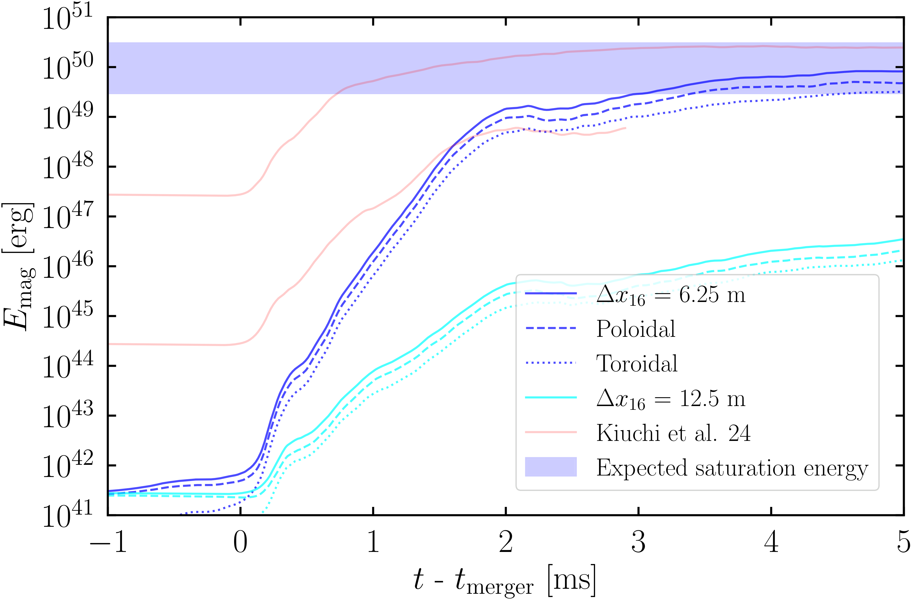
图注：Electromagnetic energy as a function of the post-merger time. The blue-solid, dashed, and dotted curves show the total, poloidal, and toroidal-field energy, respectively. The blue-shaded region is an expected saturation energy due to the Kelvin-Helmholtz instability~\(\cite{Aguilera-Miret:2020dhz,Aguilera-Miret:2021fre,Aguilera-Miret:2023qih,Aguilera-Miret:2024cor,Aguilera-Miret:2025nts,Palenzuela:2021gdo,Gutierrez:2026ngt,Kiuchi:2023obe}.\) The thin red curves plot our previous simulations~\(\cite{Kiuchi:2023obe}.\)
对应解读：对应“建议重点查看的图表”第2项以及“关键图表逐图导读”图2：电磁/磁能随并合后时间演化。
入选理由：这是支撑论文核心结论最直接的图：横轴为并合后时间，纵轴为电磁能量，并区分总能量、极向场能量和环向场能量，还标出 Kelvin--Helmholtz 不稳定性预期饱和能量区域及此前低分辨率模拟对比。它能直接检验磁能是否在约3 ms内接近10^50 erg、是否接近饱和以及新模拟相对旧模拟的提升，因此应优先嵌入。
来源与置信度：\(arxiv_source\)；high；\(arxiv_source\) / main.tex:figure[2]
Fig03
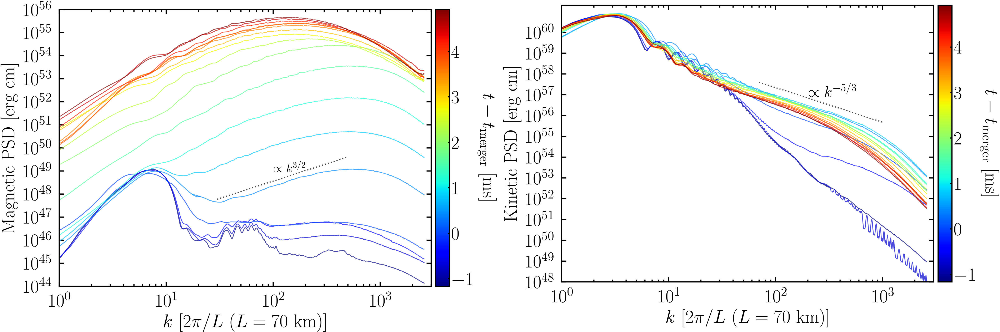
图注：(Left) Magnetic PSD as a function of the post-merger time. The Kazantsev spectrum proportional to $k^{3/2}$ is shown. (Right) Kinetic PSD as a function of the post-merger time. The Kolmogorov spectrum, proportional to $k^{-5/3}$, is shown.
对应解读：对应“建议重点查看的图表”第4、5项，“关键图表逐图导读”图4、图5，以及“模型拟合”中关于 Kazantsev 磁谱和 Kolmogorov 动能谱的诊断。
入选理由：该图同时给出磁功率谱和动能功率谱随并合后时间的演化，并叠加 Kazantsev \(k^{3/2}\) 与 Kolmogorov \(k^{-5/3}\) 参考标度，是判断小尺度湍流发电机是否被解析、谱斜率是否符合物理预期的关键证据。相比单纯快照图，它直接支撑论文关于磁场放大机制而非仅总能量增长的解释。
来源与置信度：\(arxiv_source\)；high；\(arxiv_source\) / main.tex:figure[3]
Fig05
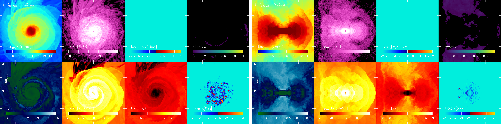
图注：Snapshot of an orbital plane (top) and a meridional plane (bottom) at $t-t_{\rm merger} \approx 5$~ms. From the top-left to the down-right panel, the rest-mass density, the magnetic-field strength, the magnetization parameter, the unboundness of the fluid with the Bernoulli criteria, the electron fraction, the temperature, specific entropy, and the Shakura-Sunyaev parameter, respectively. (see \url{http://www2.yukawa.kyoto-u.ac.jp/~kenta.kiuchi/anime/FUGAKU2026B/out_yuv420p_xy.mp4} and \url{http://www2.yukawa.kyoto-u.ac.jp/~kenta.kiuchi/anime/FUGAKU2026B/out_yuv420p_xz.mp4} for the visualization.)
对应解读：对应“建议重点查看的图表”第1项和第8项，以及“关键图表逐图导读”图1：并合后残骸的二维切片诊断。
入选理由：该图在并合后约5 ms同时展示轨道面和子午面上的密度、磁场强度、磁化参数、温度、电子丰度、熵、α参数等物理量，可用于判断强磁场是否从接触/剪切区域扩展到残骸体积、是否与热结构和外流区域相关。它比单一磁力线图包含更多诊断量，更适合作为日报中残骸结构与磁场分布的主要图。
来源与置信度：\(arxiv_source\)；high；\(arxiv_source\) / main.tex:figure[5]
Fig04
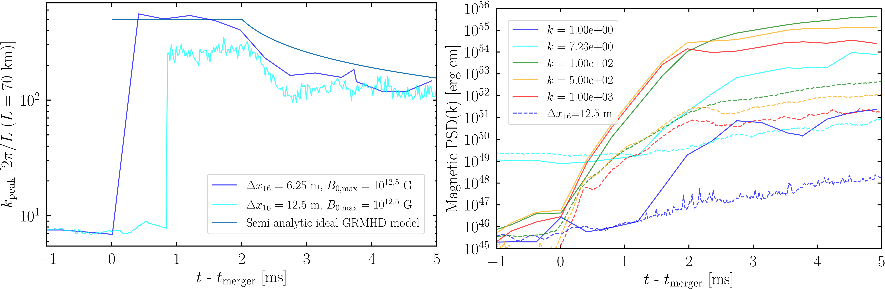
图注：(Left) Wavenumber at the peak amplitude of the magnetic PSD as a function of the post-merger time. The olive curve represents a semi-analytic model for $k_{\rm peak}$ evolution. The cyan curve is for the low resolution. (Right) Magnetic PSD with selected wavenumbers as a function of the post-merger time. The dashed curves are for the low resolution.
对应解读：对应“建议重点查看的图表”第4、第6项，以及“模型拟合”中关于磁谱峰值波数、拟合区间和分辨率稳健性的讨论。
入选理由：该图给出磁功率谱峰值波数 \(k_peak\) 随时间的演化，并与半解析模型及低分辨率结果比较；右图还展示特定波数处磁谱随时间的演化。它能检验磁谱峰值是否按小尺度发电机预期向低波数迁移、饱和过程是否合理，以及分辨率对谱演化的影响，是连接模拟结果与物理模型的重要图。
来源与置信度：\(arxiv_source\)；high；\(arxiv_source\) / main.tex:figure[4]
Fig08
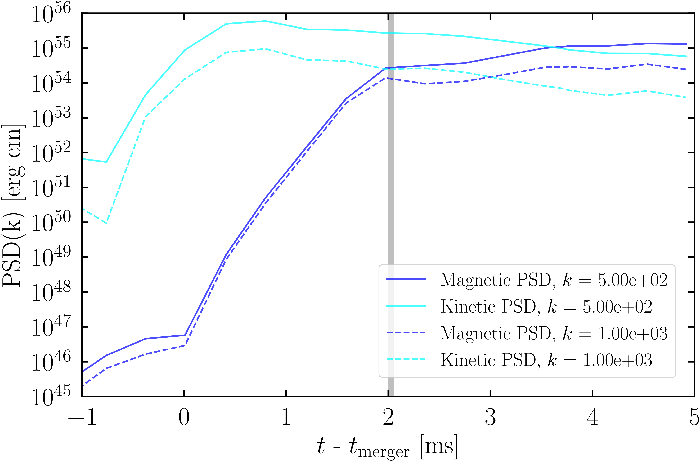
图注：Magnetic (blue) and kinetic (cyan) PSD evolution with selected wavenumbers as a function of the post-merger time. The solid and dashed curves are presented for $k=500$ and $1000$, respectively. The vertical gray line presents our estimation of $t_\mathrm{sat}$ (see the text in detail).
对应解读：对应“模型拟合”中对饱和时间 \(t_sat\)、不同波数处磁/动能谱演化和残差式物理诊断的讨论。
入选理由：该图直接比较选定波数 k=500 和 k=1000 处磁PSD与动能PSD的时间演化，并标出作者估计的饱和时间 \(t_sat\)。它有助于判断所谓饱和不是仅由总磁能曲线视觉判断得出，而是在谱空间中表现为磁能接近动能的过程，对理解小尺度发电机饱和阶段很有价值。
来源与置信度：\(arxiv_source\)；high；\(arxiv_source\) / main.tex:figure[8]
Fig10
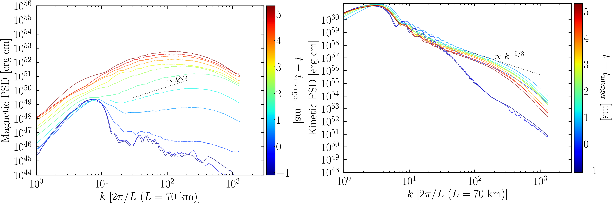
图注：The same as Fig.~3 in the main paper, but with $\Delta x_{(16)}=12.5$~m.
对应解读：对应“建议重点查看的图表”第6项：分辨率收敛或稳健性比较，以及“关键图表逐图导读”图6。
入选理由：该图是主文 Fig03 的较低分辨率版本，提供磁PSD和动能PSD在12.5 m分辨率下的对照。它可用于检查 Kazantsev 与 Kolmogorov 谱特征是否随分辨率变化而保持、耗散截断是否移动，以及最高分辨率结果是否只是网格效应。虽然不如 Fig03 本身核心，但对评估系统误差和收敛性很重要。
来源与置信度：\(arxiv_source\)；high；\(arxiv_source\) / main.tex:figure[10]
强相关工作
这篇工作与双中子星并合磁场放大的长期数值研究直接相连。早期全局广义相对论磁流体模拟已经显示 Kelvin--Helmholtz 不稳定性可以放大磁场，但常受限于几十米到百米级分辨率，或采用强初始磁场。局部高分辨率剪切盒和理想化模拟则更清楚地展示了小尺度发电机和 Kazantsev 谱，但缺少完整并合几何、强引力和中微子微物理。本文的重要位置在于把这两条路线接起来：既是全局并合，又把接触面解析到米级。
相关的相反观点或张力主要不是“磁场不会放大”，而是“放大后的磁场是否足够有序、是否能长期存在、是否能解释短伽马暴”。很多喷流模拟显示需要黑洞--吸积盘系统或长寿命残骸积累大尺度极向磁通；小尺度随机磁场的总能量很高并不自动产生窄喷流。因此检索时应同时关注 \(\mathrm{binary\ neutron\ star\ merger}\)、\(\mathrm{Kelvin\mbox{-}Helmholtz\ instability}\)、\(\mathrm{small\ scale\ dynamo}\)、\(\mathrm{magnetar\ remnant}\)、\(\mathrm{short\ gamma\ ray\ burst\ engine}\)、\(\mathrm{post\ merger\ gravitational\ waves}\) 等关键词。
相似工作：
- https://arxiv.org/abs/2606.11299
- https://ui.adsabs.harvard.edu/search/q=Kelvin-Helmholtz%20magnetic%20field%20amplification%20binary%20neutron%20star%20merger
- https://ui.adsabs.harvard.edu/search/q=small%20scale%20dynamo%20binary%20neutron%20star%20merger
基础理论 / 方法工作：
- https://ui.adsabs.harvard.edu/search/q=Kazantsev%20spectrum%20small%20scale%20dynamo
- https://ui.adsabs.harvard.edu/search/q=Kolmogorov%20spectrum%20turbulence
- https://ui.adsabs.harvard.edu/search/q=GW170817%20binary%20neutron%20star%20merger%20multi-messenger
相反观点 / 张力线索：
- https://ui.adsabs.harvard.edu/search/q=short%20gamma-ray%20burst%20jet%20launching%20binary%20neutron%20star%20magnetic%20field
- https://ui.adsabs.harvard.edu/search/q=magnetar%20remnant%20versus%20black%20hole%20short%20gamma-ray%20burst%20binary%20neutron%20star
3. SN 1006: A Cosmic Laboratory for Investigating Shock Acceleration Physics
- 来源：arXiv / astro-ph.HE
- 链接：https://arxiv.org/abs/2606.12111v1
- 作者：Emma McGinness, Rebecca Diesing, Damiano Caprioli, Fabio Acero
- 评分：novelty 8/10，importance 8/10，relevance 9/10，final 9.35/10
- 推荐理由：SN 1006的多波段含TeV伽马射线建模，直接讨论冲击加速、斜激波效率和伽马射线的轻子/强子起源；对SNR宇宙线加速和TeV天文学高度相关。
中文题目：SN 1006：用一个历史超新星遗迹检验激波加速物理
做了什么：这篇文章把历史 Ia 型超新星遗迹 SN 1006 当作一个“受控得相对好”的宇宙线加速实验室来建模。作者用多区动力学模型同时拟合射电、非热 X 射线和多 TeV 伽马射线的谱、形态和径向亮度分布，并显式加入宇宙线反压导致的激波改造、磁场放大、磁湍动漂移、绝热损失和同步辐射损失。核心结论是：SN 1006 两个极帽的准平行激波区可以达到约 \(20\%\) 的宇宙线加速效率，而准垂直区低于 \(1\%\)；整体伽马射线主要由电子的逆康普顿辐射贡献，只有西北局部与致密云相互作用的区域可能有较明显强子成分。
为什么重要：SN 1006 是少数几何结构、距离、年龄和多波段非热辐射都相对清楚的年轻超新星遗迹之一。它的双极帽形态天然把激波法向与环境磁场夹角的效应放大出来，因此可以直接检验“准平行激波更善于注入和加速离子、准垂直激波电子辐射强但离子效率低”这一来自混合/PIC 模拟的图像。文章的重要性不只在于解释一个源，而在于把微观激波加速结果嵌入遗迹尺度的多波段可观测量中。
理论 / 观测 / 仪器方法价值：对理论而言，本文提供了一个从非线性弥散激波加速到实际遗迹图像和谱能量分布的闭环例子，尤其强调激波倾角依赖的注入效率、磁场放大和波漂移。对观测而言，它说明只看总谱很容易把电子和质子贡献混淆，必须同时利用形态、径向剖面和局部环境密度。对方法而言，多区、随时间演化、带能量损失的动力学模型比单区拟合更能约束 \(K_{ep}\)、磁场和强子伽马射线份额。
为什么应该关注：如果你关心银河系宇宙线是否主要由超新星遗迹产生，SN 1006 是必须面对的标杆源：它既有清晰的 TeV 探测，又有强烈的 X 射线非热极帽，还处在较低密度环境中。本文的结论意味着“超新星遗迹能高效加速质子”并不等同于“每个方向、每个区域都高效”，而是强烈依赖激波倾角和局部环境；这会影响我们如何从伽马射线亮度反推宇宙线能量预算。
展开详细解读：文章讲解、背景、理论、重点章节、图表与相关工作
文章详细讲解
科学问题：SN 1006 的非热辐射从射电延伸到 X 射线和 TeV 伽马射线，但这些辐射并不均匀分布，而是集中在沿环境磁场方向排列的两个极帽。这样的形态长期被视为激波倾角效应的证据：当激波法向与上游磁场近似平行时，离子更容易反复穿越激波并触发磁场放大；当二者近似垂直时，粒子注入和回流条件显著不同。本文要回答的是，能否用同一套物理模型同时解释 SN 1006 的谱、二维形态、径向剖面以及伽马射线的强子/轻子成分。
作者怎么做：文章采用自洽多区动理学模型，把遗迹按不同方位角或激波倾角分成多个区域，每个区域随时间演化粒子分布、激波结构和磁场。模型包含非线性弥散激波加速中的宇宙线反压，包含由宇宙线流不稳定性引起的磁场放大，也包含磁湍动参考系相对于等离子体的漂移，这会降低有效压缩比并改变谱指数。电子部分还跟踪同步辐射冷却和绝热冷却，因此 X 射线薄壳和高能截止不是事后手调，而是由加速、损失和下游输运共同决定。
关键结果：模型能够同时再现 SN 1006 的宽带谱能量分布、双极帽形态以及大部分径向亮度剖面。准平行区的宇宙线加速效率约为 \(20\%\)，说明局部激波能把相当大的动能通量转入非热粒子；准垂直区效率低于 \(1\%\)，与动理学模拟中离子注入强烈依赖倾角的结果一致。伽马射线总量主要来自电子对宇宙微波背景和红外/光学光子的逆康普顿散射，而不是质子-质子碰撞产生的 \(\pi^0\) 衰变；例外是西北区域，因为那里可能遭遇较高密度云，强子辐射被局部增强。
局限和下一步：模型仍难以完全复现射电径向剖面，作者认为这可能不是粒子加速模型本身的问题，而是二维或轴对称几何无法捕捉真实三维流体结构、接触不连续面扰动、环境密度非均匀性和磁场拓扑的结果。下一步需要把本文的动理学加速模块与三维磁流体或流体动力学模拟耦合，并利用更高角分辨率的 TeV 伽马射线图像、X 射线偏振和局部密度诊断来区分电子主导与局部强子增强。
关键结果是怎么做出来的
本文最重要的证据链从样本选择开始：作者没有把 SN 1006 当作一个单区点源，而是利用它已知的双极帽非热形态，把不同方位区域作为不同激波倾角的物理样本。观测约束覆盖射电连续谱、X 射线非热辐射和 GeV/TeV 伽马射线，其中极帽区域对电子高能截止和磁场最敏感，整体 TeV 谱对逆康普顿和强子成分的分解最敏感，径向剖面对下游冷却和输运最敏感。
模型比较的核心不是单一 \(\chi^2\) 数字，而是同时满足多类观测诊断：总谱能否覆盖射电到 TeV；X 射线与伽马射线形态是否集中在极帽；径向剖面是否给出正确的壳层宽度；不同方位是否需要不同加速效率。若只拟合总谱，较低磁场加电子逆康普顿或较高气体密度加强子辐射都可能给出相似 TeV 通量；加入 X 射线薄壳宽度和方位形态后，这种退化被明显压缩。
关于显著性和可信度，本文更像物理正演建模而非盲源搜索，因此关键在于模型族之间的可解释性和稳健性：准平行区采用高注入/高效率时，能同时产生强 X 射线和 TeV 极帽；准垂直区若强行给出高离子效率，会导致伽马射线和激波改造在非极帽区域过强。西北局部区域的强子增强并不是推翻整体轻子主导，而是由环境密度升高后 \(pp\) 碰撞率增加自然产生的局部例外。
支撑结论的图表应包括宽带谱能量分布、不同辐射机制分量图、模拟与观测的二维形态对比、不同能段的径向剖面以及随方位或激波倾角变化的加速效率。读者应特别检查模型是否同时通过 X 射线和 TeV 的空间约束，而不是只在积分谱上看起来合理；还应检查西北区域是否由独立密度证据支持。
主要系统误差来自距离、年龄、爆炸能量、环境密度、下游磁场、电子-质子比 \(K_{ep}\)、背景光场能量密度以及仪器点扩散函数。稳健性检验应看作者改变这些输入后，准平行高效率、准垂直低效率和整体轻子主导这三个结论是否仍保持。尤其要关注射电剖面拟合失败的部分，因为它可能暗示三维结构或历史注入变化，而这些因素也可能影响从表面亮度反推局部加速效率。
背景知识
SN 1006 是公元 \(1006\) 年记录到的历史超新星遗迹，通常被归类为 Ia 型爆发残骸。它距离近、年龄已知、角直径大，并且位于相对稀薄环境中，因此是研究年轻超新星遗迹非热辐射和宇宙线加速的经典对象。与许多处在复杂星际介质中的遗迹相比，SN 1006 的几何和环境较简单，这使得模型的不确定性相对可控。
历史上，超新星遗迹被认为是银河宇宙线到膝区以下的主要候选源，因为它们的总机械能和发生率足以维持银河宇宙线能量密度。但能量预算只是必要条件，不是充分证据。真正需要证明的是，遗迹激波能够以足够高效率加速离子，并且能把粒子加速到足够高能量。SN 1006 的非热 X 射线和 TeV 伽马射线为这个问题提供了关键约束。
SN 1006 的一个独特优势是双极帽结构：射电、X 射线和伽马射线明亮区不是完整圆壳，而是集中在两个相对的边缘区域。这常被解释为环境磁场方向与激波法向的几何选择效应。准平行模型认为极帽对应磁场与激波法向平行、离子注入高效；另一类观点则曾认为准垂直区电子加速更亮也可能产生极帽。本文的意义在于用多波段和多区模型把这两种解释放到同一框架下检验。
为什么现在值得重新看？一方面，H.E.S.S.、Fermi-LAT、XMM-Newton、Chandra 等观测已经积累了足够的谱和形态信息；另一方面，近十多年动理学模拟对激波倾角、离子注入、磁场放大和电子加速给出了更明确的物理预期。把这些微观结果接到遗迹尺度模型上，正是当前高能天体物理的关键连接问题。
常见误区之一是把“探测到 TeV 伽马射线”直接等同于“发现强子宇宙线源”。事实上，年轻遗迹中的高能电子可通过逆康普顿散射产生 TeV 光子，尤其在低密度环境中，强子 \(pp\) 通道会被压低。另一个误区是把全遗迹平均加速效率当作局部激波效率；SN 1006 表明，倾角和环境可导致同一遗迹内效率相差一个数量级以上。
基础理论 / 方法脉络
基本物理图像是弥散激波加速：带电粒子在激波上下游磁湍动中散射，多次穿越激波，每次从收敛流中获得少量能量。若粒子能够被注入到足够高的动量并保持散射，它们的分布会形成近似幂律。强激波的经典测试粒子极限给出接近 \(p^{-4}\) 的动量谱，但当宇宙线压力不可忽略时，激波结构会被反压改造，谱形、压缩比和热气体温度都会改变。
SN 1006 的关键变量之一是激波倾角，通常记为 \(\theta_{Bn}\)，即上游磁场 \(\mathbf{B}_0\) 与激波法向 \(\mathbf{n}\) 的夹角。准平行区 \(\theta_{Bn}\approx 0\) 时，离子容易沿磁力线返回上游并激发湍动；准垂直区 \(\theta_{Bn}\approx 90^\circ\) 时，离子跨场返回较困难，注入效率显著下降。本文把这种倾角依赖作为不同方位区域的核心物理输入。
辐射方面，射电到 X 射线非热连续谱主要来自相对论电子在磁场中的同步辐射。射电约束电子低能幂律和总电子数，X 射线约束最高能电子、磁场强度和同步冷却。TeV 伽马射线可以来自电子逆康普顿散射，也可以来自高能质子与气体碰撞产生的中性 pion 衰变。区分二者必须结合气体密度、磁场、X 射线壳宽和伽马射线形态。
模型方法上，多区演化比单区模型更贴近 SN 1006。每个区域都有自己的激波速度、倾角、磁场放大、注入效率和粒子分布，随后把各区域辐射叠加并投影到天空平面。这样可以同时拟合积分谱和空间剖面。常见退化包括：较低磁场需要更多电子来解释同步辐射，从而提高逆康普顿通量；较高密度增强强子伽马射线；较强冷却可让 X 射线壳更窄，但也改变高能谱截止。
观测系统误差也很关键。X 射线热/非热成分分离、TeV 仪器点扩散函数、背景扣除、距离和年龄都会影响模型推断。对于 SN 1006 这种大角直径源，形态比较要卷积仪器响应；径向剖面要考虑投影效应；局部西北云相互作用要避免把局部高密度效应误认为全遗迹强子主导。
公式与推导
第一步从激波能量通量出发。若上游密度为 \(\rho_0\)，激波速度为 \(u_s\)，进入激波的动能通量可写为
这里 \(F_{\rm kin}\) 是单位面积、单位时间穿过激波的动能。本文讨论的宇宙线加速效率本质上是非热粒子获得的能量通量与这个量的比值。
定义局部宇宙线效率为
其中 \(\theta_{Bn}\) 是激波法向与上游磁场的夹角。本文的核心结论可概括为准平行区 \(\eta_{\rm CR}\sim 0.2\)，准垂直区 \(\eta_{\rm CR}<0.01\)。这个表达式提醒读者，效率是局部量，不应只用全遗迹平均亮度替代。
在测试粒子弥散激波加速中，动量分布的幂律指数由压缩比 \(r=u_1/u_2\) 决定：
这里 \(u_1\) 和 \(u_2\) 分别为激波上下游流速，\(f(p)\) 是相空间分布函数。强激波若 \(r\approx 4\)，则 \(q\approx 4\)。但在本文的非线性模型中，宇宙线反压和波漂移会改变粒子感受到的有效压缩比。
若散射中心以 Alfvén 速度或放大湍动速度相对于等离子体漂移，可用有效压缩比表示为
其中 \(v_{{\rm w},1}\) 和 \(v_{{\rm w},2}\) 是上下游散射中心速度。波漂移通常降低 \(r_{\rm eff}\)，使谱变软，这是连接微观湍动和宽带谱形的重要环节。
最高电子能量由加速时间和损失时间竞争决定。若扩散系数为 \(D(E)\)，加速时间近似为
同步辐射和逆康普顿损失时间可写为
其中 \(U_{\rm tot}=U_B+U_{\rm rad}\)，\(U_B=B^2/(8\pi)\)。令 \(t_{\rm acc}=t_{\rm loss}\) 可估计电子截止能量。
同步辐射特征频率与电子能量和磁场相关：
其中 \(\gamma=E/(m_ec^2)\)。因此 X 射线截止位置同时约束 \(B\) 和最高电子能量，而 X 射线壳宽还受到下游冷却长度影响。
逆康普顿在 Thomson 极限下的散射光子能量近似为
其中 \(\epsilon_{\rm ph}\) 是种子光子能量。若 TeV 光子可由与 X 射线同步辐射相同的电子产生，则同步与逆康普顿通量比约为
这个关系是判断轻子模型所需磁场强度的快速诊断。
强子伽马射线的标度则依赖气体密度和质子能量库：
其中 \(n_{\rm H}\) 是靶气体密度，\(\sigma_{pp}\) 是非弹性碰撞截面，\(W_p\) 是高能质子总能量，\(\kappa_\gamma\) 是进入伽马射线的能量比例。西北区域若 \(n_{\rm H}\) 升高，即使 \(W_p\) 不极端，也能局部增强强子辐射。
最后，观测拟合可用多波段似然统一表示：
其中 \(F_i^{\rm obs}\) 是观测通量或表面亮度点，\(F_i^{\rm mod}\) 是模型预测，\(\boldsymbol{\theta}\) 包括 \(B\)、\(K_{ep}\)、\(\eta_{\rm CR}\)、\(n_{\rm H}\) 和几何参数。实际比较还应把模型图像与仪器响应卷积后再计算残差。
模型拟合 / 应用方法
本文的拟合对象不是单一谱线或单一光变曲线，而是多波段、多空间维度的联合约束。主要拟合量包括各区域的宇宙线加速效率、电子-质子比 \(K_{ep}\)、磁场放大强度、环境密度、粒子最高能量和辐射分量归一化。模型需要同时解释射电谱指数、X 射线截止、TeV 谱形以及极帽形态。
统计上，这类工作常采用正演建模：给定爆炸年龄、距离、激波速度、环境密度和磁场几何，演化粒子分布并计算同步辐射、逆康普顿和 \(pp\) 伽马射线，再与观测谱点和图像剖面比较。即使论文不一定以完整贝叶斯后验呈现，读者也应按似然问题理解：哪些参数改变会让残差系统性偏向某个能段或某个方位，这比单个最佳拟合值更重要。
主要退化包括 \(B\) 与电子数的退化：较强磁场下较少电子即可给出同样同步辐射，但逆康普顿会降低；较弱磁场则需要更多电子，TeV 轻子通量增强。另一个退化是 \(n_{\rm H}\) 与 \(W_p\) 的乘积：强子伽马射线近似随二者相乘而变，因此没有独立密度约束时很难仅凭 TeV 通量确定质子能量。径向剖面和局部云相互作用信息正是打破这些退化的关键。
残差诊断应分能段看。若模型能拟合总谱但 X 射线壳太宽，说明磁场、冷却或输运存在问题；若 TeV 形态比 X 射线更弥散，需要检查电子逆康普顿和强子分量空间分布；若射电剖面不对，可能是低能电子注入历史、下游湍流衰减或三维流体结构未被捕捉。本文特别指出射电径向剖面需要三维水动力效应，这是一条重要的模型失败线索。
系统误差方面，距离和年龄影响激波速度与能量尺度，气体密度影响强子解释，背景光场影响逆康普顿通量，仪器点扩散函数影响 TeV 壳层宽度。对实际应用而言，本文模型可作为分析其他双极型遗迹的模板，但不能简单套用同一效率；必须重新评估磁场方向、环境密度结构和局部云相互作用。
重点章节 / 结果段落怎么读
-
数据和观测约束部分：读者应先确认作者使用了哪些射电、X 射线、GeV/TeV 伽马射线数据，以及是否把积分谱、二维形态和径向剖面都纳入约束。重点不是数据清单本身，而是每类数据分别约束哪些物理量：射电约束低能电子，X 射线约束高能电子与磁场，TeV 约束轻子/强子分解。
-
多区动理学模型部分：这是全文技术核心。应重点阅读粒子注入、激波改造、磁场放大、波漂移和时间演化如何实现，以及激波倾角 \(\theta_{Bn}\) 如何映射到不同方位区域。若这里的倾角依赖只是经验参数，结论力度会不同；若它与动理学模拟结果一致，则物理解释更强。
-
宽带谱结果部分：应看同步辐射、逆康普顿和 \(\pi^0\) 衰变分量如何叠加到观测谱能量分布。特别关注 TeV 能段中电子逆康普顿是否占主导，以及西北区域强子增强是否需要不合理的质子能量或密度。
-
形态和径向剖面部分：这一节决定模型是否真正解释 SN 1006，而不是只拟合了总谱。读者应检查模拟图像是否与 X 射线和伽马射线极帽位置一致，径向亮度峰值和壳宽是否匹配，射电剖面失败是否集中在可由三维结构解释的方面。
-
讨论和局限部分：重点看作者如何把约 \(20\%\) 的准平行效率和低于 \(1\%\) 的准垂直效率与混合/PIC 模拟对比，以及如何解释整体轻子主导与局部强子增强并存。这里也应寻找作者对未来 CTA、X 射线偏振或三维流体耦合模拟的展望。
建议重点查看的图表
-
宽带谱能量分布图：检查射电、X 射线、GeV/TeV 数据点是否由同一组参数解释；重点看同步、逆康普顿和 \(\pi^0\) 分量在 TeV 区域的相对贡献。
-
不同方位或不同激波倾角的加速效率图：检查 \(η_{\rm CR}\) 是否在准平行区达到约 \(20\%\)，在准垂直区低于 \(1\%\)，以及过渡是否平滑或依赖人为阈值。
-
X 射线与伽马射线二维形态对比图：看模型极帽位置、开角和亮度对比是否与观测一致；注意是否已经卷积仪器点扩散函数。
-
径向亮度剖面图：分射电、X 射线和伽马射线检查峰值半径、壳宽和下游拖尾。射电剖面不匹配是理解模型局限的重点。
-
局部西北区域分量图或表：看密度增强如何改变强子贡献，是否只影响局部而非全遗迹。
-
参数敏感性或稳健性检验：若有，应检查改变密度、磁场、距离、电子-质子比后，轻子主导和倾角依赖效率是否仍成立。
关键图表逐图导读
图 1：通常应是 SN 1006 的多波段形态或示意图。横纵轴多为空间坐标或赤经赤纬，颜色表示表面亮度，可能叠加射电、X 射线或 TeV 等值线。读图时要看双极帽是否沿同一方向排列，以及该方向是否与假定环境磁场一致。陷阱是不同能段角分辨率差别很大，不能把未经卷积的细结构直接比较。
图 2：宽带谱能量分布。横轴为频率或光子能量，纵轴为 \(\nu F_\nu\) 或 \(E^2 dN/dE\)。数据点来自射电、X 射线、GeV 和 TeV，模型线通常分为同步辐射、逆康普顿和强子 \(\pi^0\) 衰变。关键看 TeV 数据是否主要落在逆康普顿曲线上，以及强子分量是否只在局部或高密度条件下显著。陷阱是积分谱可以隐藏空间信息，不能单凭这张图断言物理机制。
图 3：粒子谱或区域分解图。横轴可能是粒子动量或能量，纵轴为 \(p^4 f(p)\)、\(E^2 dN/dE\) 或粒子数。应比较准平行和准垂直区域中质子与电子谱的归一化和截止。若准平行质子谱显著更高，说明倾角依赖注入在模型中起决定作用。陷阱是电子谱归一化还受 \(K_{ep}\) 和磁场约束，不能直接等同于总非热能量。
图 4：径向剖面对比。横轴是投影半径或距激波边缘的角距离，纵轴是归一化表面亮度。X 射线剖面的窄壳宽主要检验同步冷却和磁场，伽马射线剖面检验辐射机制空间分布，射电剖面检验低能电子和三维结构。关键残差若集中在射电，支持作者关于三维水动力效应不足的解释。
图 5：加速效率或物理参数随方位角变化图。横轴可能是方位角或 \(\theta_{Bn}\)，纵轴为 \(\eta_{\rm CR}\)、磁场强度或非热亮度。应看高效率峰是否对应观测极帽，而低效率区是否对应较暗边缘。陷阱是方位角到 \(\theta_{Bn}\) 的映射依赖三维磁场方向和投影几何。
图 6：西北区域或密度云相互作用诊断。横轴可能是能量或空间位置，纵轴为局部通量、密度或分量比例。读者应确认强子增强是否由独立密度证据支撑，而不是通过任意提高质子能量来拟合。若强子分量只在西北局部显著，则它与“整体轻子主导”并不矛盾。
论文原图 / 可嵌入图片
Fig03
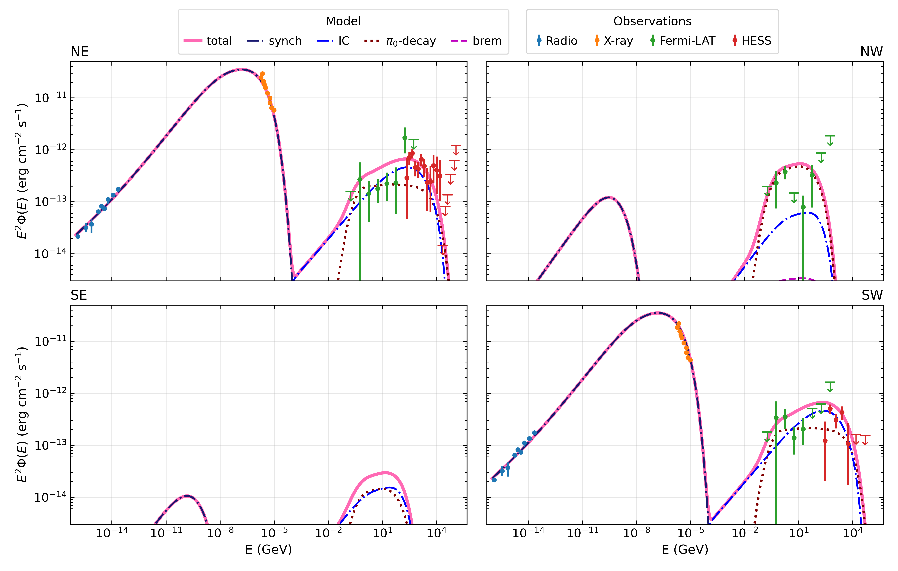
图注：Non-thermal multi-wavelength SED for each SN 1006 quadrant (identified in title). Curves correspond to: total emission (solid pink), synchrotron (dot-dashed dark blue), IC (dot-dashed bright blue), $\pi^0$-decay (dotted maroon), and bremsstrahlung (dashed magenta, typically negligible). The data points show: radio \(\citep\)[blue, from a selection by][]{allen+01}; X-rays from Suzaku \(\citep\)[orange,][]{bamba+08}; $\gamma$-rays from Fermi-LAT \(\citep\)[green,][]{lemoine-goumard+25} and HESS \(\citep\)[red,][]{SN1006HESS}. We scale the radio and X-ray spectral properties between the polar caps as in \(\cite{lemoine-goumard+25},\) assuming that the FS non-thermal emission is negligible in the non-polar caps in both radio \(\citep\)[e.g.,][]{rothenflug+04,cotton+24} and X-rays \(\citep\)[e.g.,][]{koyama+95,long+03,rothenflug+04}. Both polar caps are reasonably well-fit with the same model, which is essentially leptonic at TeV energies, with a hadronic contribution in the GeV. For the non-polar caps, the modeled non-thermal emission (excluding the NW $\gamma$-rays) represents an upper limit. In the dense NW quadrant, a largely hadronic model reasonably fits the observed $\gamma$-ray emission.
对应解读：对应“建议重点查看的图表”第1项宽带谱能量分布、第5项西北区域分量，以及“关键图表逐图导读”中图2的同步/逆康普顿/π0分量解读。
入选理由：这是最直接支撑论文核心结论的图：按象限给出射电、X射线、Fermi-LAT和HESS伽马射线SED，并明确区分同步辐射、逆康普顿、π0衰变和轫致辐射分量。它可以检验TeV辐射是否主要由IC主导、GeV/西北区域是否存在强子增强，以及同一模型能否解释两个极帽的多波段谱，是判断“整体轻子主导、局部西北强子增强”的关键证据。
来源与置信度：\(arxiv_source\)；high；\(arxiv_source\) / main.tex:figure[3]
Fig05
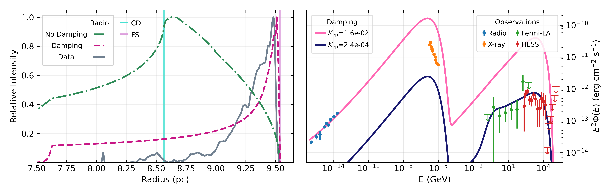
图注：Left panel: NE radio (1335 MHz) profiles for the non-damped (dot-dashed green) and damped model ($\Gamma_{\rm nl} = 2\times10^{-2}$ yr$^{-1}$, dashed magenta). The observed profile \(\citep\)[solid gray,][]{cotton+24} is extracted from the dashed box in Figure \(\ref{fig:LOS}.\) The estimated positions of CD (solid cyan) and FS (solid plum) are shown. Right panel: fit of the SED (from Figure \ref{fig:SED}) for two damped models corresponding to two different $\Kep$ values (identified in legend, pink and dark blue curves). A single $\Kep$ value can account for either the radio or $\gamma$ emission, but not both; hence we rule out damping as the explanation for the width of the radio rims.
对应解读：对应“建议重点查看的图表”第4项径向亮度剖面，尤其是射电剖面不匹配；也对应“模型拟合”中关于射电残差和三维水动力效应不足的讨论。
入选理由：该图专门展示NE射电1335 MHz径向剖面，并比较非阻尼与阻尼模型，还在右侧检查不同Kep下SED能否同时拟合射电和伽马射线。它直接支撑作者排除简单磁场阻尼解释射电壳宽、并指出射电剖面是模型失败线索的论点，比一般形态图更能体现模型局限和参数退化。
来源与置信度：\(arxiv_source\)；high；\(arxiv_source\) / main.tex:figure[5]
Fig01
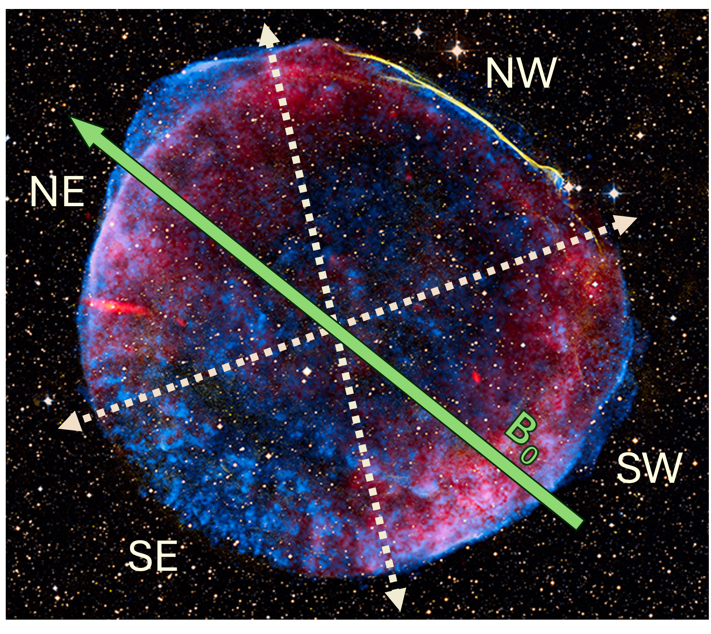
图注：SN 1006 composite image in X-ray (blue), radio (red), and optical (yellow/orange) bands. The quadrants are sectioned (dashed arrows) and labeled (white). The ambient magnetic field $B_0$ (green arrow) is quasi-parallel to the NE/SW limbs, and quasi-perpendicular to the NW/SE limbs. The NW limb is radially compressed. Image credit: X-ray: NASA/CXC/Rutgers/G.Cassam-Chenai, J.Hughes et al.; Radio: NRAO/AUI/NSF/GBT/VLA/Dyer, Maddalena $\&$ Cornwell; Optical: Middlebury College/F.Winkler, NOAO/AURA/NSF/CTIO Schmidt $\&$ DSS.
对应解读：对应“建议重点查看的图表”第3项X射线与多波段二维形态对比，以及“关键图表逐图导读”中图1关于双极帽、环境磁场方向和激波倾角的说明。
入选理由：该图给出SN 1006的X射线、射电和光学复合图，并标出四个象限与环境磁场方向，明确说明NE/SW为准平行、NW/SE为准垂直。它是理解后续多区模型、极帽形态和倾角依赖加速效率的几何基础。
来源与置信度：\(arxiv_source\)；high；\(arxiv_source\) / main.tex:figure[1]
Fig04
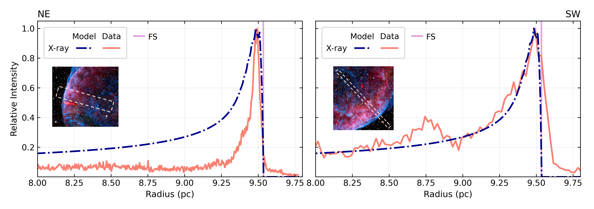
图注：X-ray (1-7 keV, dot-dashed blue) radial profiles for the polar caps (identified in title), with the estimated FS (solid plum) indicated. Observed 1-7 keV X-ray profiles (orange, Chandra\textsuperscript{\footref{fn:ID}}) were extracted from areas indicated by dashed boxes on the inset SN 1006 composite image. Each quadrant is scaled individually per photon energy. Both quadrants have thin X-ray rims that peak near the FS and are well approximated by our model.
对应解读：对应“建议重点查看的图表”第4项径向亮度剖面，以及“关键图表逐图导读”中图4关于X射线窄壳、前向激波位置和同步冷却检验的内容。
入选理由：该图比较两个极帽的1–7 keV X射线径向剖面与模型，标出前向激波位置，直接检验模型是否能再现薄X射线壳。它对约束高能电子冷却、磁场强度和下游输运很重要，是SED之外的关键空间约束。
来源与置信度：\(arxiv_source\)；high；\(arxiv_source\) / main.tex:figure[4]
Fig02
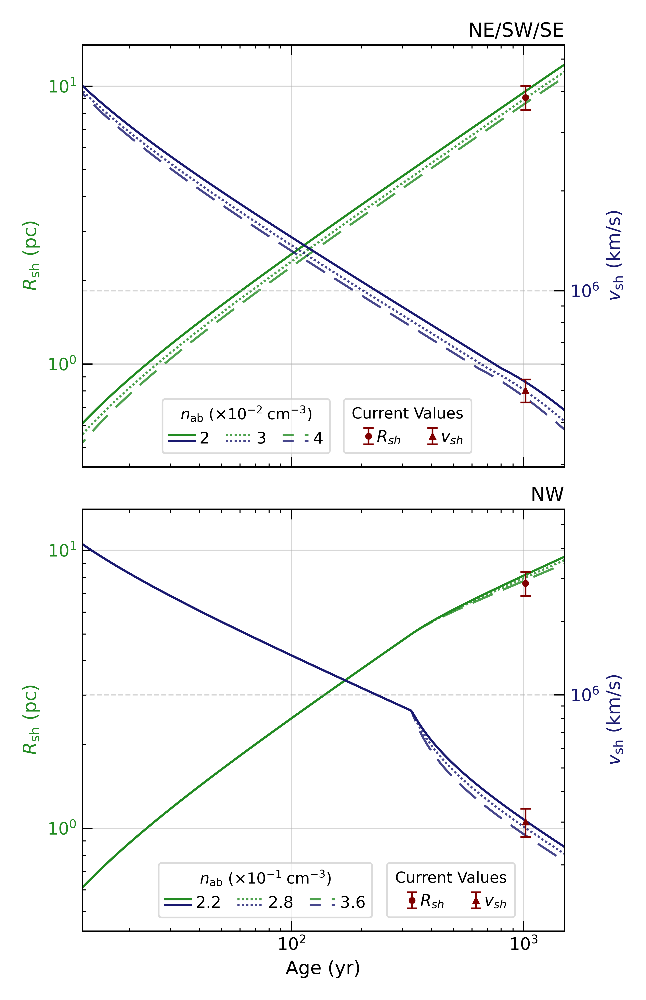
图注：Evolution of shock radius and velocity (green and blue curves/axes, respectively) for the quadrants identified in the title, assuming $\Eej = 10^{51}$ ergs and $\Mej = 1.2$ $\text{M}_{\odot}$. All curves are consistent with the measurements of $v_{\rm sh,age} = 5000 \pm 400$ $\rm km\,s^{-1}$ and $R_{\rm sh,age} = 9.1 \pm 0.9$ pc for the top panel, and $v_{\rm sh,age} = 3000 \pm 400$ $\rm km\,s^{-1}$ and $R_{\rm sh,age} = 7.6 \pm 0.8$ pc for the bottom panel. Different line styles correspond to different ambient density $\nism\sim 0.02-0.05$ cm$^{-3}$ (top panel) and cloud density $\ncl\sim 0.22-0.36$ cm$^{-3}$ (bottom panel). The sudden change in slope at $\sim 600$ yrs is attributed to the density jump from $\nism = 0.02$ cm$^{-3}$ to $\ncl$ at $\Rcl = 5$ pc.
对应解读：对应“建议重点查看的图表”第5项西北区域密度云相互作用，以及“模型拟合”中环境密度、激波半径和速度作为正演建模输入的讨论。
入选理由：该图展示不同象限的激波半径和速度演化，并在西北区域包含从低密度介质进入高密度云后的斜率变化。虽然它不是辐射分量图，也不直接给出强子/轻子比例，但为西北局部密度增强和后续强子伽马射线增强提供动力学背景。
来源与置信度：\(arxiv_source\)；high；\(arxiv_source\) / main.tex:figure[2]
强相关工作
这篇工作与两条研究线直接相连。第一条是超新星遗迹作为银河宇宙线源的经典问题，包括 Bell 型磁场放大、非线性弥散激波加速和年轻遗迹 X 射线薄壳解释。可检索关键词包括 “SN 1006 diffusive shock acceleration”, “nonlinear DSA supernova remnants”, “magnetic field amplification cosmic rays”, “shock obliquity particle injection”。
第二条是 SN 1006 伽马射线起源的长期争论：TeV 辐射究竟是电子逆康普顿主导，还是强子 \(pp\) 过程主导。低环境密度通常支持轻子解释，但局部云相互作用又允许局部强子增强。类似讨论也出现在 RX J1713.7-3946、Tycho 和 Cas A 等年轻遗迹中。可检索关键词包括 “SN 1006 HESS leptonic hadronic”, “Fermi LAT SN 1006 gamma rays”, “CTA supernova remnant morphology”, “quasi-parallel quasi-perpendicular shocks”。
与相反观点或张力相关的是：有些模型强调准垂直激波可通过电子漂移加速产生强同步辐射，也有些强子模型倾向于用更高密度或更高质子能量解释 TeV 数据。本文的立场是，用同时包含形态和径向剖面的多区模型后，整体轻子主导与准平行离子高效率更自然，但射电剖面和三维环境仍留下未完全解决的空间。
相似工作：
- https://arxiv.org/abs/2606.12111
- https://ui.adsabs.harvard.edu/search/q=SN%201006%20HESS%20gamma%20rays
- https://ui.adsabs.harvard.edu/search/q=SN%201006%20diffusive%20shock%20acceleration
基础理论 / 方法工作：
- https://ui.adsabs.harvard.edu/search/q=Bell%201978%20diffusive%20shock%20acceleration
- https://ui.adsabs.harvard.edu/search/q=Blandford%20Ostriker%201978%20particle%20acceleration%20shocks
- https://ui.adsabs.harvard.edu/search/q=Bell%202004%20turbulent%20amplification%20magnetic%20field%20cosmic%20rays
相反观点 / 张力线索：
- https://ui.adsabs.harvard.edu/search/q=SN%201006%20leptonic%20hadronic%20gamma-ray%20emission
- https://ui.adsabs.harvard.edu/search/q=quasi-perpendicular%20shock%20electron%20acceleration%20supernova%20remnants
4. A Jet from a Nearly Dormant Black Hole
- 来源：arXiv / astro-ph.HE
- 链接：https://arxiv.org/abs/2606.11900v1
- 作者：Xiaopeng Cheng, Hai Yang, Jun Yang, Xiaofeng Li, Feng Yuan, Rusen Lu, Hyunwook Ro, Bong Won Sohn
- 评分：novelty 9/10，importance 8/10，relevance 8/10，final 9.30/10
- 推荐理由：在近休眠超大质量黑洞M60中VLBI探测到双边喷流并用GRMHD解释极低吸积率下的喷流发射，观测结果清晰且对喷流启动物理重要。
中文题目：近乎休眠黑洞也能发射喷流：M60 核区的双边喷流与异常陡峭核位移
做了什么：这篇文章用多频甚长基线干涉测量观测了近邻椭圆星系 M60，也就是 NGC 4649 的低吸积率超大质量黑洞核区。目标黑洞的爱丁顿比只有 \(\sim10^{-8}\)，接近“休眠”状态，但作者仍然探测到紧凑的双边准直喷流，并测得非常陡的同步辐射谱和异常强的频率依赖核心位置移动。通过把 VLBI 结构、谱指数和核心位移与广义相对论磁流体力学及辐射转移模拟比较，文章认为这个喷流发射区是磁主导、非能量均分的，不能用标准圆锥形能量均分喷流图像简单解释。
为什么重要：低吸积率黑洞是否还能维持准直喷流，是连接活动星系核、低光度活动星系核和真正休眠黑洞的关键问题。银河系中心 \(\mathrm{Sgr\ A^*}\) 和 M31 中心黑洞虽然非常近，但至今没有清楚的喷流形态证据。M60 提供了一个质量大、角尺度相对有利、吸积率极低的实验室；如果在这里仍能看到事件视界尺度附近的喷流，就说明喷流产生不要求明亮的标准吸积盘，而可能在极弱辐射、磁主导的吸积流中延续。
理论 / 观测 / 仪器方法价值：观测价值在于，论文把多频 VLBI 的形态、谱指数和核心位移合在一起，而不只是报告一个延展射电源。理论价值在于，它把极低爱丁顿比系统放进喷流发射模型检验中，指出标准 Blandford–Königl 式圆锥能量均分喷流在该源上失效。方法价值在于，核心位移被用来把不同频率射电核心外推回真正中心发动机位置，作者声称 8.37 GHz 核心上游仅约 \(57\,\mu\mathrm{as}\)，约 \(10\) 个 \(R_{\rm S}\) 投影距离处就是黑洞。
为什么应该关注：如果你关心黑洞反馈，这篇文章说明即使辐射上几乎沉默的黑洞也可能继续向外输送机械能。如果你关心事件视界尺度喷流物理，它提供了一个不同于 M87 和典型耀变体的低吸积率端点。如果你做 VLBI 或低光度活动星系核，这篇文章值得细读，因为结论很大程度依赖频率配准、核心位移拟合、谱指数图和模拟可重复性，而这些正是该领域容易产生系统误差的地方。
展开详细解读：文章讲解、背景、理论、重点章节、图表与相关工作
文章详细讲解
科学问题：大多数星系中心都有超大质量黑洞，但多数时间并不处于明亮活动星系核状态。问题不是这些黑洞有没有吸积，而是在极低吸积率、辐射效率低、盘很暗的情况下，黑洞磁层和内吸积流是否还能组织出准直喷流。M60 的核区特别有用，因为它是近邻巨大椭圆星系，中心黑洞质量大，爱丁顿比约为 \(\sim10^{-8}\)，处在低光度活动星系核与休眠黑洞之间的边界。若这样一个源仍有清楚双边喷流，就会把喷流产生条件推到比经典射电星系更极端的低吸积率区域。
作者怎么做：文章使用多频 VLBI 观测 M60 核心，而不是依赖低分辨率射电延展结构。VLBI 的高角分辨率允许作者在毫角秒以下尺度上分离紧凑核心和两侧延展成分，并测量不同频率下表观射电核心的位置变化。多频数据还给出谱指数图，使作者能够区分自吸收核心、光学薄同步辐射喷流和可能的结构混叠。随后，作者把观测到的形态和核心位移同广义相对论磁流体力学加辐射转移模拟比较，以检验是否能在低吸积率、磁主导条件下复现这些特征。
关键结果：论文报告了紧凑双边喷流，且同步辐射谱异常陡峭；这意味着观测到的核心附近辐射并非一个简单平坦谱、能量均分、光学厚到薄连续过渡的标准圆锥喷流。更重要的是，射电核心随频率向上游移动的幅度非常强，作者称其频率依赖关系比常见的 \(r_{\rm core}\propto \nu^{-1}\) 型核心位移更陡。通过外推，他们把中心发动机定位在 8.37 GHz 核心上游约 \(57\,\mu\mathrm{as}\)，对应投影尺度约 \(10R_{\rm S}\)。这使 M60 成为少数可在十几个引力半径尺度上约束低吸积率喷流发射区的系统。
局限和下一步：该结论依赖多频图像配准、有限 \(u\)-\(v\) 覆盖下的结构恢复、喷流视角和黑洞质量距离换算。双边结构可帮助限制相对论多普勒效应，但并不能完全消除速度、倾角、内禀亮度不对称之间的退化。核心位移若受光学薄结构混入、散射、频率相关分辨率或模型拟合成分选择影响，外推到 \(R_{\rm S}\) 尺度时误差会被放大。下一步应包括更宽频率跨度、更密集时间采样、相位参考或更严格的绝对天体测量，以及偏振和法拉第旋转测量，以直接测试磁主导和非能量均分解释。
关键结果是怎么做出来的
数据和样本选择方面，本文不是统计样本论文，而是针对单个关键源 M60 的多频 VLBI 个例研究。样本选择的科学逻辑是：M60 的中心黑洞质量大、距离近、爱丁顿比极低，因此同样角分辨率对应的 \(R_{\rm S}\) 数较小，适合检验“近乎休眠黑洞能否发射喷流”。作者的核心证据链来自多频射电图像、成分模型拟合、谱指数分布和核心位移曲线，而非总流量变化或宽线活动性。
事件数在这里应理解为观测频段、基线采样和可分辨结构成分数量，而不是瞬变事件计数。论文声称探测到紧凑双边喷流，关键是两侧延展是否在多个频率、多个成像权重或模型拟合方案下持续出现，并且是否与束形旁瓣或清洁算法伪影区分开。读者应重点检查每个频率的 VLBI 图像中核心和两侧喷流的信噪比、等值线起始倍数、合成波束方向，以及双边结构是否沿同一位置角连续排列。
显著性和置信度的核心不只是“图上看见了喷流”，还包括核心位移拟合的统计约束。不同频率下表观核心位置通常拟合为 \(r_{\rm core}(\nu)=r_0+A\nu^{-1/k_r}\)，其中 \(k_r\) 描述喷流物理状态。标准能量均分圆锥喷流常给出 \(k_r\approx1\)。如果本文得到显著偏离 \(k_r\approx1\) 的陡峭核心位移关系，就需要看误差条、协方差、是否排除某个频段后仍成立，以及是否考虑了系统性配准误差。
模型比较方面，作者用 GRMHD 和辐射转移模拟复现形态和核心位移，这比单纯经验拟合更有物理约束。读者应看模拟是否同时匹配总强度图、谱指数、喷流双边亮度比和核心位移，而不是只调到某一项。若模型只匹配 \(r_{\rm core}\) 斜率但不能解释陡谱或双边形态，那么“磁主导非均分”的推断会弱化；反之，多诊断量同时符合才支持该物理图像。
主要系统误差包括频率间图像配准、不同频率分辨率差异、低信噪比延展结构的清洁偏差、散射或吸收造成的表观核心移动、以及喷流倾角未知带来的投影效应。稳健性检验应包括改变成像权重、改变模型成分数、只用共同 \(u\)-\(v\) 范围重建谱指数、排除最低或最高频点后重拟合核心位移，以及把观测结果同标准 \(k_r=1\) 模型做残差比较。
背景知识
研究对象是 M60，也称 NGC 4649，是室女座方向的近邻巨大椭圆星系，中心有大质量超大质量黑洞。它不是典型明亮类星体，也不是强耀变体，而是低光度核活动系统。这样的系统在电磁辐射上很弱，但它们可能通过喷流和热风向周围热气体注入能量，因此对星系反馈仍然重要。
历史问题是低吸积率黑洞的喷流是否普遍存在。经典活动星系核的喷流经常同明亮吸积盘、强非热射电核和相对论多普勒增强联系在一起；但银河系中心 \(\mathrm{Sgr\ A^*}\) 和 M31 中心黑洞的吸积率极低，虽然有射电和高能辐射，却没有无争议的准直喷流图像。于是一个自然问题是：当吸积流变成辐射低效、几何厚、磁场可能占主导的状态时，喷流是消失、间歇出现，还是以更暗更紧凑的形式保留下来。
观测背景是 VLBI 在毫角秒到微角秒尺度上能分辨活动星系核核心区。对低光度源而言，困难在于流量低、结构小、谱形可能陡，且不同频率下的射电核心并非真实黑洞位置，而是喷流中光深 \(\tau_\nu\sim1\) 的表面。多频核心位移测量可以把可见核心向上游外推，估计中心发动机位置和磁场结构，但它对配准和模型假设高度敏感。
为什么现在值得重新看：一方面，EHT 对 M87 和 \(\mathrm{Sgr\ A^*}\) 的成像把事件视界尺度喷流和吸积物理推到前台；另一方面，GRMHD 模拟已经能在不同磁通量、电子温度处方和观测视角下产生可直接同 VLBI 图像比较的合成观测。M60 处在低吸积率端，因此能测试这些模型是否只适用于明亮喷流源，还是也能解释接近休眠的黑洞。
常见误区有三个。第一，把“低爱丁顿比”误解为“无动力输出”，但低辐射效率系统可能机械功率并不低。第二，把 VLBI 图中的最亮点等同于黑洞位置；实际最亮射电核心通常是频率相关的光深表面。第三，把平坦谱核心当成喷流存在的必要条件；若喷流发射区非能量均分、磁场和粒子分布随距离变化很快，核心附近也可能出现异常陡谱。
基础理论 / 方法脉络
基本物理图像是：黑洞附近的吸积流把等离子体和磁通量带入深引力势阱；若大尺度有序磁场穿过旋转黑洞或内盘，就可能通过电磁过程抽取旋转能或吸积能，形成准直外流。低吸积率时，吸积流往往是热的、几何厚的、辐射低效的，热电子和非热电子的能量分布会决定厘米到毫米波段的同步辐射。
VLBI 看到的“核心”不是数学意义上的喷流根部，而是给定频率下沿视线同步自吸收光深接近一的位置。频率越高，光深越低，通常能看到更靠近黑洞的区域；频率越低，核心位置被推到更下游。于是核心位移 \(r_{\rm core}(\nu)\) 是探测喷流密度、磁场和几何结构的关键量。
标准 Blandford–Königl 圆锥喷流假设喷流半径随距离线性增大，磁场和粒子密度按幂律下降，并接近能量均分。在这种理想情况下，核心位移常近似满足 \(r_{\rm core}\propto \nu^{-1}\)，整体谱可以接近平坦。本文的重点正是 M60 的核心位移比这个标度更陡，谱也更陡，因此提示喷流基部可能不是简单圆锥均分结构。
观测方法上，作者需要把不同频率的 VLBI 图像放在同一坐标系内，测量核心峰值或模型成分中心的位置差；还要把图像卷积到可比角分辨率，计算谱指数 \(\alpha\)，其中通量密度满足 \(S_\nu\propto\nu^\alpha\)。若没有精确配准，谱指数图会把空间位移误判为真实谱变化。
主要退化包括喷流速度与视角退化、磁场强度与电子密度退化、电子温度与非热粒子比例退化，以及黑洞质量和距离对 \(R_{\rm S}\) 尺度换算的影响。双边喷流可以减弱多普勒增强的不确定性，但如果两侧介质吸收不同，或喷流本身时间变化，也可能影响亮度比和核心定位。
公式与推导
第一步从黑洞尺度开始。史瓦西半径定义为
其中 \(G\) 是引力常数，\(M_{\bullet}\) 是黑洞质量，\(c\) 是光速。把角距离换成 \(R_{\rm S}\) 单位时，需要星系距离 \(D\)，投影长度为
其中 \(\theta\) 用弧度表示。本文把约 \(57\,\mu\mathrm{as}\) 的核心上游偏移解释为约 \(10R_{\rm S}\) 的投影尺度，正是用这类换算。
第二步是低吸积率的归一化。爱丁顿光度为
其中 \(m_p\) 是质子质量，\(\sigma_T\) 是汤姆孙截面。爱丁顿比写作
其中 \(L_{\rm bol}\) 是总辐射光度。M60 核心的 \(\lambda_{\rm Edd}\sim10^{-8}\) 表明辐射极弱，但不直接等价于喷流功率为零。
第三步是同步辐射谱。若电子能谱近似为
其中 \(\gamma\) 是电子洛伦兹因子，\(K\) 是归一化，\(p\) 是能谱指数，则光学薄同步辐射的谱指数满足
因此陡峭负 \(\alpha\) 意味着光学薄非热电子主导，或电子冷却、加速效率和吸收结构不同于平坦谱核心图像。
第四步是核心位移。射电核心由光深条件给出
其中 \(\kappa_\nu\) 是吸收系数，\(s\) 是视线路径。若喷流中磁场和粒子密度满足 \(B(r)\propto r^{-m}\) 与 \(n(r)\propto r^{-n}\)，可得到经验形式
其中 \(r_0\) 是中心发动机投影位置，\(A\) 是幅度，\(k_r\) 由 \(m\)、\(n\)、谱指数和几何共同决定。标准能量均分圆锥喷流常给出 \(k_r\approx1\)。
第五步是亮度比对速度和视角的约束。对于连续双边喷流，近似有
其中 \(R_{\rm j/cj}\) 是喷流与反喷流亮度比，\(\beta c\) 是流速，\(i\) 是视线夹角。若双边都可见，通常说明 \(\beta\cos i\) 不太大，或者源的多普勒增强不极端。
第六步是从图像到模型的统计量。VLBI 成像或模型拟合常在复可见度平面比较观测和模型，可写为
其中 \(V_j^{\rm obs}\) 是第 \(j\) 个观测可见度，\(V_j^{\rm mod}\) 是参数 \(\boldsymbol{\Theta}\) 下的模型可见度，\(\sigma_j\) 是噪声。核心位移拟合也可用
其中 \(r_i\) 是频率 (
\(u_i\)) 下的测量核心位置。比较自由 \(k_r\) 模型与固定 \(k_r=1\) 模型的残差，可以检验是否偏离标准圆锥能量均分图像。
模型拟合 / 应用方法
本文的拟合量主要包括各频率 VLBI 图像中的紧凑核心位置、延展喷流成分位置和通量密度、频率间谱指数，以及核心位移关系中的 \(r_0\)、\(A\) 和 \(k_r\)。若作者采用高斯成分拟合，关键是每个频率是否需要相同数量的成分，核心成分是否能同下游喷流成分稳定区分，以及成分中心误差是否包含束宽和信噪比限制。
似然或统计量通常来自图像平面位置误差拟合，或更严格地来自可见度平面模型比较。核心位移的统计解释尤其要谨慎：不同频率的核心位置误差并非完全独立，因为图像配准、共同结构模板和相同天体测量参考会引入相关系统误差。如果只把统计误差放进 \(\sigma_{r,i}\)，可能会高估 \(k_r\) 偏离 \(1\) 的显著性。
参数退化方面，\(r_0\) 与 \(A\)、\(k_r\) 强相关。频率覆盖越窄，越难把中心位置和幂律斜率分开；最低频点如果受下游光学薄结构污染，会把位移斜率拉陡；最高频点如果信噪比较低或分辨出不同子结构，也可能移动拟合基准点。谱指数同样受配准影响，微小的位置错配会在强亮度梯度区域制造假陡谱。
GRMHD 加辐射转移比较不是传统意义上唯一最佳拟合，而更像物理模型族筛选。模型需要指定黑洞自旋、磁通状态、电子温度处方、非热电子比例、观测倾角和质量吸积率标度。许多参数对总流量有相似影响，因此必须用形态、双边亮度比、谱指数和核心位移同时约束，否则“磁主导非均分”会与“电子加热处方变化”或“视角变化”发生退化。
实际应用上，这类拟合可以帮助把低光度核的射电核心从简单点源分类推进到事件视界尺度物理诊断。模型失败的典型表现包括：能拟合总流量但不能拟合核心位移；能拟合喷流一侧但不能产生反喷流；能得到陡谱但形态过于弥散；或需要不合理的电子能量分布。读者应把这些失败模式作为判断结论强弱的标准。
重点章节 / 结果段落怎么读
数据和观测部分应首先阅读。重点看频率覆盖、阵列组成、校准流程、成像权重、束大小和热噪声。M60 是低流量核源，任何关于双边喷流的结论都依赖动态范围和旁瓣控制，因此观测设置比摘要中的物理解释更基础。
图像和形态结果部分是第二个重点。读者应检查作者如何定义核心、如何识别喷流和反喷流，以及双边结构是否在不同频率中一致。若论文给出高斯模型成分表，应看各成分的通量、尺寸、位置角和误差，而不只看彩色图。
谱指数和核心位移部分是全文最关键的方法段落。这里应重点看频率间配准方式、是否统一分辨率、是否剔除低信噪比像素，以及 \(r_{\rm core}(\nu)\) 的幂律拟合结果。标准 \(k_r\approx1\) 模型与自由斜率模型的残差比较，是判断“异常陡峭核心位移”的核心证据。
模拟和物理解释部分要带着问题阅读：GRMHD 模型是否同时解释形态、谱指数和位移？磁主导和非能量均分的判据是什么？是否存在其他可行解释，例如外部吸收、非稳态喷流团块、或电子冷却造成的谱变陡？
讨论和稳健性检验部分应关注系统误差。尤其是不同成像权重、不同成分识别、不同频点剔除、黑洞质量和距离不确定性对 \(R_{\rm S}\) 换算的影响。如果附录提供校准细节或模拟参数表，应优先查看，因为这些往往决定结论的可信边界。
建议重点查看的图表
-
多频 VLBI 总强度图：看每个频率的合成波束、等值线起点、噪声水平、核心和双边喷流是否沿一致位置角出现。
-
模型成分或横向剖面图：看核心、喷流和反喷流成分是否显著分离，成分位置误差是否小于频率间位移量。
-
谱指数图：看图像是否统一分辨率和配准，陡谱区域是否对应真实结构，而非亮度梯度造成的错配伪影。
-
核心位移随频率变化图：看横轴 \(\nu\) 或 \(1/\nu\)，纵轴 \(r_{\rm core}\)，误差条、最佳拟合曲线、\(k_r=1\) 参考线和残差。
-
中心发动机位置外推示意图：看 8.37 GHz 核心、外推黑洞位置和喷流轴之间的几何关系，注意投影距离和真实三维距离不同。
-
GRMHD 合成图像与观测对比：看模型是否只匹配形态，还是同时匹配谱指数和核心位移；注意色标、卷积束和观测频率是否一致。
-
参数或稳健性表：看黑洞质量、距离、倾角、磁化状态、电子温度处方改变后，核心结论是否保持。
关键图表逐图导读
图 1：通常应是 M60 的多频 VLBI 图像或源区总强度图。横纵轴多为相对赤经和相对赤纬，单位可能是毫角秒；等值线显示射电亮度，椭圆表示合成波束。读图时要确认双边延展是否超过波束主轴造成的拉伸，且喷流与反喷流是否从核心两侧连续伸出。陷阱是把清洁旁瓣或低动态范围残差误认为真实反喷流。
图 2：若论文给出谱指数图，坐标轴应与射电图相同，颜色表示 \(\alpha\)，定义为 \(S_\nu\propto\nu^\alpha\)。关键是核心附近是否已经按共同波束卷积并正确配准。若陡谱区域集中在亮度梯度最陡的位置，要警惕配准误差；若陡谱沿喷流方向连续分布，并与独立频段一致，则更支持光学薄同步辐射解释。
图 3：核心位移图是最重要诊断之一。横轴可能是频率 \(\nu\) 或 \(\nu^{-1}\)，纵轴是相对核心位置或沿喷流轴投影距离。应看数据点误差条、自由 \(k_r\) 幂律曲线、标准 \(k_r=1\) 曲线之间的差别。如果最低频点主导斜率，结论会更脆弱；如果所有频点系统性偏离 \(\nu^{-1}\) 标度，则异常核心位移更可信。
图 4：中心发动机定位示意图应展示不同频率核心位置沿喷流轴排列，并外推到黑洞位置。读者要区分投影距离和去投影距离；文中约 \(57\,\mu\mathrm{as}\) 或约 \(10R_{\rm S}\) 是投影量，真实距离还取决于倾角。陷阱是把外推点当作直接成像到的黑洞阴影或事件视界。
图 5：GRMHD 或辐射转移模拟对比图应检查模型图是否经过与观测相同的频率、分辨率和噪声处理。坐标轴应同样是角距离或 \(R_{\rm S}\) 尺度，颜色为亮度或谱指数。若模型没有经过观测卷积，视觉相似性不能直接当作拟合成功。
图 6：如果有稳健性或残差图，应看残差是否集中在核心、反喷流或下游喷流。核心残差可能说明光深结构或电子分布处方不对；反喷流残差可能说明倾角、速度或吸收不对；频率相关残差则可能指向核心位移模型过于简单。
论文原图 / 可嵌入图片
Fig03
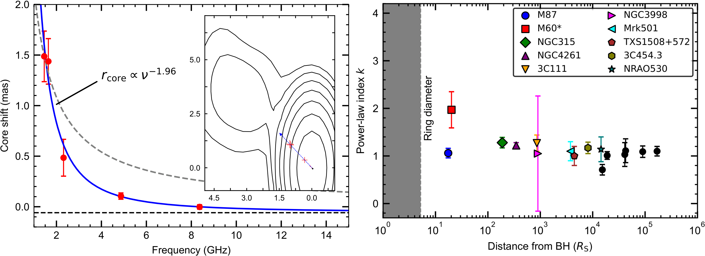
图注：Left: Separation of the radio core from the reference 8.37 GHz core as a function of frequency. The blue solid curve shows the best-fit core-shift relation, while the gray dashed curve represents the conical equipartition relation. The black horizontal dashed line indicates the asymptotic position of the solid curve, located at 57\,$\mu$as upstream from the 8.37 GHz core. The inset illustrates the horizon-scale localization of the central engine through the core-shift analysis, showing the measured core positions at different frequencies (red crosses) and the inferred black-hole position (black point); Right: Power-law index k as a function of the deprojected distance from the black hole (in Schwarzschild radii) for a sample of nearby AGNs. The distances correspond to the highest-frequency core positions in the core shift studies. The data points include 1 $\sigma$ error bar, and the ten sources with the closest core–black hole separations are highlighted using distinct colors and marker styles. For NGC~3998, no viewing angle has been measured or estimated; thus, the distance represents the projected separation between the core and the black hole.
对应解读：对应“建议重点查看的图表”第4、5项，以及“关键图表逐图导读”图3、图4和模型拟合段落中的核心位移关系。
入选理由：这是全文最关键的诊断图，直接给出核心位置随频率变化、最佳拟合核心位移曲线、标准圆锥能量均分参考线、误差条，以及外推得到的黑洞位置约57 μas上游。它同时支撑异常陡峭核心位移、中心发动机定位和与其他AGN比较这三个核心结论，科学价值最高。
来源与置信度：\(arxiv_source\)；high；\(arxiv_source\) / arxiv.tex:figure[3]
Fig05
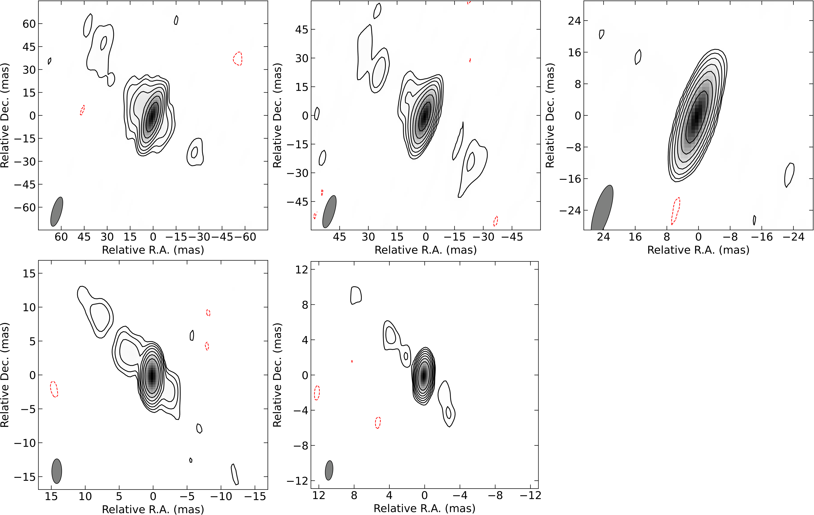
图注：Self-calibrated images of \(\Msixty.\) The top-left and top-right panels correspond to 1.46\,GHz and 1.64\,GHz, respectively; the middle-left and middle-right panels show 2.3\,GHz and 4.87\,GHz; and the bottom panel displays the 8.37\,GHz image. All images were made using natural weighting. The lowest contours are at $\pm$3 times rms noise and further positive contours are drawn at increasing steps of 2. The gray ellipse in the lower left corner of each image is the restoring beam.
对应解读：对应“建议重点查看的图表”第1项，以及“关键图表逐图导读”图1中关于多频VLBI总强度图、合成波束、等值线、核心和双边喷流的解读。
入选理由：该图是M60本源的1.46、1.64、2.3、4.87和8.37 GHz自校准VLBI图像，直接展示多频下的核心和喷流形态，并标出恢复波束与3倍rms起始等值线。它是判断双边喷流是否真实、是否由波束拉伸或低动态范围残差造成的基础图。
来源与置信度：\(arxiv_source\)；high；\(arxiv_source\) / arxiv.tex:figure[5]
Fig02
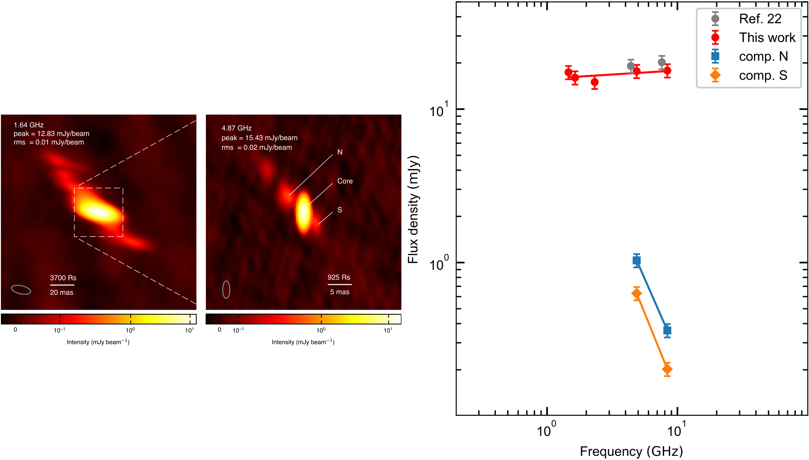
图注：VLBI images of \(\Msixty\) at 1.64 and 4.87 GHz, and the quasi-simultaneous spectra. Left: 1.64 GHz naturally weighted EVN + VLBA combined CLEAN image showing the large scale of the radio jet; Middle: 4.87 GHz VLBA naturally weighted CLEAN image showing the close-up view of the sub-parsec scale jet; Right: Best-fitting power-law spectra ($S_\nu \propto \nu^{\alpha}$) for the total flux density (red) and for components N (blue) and S (orange). The two gray points for the total flux are from VLBI geodetic observations in 2022, with values taken from \(\cite{li2024}.\)
对应解读：对应“建议重点查看的图表”第1、2、3项，以及详细解读中关于多频VLBI观测、双边喷流和陡谱同步辐射的段落。
入选理由：该图结合1.64 GHz大尺度喷流、4.87 GHz亚秒差距尺度喷流近景和总流量及N/S成分的幂律谱拟合，能同时支撑双边结构识别和异常陡谱结论。虽然不是二维谱指数图，但它是候选图中最直接呈现观测谱斜率和分成分谱性质的图。
来源与置信度：\(arxiv_source\)；high；\(arxiv_source\) / arxiv.tex:figure[2]
Fig06
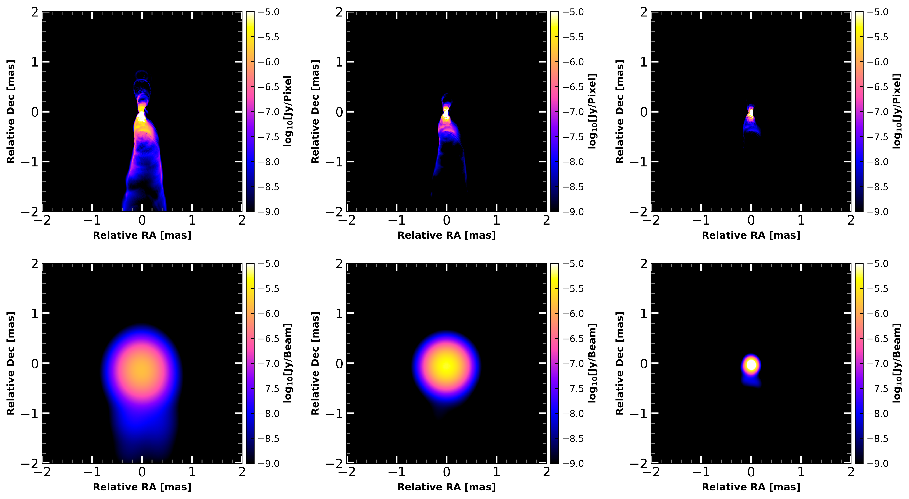
图注：The top row presents the intrinsic simulated jet emission at 1.64 GHz (left), 4.87 GHz (middle), and 15 GHz (right). The bottom row shows the corresponding beam-convolved images at 1.6 GHz (left), 8.37 GHz (middle), and 22 GHz (right). Convolution was performed using circular Gaussian beams with full widths at half maximum (FWHMs) of 0.5 mas, 0.4 mas, and 0.1 mas, associated with 1.64 GHz, 4.87 GHz, and 15 GHz, respectively. The beam smoothing substantially suppresses the intrinsic substructure, resulting in increasingly compact emission morphologies at higher frequencies.
对应解读：对应“建议重点查看的图表”第6项，以及“关键图表逐图导读”图5中关于GRMHD合成图像与观测卷积处理的解读。
入选理由：该图展示GRMHD/辐射转移模拟在多个频率的内禀图像和束卷积后图像，正好用于检查模型是否经过观测分辨率处理，以及卷积后形态是否能接近VLBI观测中的紧凑核心和喷流结构。它比单纯参数图更适合支撑模型—观测形态比较。
来源与置信度：\(arxiv_source\)；high；\(arxiv_source\) / arxiv.tex:figure[6]
Fig08
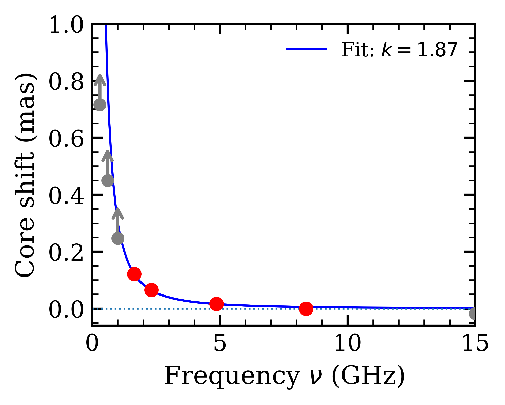
图注：Simulated core shift as a function of observing frequency. The dots show the simulated measurements, and the blue line represents the best-fitting power-law, $r_{\rm core} \propto \nu^{-1.87}$, indicating a steep frequency dependence. Here we only fitted the points (red) from 1.64 to 8.37 GHz. The arrow indicates the lower limit value.
对应解读：对应“建议重点查看的图表”第6项，以及模型拟合段落中关于GRMHD模型是否同时复现核心位移的讨论。
入选理由：该图给出模拟核心位移随观测频率变化，并标出最佳幂律斜率r_core ∝ ν^-1.87。它直接检验模型是否不仅能复现形态，还能复现论文最重要的异常陡峭核心位移诊断，因此应与观测核心位移图Fig03配套阅读。
来源与置信度：\(arxiv_source\)；high；\(arxiv_source\) / arxiv.tex:figure[8]
Fig09
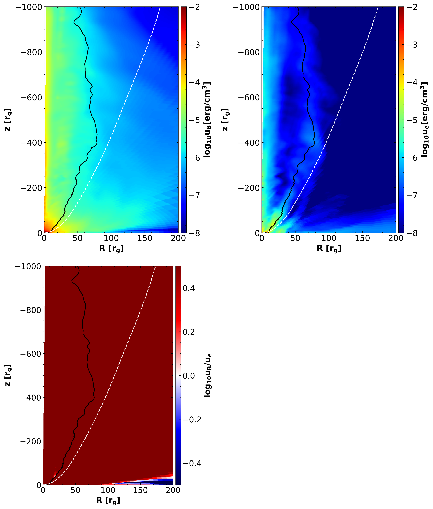
图注：Two-dimensional distribution of the magnetization parameter, shown as $\log_{10}(U_B/U_e)$ in the $R$--$z$ plane. The black curve marks $\sigma=5$, the white dashed line shows the jet boundary. The jet is predominantly magnetically dominated ($U_B/U_e>1$) over most regions, with localized variations along the jet axis.
对应解读：对应“建议重点查看的图表”第7项，以及详细解读和模型拟合段落中关于磁主导、非能量均分喷流发射区的物理解释。
入选理由：该图显示磁化参数log10(\(U_B/U_e\))在R-z平面上的二维分布，并标注喷流边界和σ=5曲线，是支撑“磁主导、非均分喷流区域”解释的关键物理图。它不直接展示观测量，但能连接GRMHD模拟与论文的物理结论。
来源与置信度：\(arxiv_source\)；high；\(arxiv_source\) / arxiv.tex:figure[9]
强相关工作
这篇工作自然要同 M87、\(\mathrm{Sgr\ A^*}\) 和 M31 核心的事件视界尺度研究放在一起看。M87 是强喷流、较高机械功率的低光度活动星系核代表；\(\mathrm{Sgr\ A^*}\) 是极近、极低光度但喷流形态不明确的代表；M60 则介于两者之间，提供了大质量黑洞和低爱丁顿比的组合。检索关键词可用 “M60 NGC 4649 VLBI jet core shift”, “low luminosity AGN jet launching”, “dormant black hole jet”, “GRMHD radiative transfer LLAGN”。
理论上应联系 Blandford–Znajek 机制、Blandford–Königl 圆锥喷流模型和低吸积率辐射低效吸积流模型。本文的张力点在于：若标准能量均分喷流预言 \(r_{\rm core}\propto\nu^{-1}\) 和较平坦核心谱，而 M60 显示更陡的核心位移与陡谱，那么喷流基部的磁化、粒子加速或几何结构必须修改。相反观点或需排除的解释包括外部自由-自由吸收、频率配准误差、非稳态喷流团块，以及有限分辨率导致的核心混叠。
相似工作：
- https://arxiv.org/abs/2606.11900
- https://ui.adsabs.harvard.edu/abs/2019ApJ...875L...1E/abstract
- https://ui.adsabs.harvard.edu/abs/2022ApJ...930L..12E/abstract
基础理论 / 方法工作：
- https://ui.adsabs.harvard.edu/abs/1977MNRAS.179..433B/abstract
- https://ui.adsabs.harvard.edu/abs/1979ApJ...232...34B/abstract
- https://ui.adsabs.harvard.edu/abs/1995PASP..107..803N/abstract
相反观点 / 张力线索：
（未提供）
5. Machine Learning for Event Reconstruction in Imaging Atmospheric Cherenkov Telescopes
- 来源：arXiv / astro-ph.IM
- 链接：https://arxiv.org/abs/2606.11741v1
- 作者：Antonio Pagliaro, Antonino La Barbera
- 评分：novelty 6/10，importance 7/10，relevance 10/10，final 8.75/10
- 推荐理由：IACT事件重建机器学习综述，覆盖伽马/宇宙线分类、能量和方向重建、时序特征、集成学习及深度学习；虽为章节/综述但与VHE伽马仪器方法高度相关。
中文题目：Machine Learning for Event Reconstruction in Imaging Atmospheric Cherenkov Telescopes
做了什么：本文是一篇关于 IACT 事件重建中机器学习方法的综述章节。它从 Cherenkov 图像、图像清洗、Hillas 参数化和立体观测讲起，把核心任务表述为监督学习：用形态学、几何和时间特征区分伽马/强子事件，并回归原初能量与到达方向。文章强调随机森林等传统集成方法仍是强基线，同时讨论梯度提升、stacking 对能量偏差的改善潜力，以及 CNN/GNN 等深度学习方向。最值得关注的证据包括特征重要性图、时间演化示例和时间参数对低能背景抑制的贡献。
为什么重要：本文重要之处在于它把 IACT 事件重建从传统手工参数时代延伸到现代机器学习和深度学习时代，并强调物理可解释特征、时间信息和集成模型之间的互补关系。对于 ASTRI Mini-Array、CTA 等新一代或小型阵列而言，低能阈值附近的背景抑制、能量偏差控制和模拟-真实一致性都是决定科学产出的关键。若本文讨论的方法能被严格验证并纳入响应函数，它们将影响从瞬变源搜索到精细能谱测量的一整套 VHE 伽马射线分析。
理论 / 观测 / 仪器方法价值：本文的价值在于把 IACT 数据分析中分散的物理重建步骤和机器学习术语连接起来：读者可以看到从像素电荷/时间到 Hillas 特征、从特征到分类/回归、从模型输出到仪器响应的完整链条。对做高能伽马天文学的人，它提供了模型比较和诊断清单；对做机器学习的人，它说明了为什么简单准确率不足以评价天文仪器重建。尤其是对时间特征、feature importance 偏差和 ensemble 方法的讨论，有助于设计更稳健的低能事件重建管线。
为什么应该关注：值得关注这篇文章，是因为下一代 VHE 伽马射线观测的瓶颈越来越多地落在重建质量和系统误差控制上，而不只是硬件收光面积。机器学习模型决定哪些事件进入源分析、能量如何分箱、方向误差如何影响形态研究；这些选择会直接改变源显著性、能谱斜率和弱源检出能力。本文提供了一个较完整的阅读入口，帮助读者判断 IACT 机器学习论文中哪些图是真正的性能证据，哪些只是模型内部诊断。
展开详细解读：文章讲解、背景、理论、重点章节、图表与相关工作
文章详细讲解
本文的科学问题可以概括为：IACT 如何把一次相机闪光转化为可用于伽马天文学的物理事件目录。这个转换包含三个子问题：事件是不是伽马、能量是多少、来自天空哪个方向。由于真实伽马信号稀少而宇宙线背景巨大，分类误差会直接影响源检测显著性；能量和方向误差则进入能谱、形态和时间变源分析。因此机器学习在这里不是辅助可视化工具，而是观测链条的一部分。
方法上，本文从标准管线讲起：图像清洗去噪，Hillas 参数化提取形态，立体观测提供几何约束，然后把重建写成监督学习任务。输入特征可分为形态学参数、立体几何参数、时间参数以及可能的像素级数据；输出则对应分类分数、能量回归和方向回归。随机森林是历史上常用基线，因为它能处理非线性、特征尺度不一和变量交互；梯度提升和 stacking 则通过逐步修正残差或组合多个基学习器，可能改善能量偏差和分类边界。
本文最值得细读的结果线索是时间维度。Fig06 用颜色编码像素触发时间，展示伽马事件和强子事件在时间演化上的差异：在示例中，伽马诱发事件的时间变化更平滑/更慢，而强子事件更不规则。Fig07 进一步给出随机森林中特征重要性，比较形态学、立体和时间参数。读者应把这两张图连起来看：Fig06 给物理直觉，Fig07 检验这种直觉是否被分类器实际使用。
另一条结果线索是特征重要性的诊断。Fig04 针对 gamma/hadron separation 比较 mean decrease in impurity 与 permutation importance；Fig05 对能量重建做同样比较。这非常重要，因为树模型的 impurity importance 往往偏好取值连续、分裂机会多或与其他变量相关的特征，而 permutation importance 更接近“打乱该变量后性能下降多少”。若两种方法给出不同排序，不能简单说某一物理量“不重要”，而应检查特征相关性、训练样本权重和性能指标。
局限性方面，摘要没有给出明确的独立数据集规模、事件数、显著性提升数值或完整系统误差预算，因此不能把本文解读为一个闭合的性能发布。它更适合作为 IACT 机器学习重建的阅读入口和方法框架。下一步若要把综述结论用于具体分析，需要回到被引用的 ASTRI、MAGIC、H.E.S.S.、VERITAS、CTA 或其他实验论文，核查训练/测试划分、模拟条件、真实数据验证、能量分箱性能曲线和最终天体源分析中的响应传播。
关键结果是怎么做出来的
本文的主结果不是单一天体源的探测，而是对 IACT 事件重建中机器学习方法链的梳理，并用若干已有/相关研究图例说明哪些特征和模型改进真正有诊断意义。因此阅读时不应寻找“新发现了多少个伽马事件”这一类结论；更应关注训练样本如何由蒙特卡洛伽马和背景事件构成、特征如何从清洗图像中提取、性能指标如何从机器学习输出传播到天文分析量。
样本与数据方面，摘要和图注表明文中使用 ASTRI Mini-Array 模拟 Cherenkov 图像作为重要示例，并重印了 Pagliaro:2023 与 LaParola:2025 的结果图。当前给出的材料没有列出本文自己的事件总数、训练/验证/测试划分或每个能量段的样本量，所以在原文中应重点核查这些数字是否出现在对应章节或被引用论文中。如果没有，应该把这些图理解为方法说明和文献结果复述，而不是本章独立的统计测量。
分类结果的证据链主要由 Fig02、Fig04、Fig06、Fig07 组成。Fig02 说明形态差异为何可用于 gamma/hadron separation，但也展示了有些强子事件会伪装成伽马。Fig04 进一步进入模型诊断，比较两种特征重要性定义；这比单纯报告准确率更有用，因为它能揭示模型在用哪些观测量做判别。Fig06 与 Fig07 则支持“时间维度可提供额外背景抑制信息”的论点，尤其应检查正文是否明确指出这种增益发生在低能段。
能量重建结果的证据链主要对应 Fig05 以及摘要中关于高级 ensemble 方法缓解系统性能量偏差的说法。这里最关键的量不是平均误差，而是能量偏差 \(b(E)=\langle(\hat E-E)/E\rangle\) 和能量分辨率随能量的变化。如果梯度提升或 stacking 相对随机森林有改进，应在原文中寻找模型比较表、分能段残差图或迁移矩阵；没有这些诊断时，不能仅凭“更先进模型”推断物理性能提升。
显著性和置信度方面，综述摘要没有给出 Li--Ma 显著性、假设检验 p 值或置信区间。因此应把性能评价限定在方法指标层面：分类可能用 ROC/AUC、背景拒绝率、伽马效率和 quality factor；回归可能用 bias、resolution、mean squared error 或 median absolute deviation；方向重建可能用 68% containment radius。若原文声称某方法“优于”基线，必须看它是在何种指标、何种能量范围、何种事件选择下成立。
系统误差和稳健性是本文结论能否落地的关键。IACT 模拟依赖大气模型、夜天光、镜面反射率、相机增益、触发效率和宇宙线成分；机器学习模型还依赖训练能谱、类别权重和特征清洗策略。读者应检查文中是否讨论模拟到真实数据的 domain shift、交叉验证、独立测试集、不同天顶角/偏轴角分箱、以及特征重要性在重采样下是否稳定。若这些内容缺失，应把本文视为方法综述而不是完整性能认证。
背景知识
成像大气切伦科夫望远镜（IACT）的核心思想，是把地球大气当作一个巨大的量能器：高能伽马光子或宇宙线强子进入大气后产生级联簇射，簇射中的相对论带电粒子发出纳秒量级的切伦科夫闪光，地面望远镜记录到的是一个二维相机图像，而不是原初粒子本身。本文是一篇方法综述/章节，讨论机器学习如何从这些图像中重建事件类型、能量和到达方向，覆盖从传统 Hillas 参数到随机森林、梯度提升、stacking 以及深度学习的演进。
IACT 的科学背景是甚高能伽马射线天文学。天体源发出的伽马射线携带粒子加速、相对论喷流、脉冲星风云、超新星遗迹、银河中心和暗物质搜索等信息；但在地面探测时，真实伽马事件远少于宇宙线背景事件。也就是说，IACT 数据分析的第一性困难并不是“有没有图像”，而是“怎样在大量形似伽马的强子事件中保留足够多的伽马，同时把背景压低到可做天体物理的水平”。这正是 gamma/hadron separation 成为机器学习核心任务的原因。
传统 IACT 重建依赖图像清洗、二阶矩形态参数化和多望远镜几何交会。Hillas 参数把相机中的光斑近似为椭圆，用 width、length、size、orientation、centroid 等少数变量概括簇射图像；立体观测再利用多个相机的主轴交会来估计到达方向，并用光量和撞击参数估计能量。机器学习并不是替代物理图像，而是在这些物理启发特征和模拟标注之间学习非线性映射。
本文特别强调两个容易被低估的方向。第一是时间维度：每个像素不仅有电荷/光子数，还可能有触发时间、时间梯度或时间扩展；这些信息对低能事件尤其有价值，因为低能图像更暗、更短，单靠形态学区分伽马和强子会变得困难。第二是集成学习：随机森林长期是 IACT 分析的强基线，但梯度提升和 stacking 可以在分类边界、能量偏差校正、不同特征族组合方面带来改进。
常见误区有三类。其一，把本文理解成单一望远镜或单一数据集的新发现；从摘要和图注看，它更像机器学习重建方法的综述，并引用 ASTRI Mini-Array 相关模拟和既有研究作为示例。其二，把特征重要性图误读为因果解释；impurity importance 与 permutation importance 对相关特征、尺度和样本分布都敏感，只能作为诊断而非物理定律。其三，把更复杂模型自动等同于更好科学结果；IACT 的关键还包括模拟-真实域差异、有效面积、能量偏差、角分辨率、背景系统误差以及源显著性传播。
基础理论 / 方法脉络
IACT 事件重建从一个简单物理图像开始：原初伽马或强子在大气中触发电磁或强子级联，簇射粒子以超过空气中光速相速度的速度传播，发出切伦科夫光。伽马诱发的电磁簇射通常更紧凑、轴对称、与源方向关联更强；强子簇射则可能包含亚簇射、μ 子、横向扩散和更不规则的时间/空间结构。不过强子背景中也存在“伽马状”事件，所以分类问题不是简单阈值筛选，而是统计判别。
相机图像的低层观测量通常是像素电荷 \(q_i\) 与像素时间 \(t_i\)，其中 \(i\) 标记相机像素。图像清洗会用相邻像素和电荷阈值剔除夜天光噪声，然后计算 Hillas 矩：总光量 size、质心、长短轴、方位角、泄漏量等。这些变量把高维相机图像投影成可解释的低维特征，但也会丢失像素级纹理和时间结构，因此本文讨论的时间特征和深度学习方法可视为对传统压缩的补充。
立体观测引入多台望远镜的几何约束。每台望远镜的椭圆长轴大致指向源方向，多台相机坐标系中的主轴交会给出到达方向估计；不同望远镜看到的图像大小、形状和位置共同约束落点位置、最大簇射深度和能量。机器学习模型可以把这些形态学特征、立体特征和时间特征一起输入，用监督学习从蒙特卡洛标签中学习 \(P(\gamma|\mathbf{x})\)、\(\hat E(\mathbf{x})\) 和 \(\hat{\boldsymbol{\theta}}(\mathbf{x})\)。
在统计层面，分类任务通常输出一个 gamma-like score 或 hadronness，用 ROC 曲线、背景拒绝率、质量因子、有效面积和最终源显著性评价。回归任务则输出能量和方向，评价量包括能量偏差 \((\hat E-E)/E\)、能量分辨率、角分辨率、point-spread function 和随能量/偏轴角/天顶角变化的响应。本文提到的“梯度提升、stacking 缓解系统性能量偏差”应重点理解为响应函数层面的改进，而不仅是测试集均方误差降低。
主要退化来自观测几何和模拟系统误差。低能事件接近触发阈值，图像弱且受清洗阈值影响大；高能事件可能有图像截断和相机边缘泄漏；偏轴事件、不同天顶角、夜天光水平、大气透明度和镜面反射率都会改变特征分布。机器学习模型若只在理想模拟上验证，可能在真实数据上产生 domain shift，因此可靠阅读本文时要把“模型准确率”与“仪器响应、残差和系统误差传播”联系起来。
公式与推导
IACT 的观测链可以从切伦科夫辐射阈值写起。带电粒子在折射率为 \(n\) 的介质中发光的条件为
其中 \(\beta=v/c\)。这个式子说明只有足够相对论性的簇射粒子才贡献切伦科夫光；大气折射率随高度变化，因此发光高度和光池结构也会影响相机图像。
单位路径、单位波长的切伦科夫光子产额近似满足 Frank--Tamm 关系
其中 \(\alpha\) 是精细结构常数，\(z\) 是粒子电荷数。对 IACT 来说，这个式子解释了为什么相机接收到的总电荷与簇射能量相关，但还要经过大气吸收、镜面反射、光电探测效率和触发选择的折叠。
相机像素的基本观测可记为电荷和时间集合
其中 \(q_i\) 是第 \(i\) 个像素的光量，\(t_i\) 是触发或到达时间，\(\mathbf{r}_i=(x_i,y_i)\) 是相机坐标。图像清洗后保留像素集合 \(S\)，总光量为
在一阶近似下，\(Q\) 与原初能量正相关，但比例因子依赖撞击参数、天顶角、簇射最大深度和仪器响应。
Hillas 参数来自加权矩。质心为
二阶矩矩阵为
)
该矩阵的两个特征值 \(\lambda_1\ge \lambda_2\) 给出
从而把图像压缩为形态特征。这个推导适用于图像可近似为单一椭圆簇射时；对强子多子结构或截断图像会失真。
时间特征可用加权平均时间和沿主轴的时间梯度表示。若 \(u_i\) 是像素相对质心在主轴方向的投影，则可拟合
其中 \(g_t\) 是时间梯度，\(\epsilon_i\) 是残差。本文强调的时间维度创新，本质上就是把 \(t_0,g_t,{\rm RMS}(t)\) 或类似量加入特征向量 \(\mathbf{x}\)，让分类器利用簇射发展速度和不规则性。
监督学习分类可写为
其中 \(\mathbf{x}\) 包含形态、立体和时间特征，\(y\) 是伽马/强子标签。常用交叉熵损失为
权重 \(w_k\) 可用于处理能谱再加权或类别不平衡。分类阈值不应只由准确率确定，而应结合伽马效率和背景率。
能量回归可写为对数能量预测
并用平方损失或稳健损失训练
性能诊断通常看能量偏差
和分辨率，例如 \(68\%\) 包含区间宽度。摘要中提到 ensemble 方法可缓解系统性能量偏差，正对应检查 \(b(E)\) 是否接近零且随能量平滑。
最终源检测常用 Li--Ma 显著性形式之一：
其中 \(N_{\rm on}\) 和 \(N_{\rm off}\) 是源区和背景控制区计数，\(\alpha\) 是曝光或接受度归一化。分类、能量和方向重建的改进，最终应通过有效面积、背景率和点扩散函数传播到这个显著性或似然框架中，而不仅停留在机器学习测试集指标。
模型拟合 / 应用方法
本文涉及的“拟合”主要不是解析模型拟合，而是监督学习模型训练与仪器响应诊断。分类模型拟合的目标量是事件标签 \(y\in\{\gamma,{\rm hadron}\}\)，输出是 gamma-like score 或 hadronness；回归模型拟合的目标量是 \(E\)、到达方向或其对数/角坐标表示。输入特征包括 Hillas 形态、立体几何、图像强度、时间参数以及可能的观测条件变量。
似然或损失函数层面，树模型通常不显式写出天文似然，而通过 Gini/entropy 分裂、平方误差或 boosting 残差最小化进行训练。若把它翻译成统计语言，分类近似最大化条件概率 \(P(y|\mathbf{x})\)，回归近似估计 \(E[z|\mathbf{x}]\) 或中位数/分位数。对研究生读者，重点不是算法名，而是训练权重如何设置：训练样本是否按真实源谱再加权、背景是否按宇宙线成分混合、不同能量和天顶角是否均衡。
残差诊断必须分箱进行。能量回归要看 \((\hat E-E)/E\) 随真能量、重建能量、天顶角、偏轴角、图像 size、impact parameter 和相机边缘距离的变化；方向回归要看角残差的 68% containment 和长尾；分类要看 ROC、precision-recall、伽马效率固定时的背景拒绝率，以及 score 分布在伽马/强子测试集上的重叠。若只给整体 AUC 或均方误差，会掩盖低能阈值区和高能截断区的失败。
退化关系主要来自物理量之间的相关。图像 size 同时受能量、距离、天顶角和大气透明度影响；width/length 同时受粒子类型、簇射发展深度、偏轴成像和清洗阈值影响；时间梯度可能与几何投影、撞击参数和相机触发逻辑相关。因此 Fig04、Fig05 中两种特征重要性方法的差异应被视为退化诊断：某变量 permutation 后性能不降，可能是因为另一个强相关变量替代了它。
系统误差方面，最需要警惕模拟与真实观测不一致。大气气溶胶、云、镜面老化、相机增益漂移、夜天光和触发效率都会改变输入特征分布；如果模型只在理想 Monte Carlo 上训练，会在真实数据上产生能量偏差或错误背景率。实际分析应使用 muon calibration、真实 off 数据、domain adaptation 或重新加权来控制这些偏差，并通过已知标准烛光源或控制区验证。
模型比较应遵循同一数据划分和同一评价指标。随机森林、梯度提升和 stacking 的比较必须保证训练/测试独立，超参数调优不泄漏测试集，能量分布和类别比例一致。若 stacking 使用多个基模型，还应检查二级学习器是否在独立验证集上训练。最终优劣应以仪器响应和天体源显著性改善为准，而不是单一机器学习分数。
重点章节 / 结果段落怎么读
-
IACT 技术介绍部分：先读清楚大气簇射、切伦科夫光、相机成像和立体观测的物理链条。重点标出哪些量是直接观测的像素电荷/时间，哪些量是重建得到的方向、能量和粒子类型。
-
标准重建管线部分：重点读图像清洗、Hillas 参数和立体几何。建议把 width、length、size、orientation、impact parameter、leakage 等变量列成表，并记录它们分别对分类、能量还是方向最敏感。
-
监督学习表述部分：注意作者如何把问题拆成分类和回归。分类输出应对应 gamma/hadron score，回归输出对应能量和方向；读者要检查训练标签来自模拟还是真实标注，以及是否讨论类别不平衡和能谱再加权。
-
特征重要性与模型比较部分：重点看 Fig04、Fig05 和相关文字。不要只记住“哪个特征第一”，而要比较 impurity importance 与 permutation importance 的差异，并思考相关特征和模型偏置如何影响解释。
-
时间特征部分：重点看 Fig06、Fig07。阅读时把像素时间演化的物理图像与随机森林重要性联系起来，核查作者是否给出加入时间特征前后的定量性能变化，尤其是在低能段背景抑制上的效果。
-
展望深度学习部分：把 CNN 和 GNN 看作从手工特征向像素级/图结构学习的过渡。需要特别关注作者是否讨论可解释性、模拟-真实差异、计算成本和不确定度校准，而不是只把深度学习当作自动提升性能的黑箱。
建议重点查看的图表
-
Cherenkov 图像形态示例：重点看不同事件类型在相机平面上的光斑形状、大小、边缘泄漏和是否存在子结构。Fig02 属于这一类，用于建立 gamma 与 hadron 形态差异的直觉，但不能把示例图当作统计结论。
-
图像清洗与 Hillas 参数示意：若正文中有相关图表，应看清电荷阈值、相邻像素要求、质心、length、width、orientation 的定义。关键问题是清洗阈值如何影响低能事件，以及边缘截断如何污染形态参数。
-
gamma/hadron 分类特征重要性：Fig04 比较 impurity decrease 与 permutation importance。应检查两种重要性排序是否一致、最重要变量属于形态学还是立体几何、是否存在高度相关特征导致重要性被分摊或替换。
-
能量重建特征重要性：Fig05 对回归任务给出相同诊断。重点看总光量 size、撞击参数、天顶角、立体变量和可能的深度相关变量是否主导能量估计；同时警惕只在训练分布内有效的经验相关。
-
时间演化图像：Fig06 用像素触发时间颜色展示伽马与强子事件差别。应看颜色条单位、未触发像素的编码、时间梯度是否沿椭圆长轴连续，以及示例是否可能受能量、撞击参数或视场位置影响。
-
时间特征重要性：Fig07 把形态/立体参数与时间参数放在同一随机森林重要性框架下。应看时间变量是否在低能段更有贡献、是否只改善背景拒绝而不损害伽马效率，以及是否有分能段/分观测条件的交叉验证。
-
性能曲线与残差图：若论文包含 ROC、AUC、quality factor、能量偏差、能量分辨率、角分辨率或迁移矩阵，应优先阅读。对实际科学分析而言，这些曲线比单一准确率更有用，因为它们直接决定灵敏度和谱重建偏差。
关键图表逐图导读
图 1 / 方法流程类图：若正文前部有 IACT 管线示意，应按“原初粒子—大气簇射—切伦科夫光—相机图像—清洗—参数化—机器学习输出”的顺序读。坐标轴可能不是重点，重点是信息在哪里丢失：像素波形被压缩成电荷和时间，图像被压缩成 Hillas 和立体特征。陷阱是把流程图看成确定性反演；实际每一步都有阈值、噪声和响应函数。
图 2 / Fig02 形态示例：该图展示 ASTRI Mini-Array 望远镜模拟看到的 Cherenkov 图像，上方为两个伽马事件，下方为强子事件，其中一个强子事件与伽马相似。读图时应看光斑是否紧凑、是否呈单椭圆、是否有多团块结构、是否靠近相机边界。这里没有模型线或残差，证据类型是定性示例；陷阱是过度概括单个事件，因为强子背景中本来就有伽马状子样本。
图 3 / Fig04 分类特征重要性：横向应理解为不同特征的重要性排序，左右面板分别是 mean decrease in impurity 和 permutation method。若某些特征在左图重要而右图不重要，可能说明它们与其他变量相关或树分裂偏置，而不是该物理量完全无用。读者应把这些排序与 gamma/hadron separation 的实际 ROC 或质量因子联系起来，否则重要性图只能说明模型内部行为。
图 4 / Fig05 能量重建特征重要性：该图对应回归而非分类。应重点检查能量相关变量，如图像总光量、撞击参数或立体几何变量是否排在前列；若时间变量或形态变量也重要，应考虑它们是否在校正簇射发展阶段或几何投影。残差陷阱是：特征重要性高不代表能量无偏，必须进一步看 \((\hat E-E)/E\) 随真能量、偏轴角和天顶角的趋势。
图 5 / Fig06 时间演化图像：颜色条给出像素触发时间，黑色代表未触发像素。左侧伽马事件在示例中演化更慢，右侧强子事件更不规则。读图时要看时间梯度是否沿簇射主轴连续、是否有局部提前/滞后子结构、是否与形态不规则性共同出现。陷阱是颜色差异可能受能量、撞击点和视场位置影响，因此需要 Fig07 或分箱性能曲线支持。
图 6 / Fig07 时间参数重要性：该图把形态学、立体和选定时间参数在随机森林中的重要性放在一起，蓝色与浅蓝色区分不同特征族。应重点看时间参数是否进入前列、是否补充而非替代形态学变量，以及其贡献是否集中在低能背景抑制。没有残差面板时，读者应主动寻找正文是否给出加入时间特征前后的 ROC、背景率或有效面积变化。
论文原图 / 可嵌入图片
Fig07
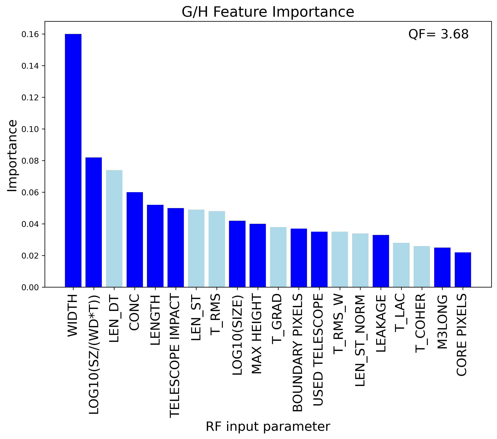
图注：Feature importance of morphological, stereo, and~selected temporal parameters using random~forest (blue for morphological and stereo parameters, light blue for temporal parameters). Reprinted from \(\cite{LaParola:2025}\) licensed under CC BY 4.0.
对应解读：对应论文关于利用时间维度特征改进事件重建、尤其是低能段背景抑制的重点讨论。
入选理由：该图直接给出形态学、立体观测与时间参数在随机森林中的特征重要性，最能支撑日报中要求检查‘诊断量、模型线、系统误差/性能来源’的部分；相比单纯示意图，它更接近模型可解释性和特征贡献分析。
来源与置信度：\(arxiv_source\)；high；\(arxiv_source\) / ml1.tex:figure[7]
Fig04
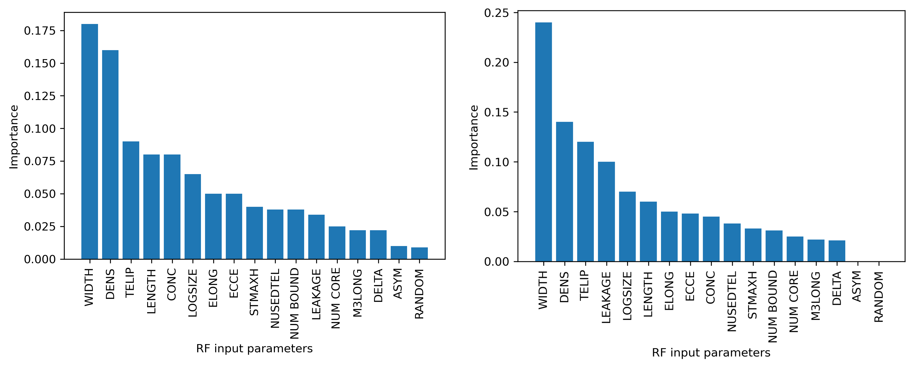
图注：Feature importances for gamma/hadron separation computed with two methods:\(\linebreak\) (\textbf{Left}) Mean decrease in impurity method. (\textbf{Right}) Permutation~method. Reprinted from \(\cite{Pagliaro:2023}\) licensed under CC BY 4.0.
对应解读：对应粒子分类与 gamma/hadron separation 的模型诊断段落。
入选理由：该图比较了两种特征重要性评估方法，即 impurity decrease 与 permutation importance，可用于判断哪些输入量主导 gamma/hadron 分类，是理解 IACT 机器学习背景抑制任务的关键图。
来源与置信度：\(arxiv_source\)；high；\(arxiv_source\) / ml1.tex:figure[4]
Fig05
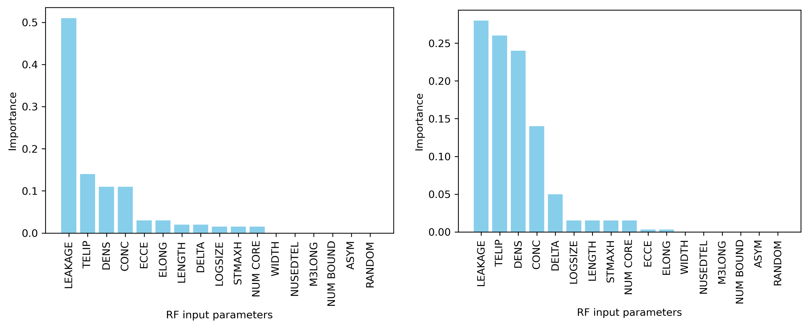
图注：Feature importances for energy reconstruction computed with two methods: (\textbf{Left}) Mean decrease in impurity method. (\textbf{Right}) Permutation~method. Reprinted from \(\cite{Pagliaro:2023}\) licensed under CC BY 4.0.
对应解读：对应能量重建回归任务及机器学习特征诊断部分。
入选理由：该图展示能量重建中特征重要性的排序，并同时给出两种重要性估计方法；它能帮助读者理解能量回归依赖哪些观测量，和 Fig04 共同覆盖分类与回归两类核心任务。
来源与置信度：\(arxiv_source\)；high；\(arxiv_source\) / ml1.tex:figure[5]
Fig06
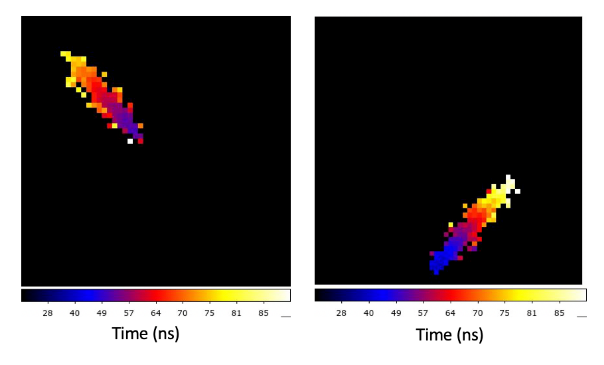
图注：Simulated Cherenkov shower images as observed by an ASTRI Mini-Array telescope, illustrating the differences in time evolution between different types of events. The images cover the entire ASTRI field of view (each side spanning approximately 10 deg). The color scale indicates the time when the pixel is triggered by the incoming Cherenkov photons, {\(\bf\) with the black indicating that the pixel has not been triggered}. The time (in ns) increases from blue to white. In this example, the gamma-initiated event (\textbf{Left}) evolves more slowly than the hadron-initiated event (\textbf{Right}). Reprinted from \(\cite{LaParola:2025}\) licensed under CC BY 4.0.
对应解读：对应论文关于 Cherenkov 图像时间演化、时间特征可用于区分 gamma 与 hadron 事件的讨论。
入选理由：该图以像素触发时间颜色编码展示 gamma 与 hadron 事件的时间结构差异，是理解论文‘时间维度特征’创新点的直观证据，能补充 Fig07 中时间参数重要性的定量解释。
来源与置信度：\(arxiv_source\)；high；\(arxiv_source\) / ml1.tex:figure[6]
Fig02
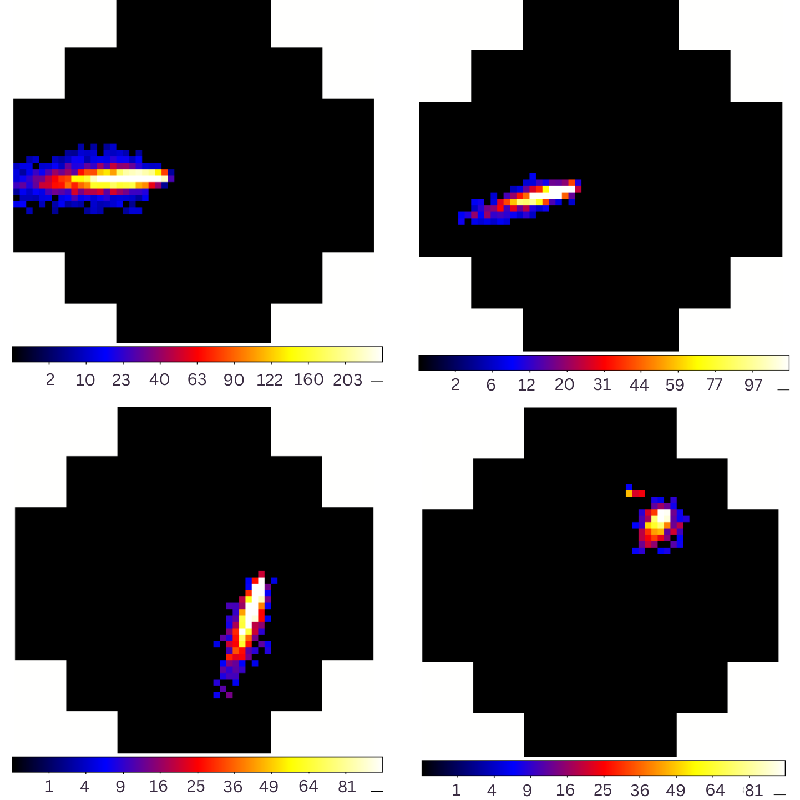
图注：Cherenkov shower images simulated as observed by the ASTRI MiniArray telescopes, illustrating the morphological differences between different types of events (the contour matches that of the ASTRI telescope camera). The~images include two gamma ray events (\textbf{Top}), a~hadronic event with similarities to gammas (\textbf{Bottom Right}), and~a distinct hadronic event (\textbf{Bottom Left}). These images showcase the often faint but discernible variations in the Cherenkov shower~morphology. Reprinted from \(\cite{Pagliaro:2023}\) licensed under CC BY 4.0.
对应解读：对应 IACT 事件图像形态、gamma/hadron 形态差异以及图像清洗/Hillas 参数化背景介绍。
入选理由：该图展示不同类型 Cherenkov shower 图像的形态差异，是理解后续分类、特征提取和机器学习重建任务的基础；虽然不是性能或拟合图，但对读者建立物理图像非常有帮助。
来源与置信度：\(arxiv_source\)；high；\(arxiv_source\) / ml1.tex:figure[2]
强相关工作
检索相关工作时可分三条线。第一条是 IACT 标准重建基础：Hillas 参数化、立体重建、gamma/hadron separation、Li--Ma 显著性和仪器响应函数。这一线索应从经典 IACT 方法论文和 H.E.S.S.、MAGIC、VERITAS、CTA 的分析管线文献入手，关键词包括“Hillas parameters”、“stereoscopic reconstruction”、“IACT gamma hadron separation”、“instrument response functions”。
第二条是机器学习在 IACT 中的应用演进。随机森林是 MAGIC 等实验中长期使用的重要方法，随后有 boosted decision trees、gradient boosting、XGBoost/LightGBM 类方法、stacking 和概率校准。本文图注中反复出现 Pagliaro:2023 与 LaParola:2025，可作为追踪 ASTRI Mini-Array 特征重要性、能量重建和时间参数研究的入口；应查看这些原始文献中的样本规模、性能曲线和系统误差讨论。
第三条是深度学习和端到端重建。CNN 直接处理相机图像，GNN 或几何深度学习适合处理不规则像素阵列和多望远镜事件图结构；相关关键词包括“deep learning IACT reconstruction”、“CNN Cherenkov telescope images”、“graph neural network CTA event reconstruction”。这一线的张力在于：深度模型可能提升性能，但更依赖大规模模拟、更难解释，也更容易受到模拟-真实域差异影响。
还应检索反向或审慎观点：特征重要性是否稳定、permutation importance 在相关特征下如何解释、机器学习性能是否能在真实 Crab 或已知源观测中复现、以及能量偏差是否在谱拟合中产生系统误差。真正有价值的对比不是“传统方法 vs 深度学习”的口号，而是同一仪器、同一响应和同一源分析下的闭环验证。
相似工作：
（未提供）
基础理论 / 方法工作：
（未提供）
相反观点 / 张力线索：
（未提供）
6. A synchro-curvature treatment of gamma-ray luminosity trends in pulsars
- 来源：arXiv / astro-ph.HE
- 链接：https://arxiv.org/abs/2606.11234v1
- 作者：A. Pathania, K. K. Singh, K. K. Yadav
- 评分：novelty 6/10，importance 7/10，relevance 10/10，final 8.75/10
- 推荐理由：直接研究Fermi-LAT γ射线脉冲星群体的亮度-自转能损关系，并用同步-曲率辐射解释截止能量和粒子参数；伽马射线天文相关性最高。
中文题目：A synchro-curvature treatment of gamma-ray luminosity trends in pulsars
做了什么：这篇论文试图用同步-曲率辐射框架解释 Fermi 伽马射线脉冲星群体中 \(L_\gamma\) 随自转能损率 \(\dot E\) 的经验标度关系。作者把高能辐射置于接近光柱的磁层区域，令平行电场 \(E_{\parallel}=\eta B_{LC}\)，并通过观测谱截止能量与辐射反作用平衡同时反演发射粒子的平衡洛伦兹因子 \(\gamma\) 和俯仰角 \(\alpha\)。核心证据链由观测 \(L_\gamma-\dot E\) 基准图、\(\gamma-\alpha\) 解分布、同步-曲率参数 \(\zeta\) 诊断、模型 \(L_\gamma-\dot E\) 拟合以及 \(L_\gamma^{Fermi}/L_\gamma\) 残差分布组成。论文的价值在于把经验光度幂律与单粒子辐射机制连接起来，但其结论应结合 \(\eta\) 参数化、磁层几何、距离和束射系统误差谨慎解读。
为什么重要：这篇论文的重要性在于它把脉冲星伽马射线光度经验律提升为一个可检验的辐射机制问题。\(L_\gamma\propto\dot E^s\) 的斜率若能从同步-曲率辐射和辐射反作用平衡中自然出现，就能为高能发射区的位置、粒子加速效率和辐射损失通道提供约束。
它还重要在于强调模型诊断而非单一拟合。三种 \(\eta\) 下的参数反演、\(\zeta\) 机制判据、模型光度幂律和观测/模型光度比值共同决定结论强弱。对研究伽马射线脉冲星、磁层加速、辐射反作用极限和 Fermi 群体统计的读者来说，这篇文章提供了一个紧凑但可进一步扩展的物理建模框架。
理论 / 观测 / 仪器方法价值：本文的理论价值在于把脉冲星高能辐射从“纯曲率”或“纯同步”的二分法推进到连续的同步-曲率描述，并用 \(\zeta\)、\(\gamma\)、\(\alpha\) 等物理量诊断辐射损失来源。它为解释 \(L_\gamma\propto\dot E^s\) 提供了一条从粒子能量平衡到群体光度趋势的可计算路径。
观测价值在于充分利用 Fermi-LAT 脉冲星的谱截止能量和伽马射线光度，而不只拟合光度标度。方法价值在于把观测 \(E_c\) 作为反演约束，与辐射反作用平衡联立求解粒子参数，并用图 6、图 7 这类残差和目标函数诊断模型是否稳定。对后续工作来说，它可作为比较不同磁层电场参数化、不同曲率半径假设和不同束射修正方案的基线模型。
为什么应该关注：值得关注的原因是，Fermi 已经把伽马射线脉冲星研究推入群体统计阶段，仅仅说“\(L_\gamma\) 与 \(\dot E\) 相关”已经不够。本文尝试回答更物理的问题：这个相关是否能由接近光柱区域的带电粒子在同步-曲率辐射和辐射反作用平衡下产生。
如果模型成立，它能把观测谱截止能量、粒子洛伦兹因子、俯仰角、磁层电场和伽马射线光度放在同一框架中解释。即使读者不同意其简化假设，图 2、图 4、图 6 和图 7 也提供了很好的检查清单：任何替代模型都应说明自己如何处理 \(\gamma-\alpha\) 退化、辐射机制混合、绝对光度残差和数值解稳定性。
展开详细解读：文章讲解、背景、理论、重点章节、图表与相关工作
文章详细讲解
本文要回答的科学问题可以概括为：Fermi 脉冲星群体中观测到的 \(L_\gamma\propto \dot E^s\) 是否能由一个带有物理约束的同步-曲率辐射框架自然解释，而不是只用经验幂律拟合？作者把高能发射位置设在远离星表、接近光柱的磁层区域，采用光柱磁场 \(B_{LC}\)、平行电场参数 \(\eta\)、观测截止能量 \(E_c\) 和自转能损率 \(\dot E\) 来连接单粒子辐射与群体光度关系。
方法链条是连续的。首先，图 1 给出样本脉冲星在 0.1--100 GeV 中的观测 \(L_\gamma\) 与 \(\dot E\) 并拟合幂律，这是模型必须解释的基准关系。其次，对每个源，作者令理论同步-曲率截止能量等于观测 \(E_c\)，同时要求加速功率与辐射损失功率平衡。这样得到的未知量是粒子平衡洛伦兹因子 \(\gamma\) 和俯仰角 \(\alpha\)，并对三组 \(\eta\) 重复计算，以测试加速电场假设对结果的影响。
关键结果不是单一数字，而是一组诊断图的相互支撑。图 2 显示 \(\gamma\) 与 \(\alpha\) 的解分布，说明不同 \(\eta\) 会把粒子推向不同的能量和俯仰角区域；图 4 显示同步-曲率参数 \(\zeta\) 与 \(E_c,\dot E,\gamma,\alpha\) 的关系，并用 \(\zeta=10\) 与 \(\zeta=0.006\) 作为参考界线，帮助判断辐射损失是同步主导、曲率主导还是混合状态；图 5 则把模型估计的 \(L_\gamma\) 与 \(\dot E\) 比较，并对散点拟合幂律。
论文最需要仔细核查的局限也正来自这些简化。\(E_{\parallel}=\eta B_{LC}\) 是简洁但高度参数化的设定，真实磁层中的电场可能随磁纬、相位、半径和电流闭合结构变化。\(B_{LC}\) 和 \(\rho_c\) 的估计若采用简单偶极或几何近似，可能无法覆盖外磁层和电流片的真实曲率结构。观测 \(L_\gamma\) 还依赖距离、束射因子和能谱模型，若这些系统误差没有进入拟合权重，幂律指数和模型残差的统计解释会偏乐观。
下一步阅读或复现时，应把论文当成一个“群体物理反演”而非单纯趋势展示来检查。建议逐源重算 \(C(\gamma,\alpha)\) 目标函数，确认图 7 中红叉所示最小值是否唯一且足够尖锐；比较不同 \(\eta\) 下图 6 的 \(L_\gamma^{Fermi}/L_\gamma\) 是否以 1 为中心且无明显 \(\dot E\) 相关残差；进一步检查是否有少数高 \(\dot E\) 或低 \(\dot E\) 源主导斜率。若论文没有完整列出这些统计细节，应在读者笔记中标为需要人工复核的关键点。
关键结果是怎么做出来的
第一层结果是观测样本本身的经验关系。论文使用选定的 Fermi 伽马射线脉冲星，在 0.1--100 GeV 能段计算或收集 \(L_\gamma^{Fermi}\)，并与每个源的自转能损率 \(\dot E\) 比较。图 1 的黑色幂律线对应摘要中提到的 \(L_\gamma\propto\dot E^s\)、\(s\sim0.68\) 这一群体趋势。阅读时应在正文或表格中核查实际样本数、剔除标准、是否只包含有可靠截止能量的源，以及是否给出斜率的不确定度；这些细节决定该经验斜率能否作为模型检验的严格目标。
第二层结果是由观测截止能量反推粒子参数。作者不是任意选取 \(\gamma\) 和 \(\alpha\)，而是同时满足同步-曲率理论截止能量与观测 \(E_c\) 一致、以及辐射反作用平衡两个条件。对 \(\eta=0.1,0.3,1.0\) 等平行电场强度分别求解，得到图 2 中的 \(\gamma-\alpha\) 分布。该图支撑了一个重要论点：电场参数会显著改变粒子的平衡能量和俯仰角，因此不能在群体模型中把粒子分布当作与磁层加速无关的自由背景。
第三层结果是辐射机制的分类或连续诊断。图 4 的同步-曲率参数 \(\zeta\) 把单源解映射到机制空间，并与 \(E_c,\dot E,\gamma,\alpha\) 逐一比较。这里的证据重点不是某个单源属于哪一类，而是整体样本是否需要混合辐射来解释。如果大量源不落在纯曲率或纯同步极限附近，那么本文的同步-曲率处理相比单一机制具有物理必要性。读者应核查论文对 \(\zeta=10\) 与 \(\zeta=0.006\) 两条参考线的解释，以及这些阈值是否来自既有文献或本文定义。
第四层结果是理论光度趋势。图 5 给出在同步-曲率框架下估计的 \(L_\gamma\) 随 \(\dot E\) 的关系，并为三种 \(\eta\) 拟合幂律。该图直接回答论文题目中的“gamma-ray luminosity trends”：模型是否不仅能反演单源截止能量，还能在群体层面再现 \(L_\gamma-\dot E\) 的斜率。需要重点查看每个 \(\eta\) 下拟合指数是否报告误差、是否与观测图 1 的指数在不确定度内一致、以及散点是否在某些 \(\dot E\) 区间出现系统偏离。
第五层结果是残差与模型比较。图 6 的 \(L_\gamma^{Fermi}/L_\gamma\) 分布提供了比幂律斜率更严格的检验：如果模型光度普遍偏离观测，即使斜率正确也不能算完整解释。应比较三种 \(\eta\) 哪个使比值分布最接近 1、分布宽度最小、长尾最弱。若论文没有给出正式的 \(\chi^2\)、对数似然、AIC/BIC 或后验证据，那么图 6 和图 7 就是主要的拟合诊断依据，统计强度应谨慎表述。
第六层结果是数值求解稳健性。图 7 显示 \(C(\gamma,\alpha)\) 等值线以及 Nelder-Mead 找到的红叉平衡解，这是验证反演不是任意调参的重要图。若三组代表性源在不同 \(\eta\) 下都有清晰、孤立的最小值，则支持参数求解稳定；若存在狭长谷或多个局部极小，则 \(\gamma\) 与 \(\alpha\) 的误差可能被低估。最终结论应把这些诊断与观测系统误差合并考虑，特别是距离、束射修正、磁场几何和谱截止能量测量误差。
背景知识
Fermi-LAT 运行以来，高能伽马射线脉冲星样本从少数明亮源扩展到三百个以上，使“单个脉冲星的辐射建模”逐渐变成“群体层面的辐射标度关系”问题。本文关注的核心经验事实是：0.1--100 GeV 波段的脉冲星伽马射线光度 \(L_\gamma\) 与自转能损率 \(\dot E\) 之间常可用幂律 \(L_\gamma\propto \dot E^s\) 描述，摘要中给出的典型指数约为 \(s\sim0.68\)。这个指数既不是纯粹的观测拟合常数，也不应被简单解释成“固定比例的自转能转化为伽马射线”，因为辐射效率、视向束射修正、距离误差、谱截止能量和磁层加速条件都会共同塑造该关系。
脉冲星的高能辐射通常被认为产生在远离中子星表面、接近光柱半径 \(R_{LC}=c/\Omega\) 的磁层区域。这里的磁场已经显著弱于表面偶极场，但场线曲率、平行电场、粒子洛伦兹因子和俯仰角仍足以产生 GeV 光子。历史上，外间隙、槽隙、两极帽和电流片等模型对辐射位置与加速结构有不同设定；在辐射机制上，许多解析讨论会分别采用“纯曲率辐射”或“纯同步辐射”的极限近似。本文的切入点是：真实粒子既可能沿弯曲磁力线运动，又可能相对局域磁场有非零俯仰角，因此需要同步-曲率辐射框架统一处理两种损失通道。
研究对象不是某一个脉冲星的精细光变曲线，而是具有 Fermi 伽马射线观测量的一组脉冲星群体。论文从每个源的观测谱截止能量、伽马射线光度和自转能损率出发，在给定平行电场参数化 \(E_{\parallel}=\eta B_{LC}\) 的条件下，求解发射粒子的平衡洛伦兹因子 \(\gamma\) 与俯仰角 \(\alpha\)。再由同步-曲率辐射功率估计理论 \(L_\gamma\)，比较其随 \(\dot E\) 的趋势以及与 Fermi 光度的比值分布。
需要避免的常见误区有三点。第一，\(L_\gamma-\dot E\) 的斜率不等同于单粒子辐射功率的斜率，它还包含粒子数、束射几何和样本选择函数。第二，观测截止能量 \(E_c\) 不能自动判定辐射就是纯曲率或纯同步；相同 \(E_c\) 可由不同的 \(\gamma\)、\(\alpha\)、曲率半径和局域磁场组合产生。第三，若仅报告拟合幂律而不检查 \(L_\gamma^{Fermi}/L_\gamma\)、目标函数等值线和 \(\zeta\) 参数分布，就很难判断模型是在物理上解释了趋势，还是只是在群体尺度上重现了一个经验相关。
基础理论 / 方法脉络
基础图像可以从旋转磁偶极子的能量损失开始理解。脉冲星以角速度 \(\Omega=2\pi/P\) 旋转，磁层中的电磁转矩持续抽取转动能，观测上常用 \(\dot E=4\pi^2 I\dot P/P^3\) 表示自转能损率。若一部分能量通过磁层加速转移给相对论性电子或正电子，这些粒子在接近光柱的弯曲磁场中辐射 GeV 光子，形成 Fermi-LAT 测到的脉冲伽马射线谱。
纯曲率辐射极限假设粒子几乎沿磁力线运动，俯仰角可忽略，特征光子能量主要由洛伦兹因子 \(\gamma\) 和磁力线曲率半径 \(\rho_c\) 决定，典型标度为 \(E_c\sim (3/2)\hbar c\gamma^3/\rho_c\)。纯同步辐射极限则强调粒子垂直于磁场的回旋运动，特征能量与局域磁场 \(B\)、\(\gamma^2\) 和 \(\sin\alpha\) 有关。同步-曲率辐射把这两种运动合并：粒子沿弯曲场线前进，同时围绕场线有横向动量，因此总加速度和总辐射损失包含曲率项与同步项的连续过渡。
本文的关键模型假设是采用辐射反作用平衡近似：粒子从平行电场获得的功率 \(P_{acc}\approx eE_{\parallel}c\) 与同步-曲率辐射损失功率 \(P_{sc}(\gamma,\alpha,B,\rho_c)\) 平衡。平行电场用 \(E_{\parallel}=\eta B_{LC}\) 参数化，论文展示了 \(\eta=0.1,0.3,1.0\) 等不同取值下的解。这里 \(B_{LC}\) 是光柱处磁场强度，通常由表面偶极场按半径衰减估计；\(\eta\) 不是直接观测量，而是对磁层加速效率的简化参数化。
观测量与模型量之间的桥梁主要有两个方程：一是理论同步-曲率特征截止能量与观测谱截止能量 \(E_c\) 对齐，二是辐射反作用平衡方程。对每个脉冲星同时满足这两个约束，即可反推 \(\gamma\) 和 \(\alpha\)。图 2 展示 \(\gamma-\alpha\) 解及其边缘分布，图 4 用同步-曲率参数 \(\zeta\) 诊断每个源更接近同步、曲率还是混合主导，图 5 再把这些单源解汇总成理论 \(L_\gamma-\dot E\) 标度。
阅读时还要特别注意退化关系。较大的 \(\gamma\) 可以被较小的俯仰角或较大的曲率半径部分抵消；\(\eta\) 的改变会同时改变平衡 \(\gamma\)、\(\alpha\) 和辐射功率；距离误差会直接进入观测 \(L_\gamma\)，而谱截止能量误差会影响反演参数。因而本文的可信度不仅取决于能否给出 \(s\sim0.68\) 附近的趋势，也取决于参数求解是否有稳定最小值、残差是否有系统偏移、以及不同 \(\eta\) 下结论是否稳健。
公式与推导
可以从脉冲星自转能量开始建立本文所需的量纲链。转动能为
其中 \(I\) 是中子星转动惯量，\(\Omega=2\pi/P\) 是角速度。观测周期导数给出自转能损率
这里通常取正值表示能量损失率。本文的群体图以 \(\dot E\) 为横轴，因此任何理论光度都应最终能写成 \(P,\dot P\) 或 \(B_{LC},R_{LC}\) 的函数。
光柱半径定义为
若采用偶极场外推，光柱处磁场可写成近似标度
其中 \(B_s\) 是表面偶极磁场估计，\(R_*\) 是中子星半径。本文把平行电场参数化为
\(\eta\) 表征加速电场相对局域光柱磁场的强度；需注意这是一种模型参数化，而非逐源直接测量。
粒子从平行电场获得的功率近似为
适用于超相对论粒子且沿场线速度接近 \(c\) 的情形。辐射反作用平衡要求
其中 \(P_{sc}\) 是同步-曲率总损失功率，\(\gamma\) 是洛伦兹因子，\(\alpha\) 是俯仰角，\(\rho_c\) 是磁力线曲率半径。这个方程给出能量平衡约束，但单独不足以确定 \(\gamma\) 与 \(\alpha\)。
第二个约束来自谱截止能量。曲率辐射极限下特征能量为
同步辐射极限下常用标度为
同步-曲率辐射在这两个极限之间给出统一的
并与观测谱截止能量匹配：
联立 \(P_{acc}=P_{sc}\) 与 \(E_c^{obs}=E_c^{th}\)，即可对每个源求解平衡 \(\gamma\) 和 \(\alpha\)。
为了把单粒子功率连接到群体光度，可写成
其中 \(N_{eff}\) 是有效辐射粒子数，\(f_{geom}\) 代表束射、可见相位和几何修正；论文若采用更具体表达，应以正文公式为准。群体层面的检验则是对数空间幂律
其中 \(s\) 是斜率，\(a\) 是归一化，\(\epsilon\) 表示散布或残差。读者应检查图 1 与图 5 中观测和模型的 \(s\) 是否一致，以及 \(\epsilon\) 是否随 \(\dot E\) 或 \(\eta\) 系统变化。
若用目标函数表达参数反演，可把两个约束归一化后写为
图 7 所示红叉就是这类 \(C\) 的最小值位置。这里 \(\sigma_E\) 与 \(\sigma_P\) 可理解为误差尺度或数值归一化；若论文没有把观测不确定度显式放入 \(C\)，则该函数更接近求根诊断而非严格统计似然。
模型拟合 / 应用方法
本文的拟合和反演包含两个层次。第一层是经验拟合：在对数空间中拟合 \(L_\gamma\) 与 \(\dot E\) 的幂律关系，图 1 对观测光度拟合，图 5 对同步-曲率模型光度拟合。应关注拟合是否采用普通最小二乘、加权最小二乘或考虑内禀散布的回归；若只给出黑色实线而未说明误差模型，则斜率的统计解释有限。
第二层是物理参数反演：对每个脉冲星求解 \(\gamma\) 和 \(\alpha\)，约束来自观测截止能量和辐射反作用平衡。图 7 的 \(C(\gamma,\alpha)\) 等值线说明作者将两个方程合成为一个待最小化的目标函数，并用 Nelder-Mead 算法寻找平衡解。这里的“拟合量”不是直接的光度，而是 \(E_c\) 与功率平衡残差；因此图 2 中的参数分布应被视为模型依赖的反演结果。
残差诊断至少要看三类。第一是截止能量残差，即 \(E_c^{th}-E_c^{obs}\) 是否在数值精度内为零，若论文未画出应从目标函数最小值判断。第二是功率平衡残差，即 \(P_{sc}-eE_{\parallel}c\) 是否足够小。第三是光度残差，即图 6 中的 \(L_\gamma^{Fermi}/L_\gamma\)。其中第三类最接近观测模型比较，因为它检验反演出的粒子参数能否预测实际辐射输出。
主要退化发生在 \(\gamma,\alpha,\eta,B_{LC},\rho_c\) 之间。增大 \(\eta\) 会提高加速功率，可能要求更高辐射损失来达到平衡，从而改变 \(\gamma\) 或 \(\alpha\)。相同的 \(E_c\) 可由高 \(\gamma\) 小 \(\alpha\) 或较低 \(\gamma\) 较大 \(\alpha\) 的组合产生，尤其在同步-曲率混合区容易形成狭长目标函数谷。图 7 若显示等值线拉长，说明单个 \(E_c\) 加功率平衡不足以完全消除退化。
系统误差方面，观测光度依赖距离平方和束射修正，\(\dot E\) 虽由计时量较精确给出，但 \(L_\gamma\) 的误差可很大；截止能量来自谱模型拟合，可能受能谱形式和背景建模影响；\(B_{LC}\) 和曲率半径依赖磁层几何近似。若这些误差没有传播到 \(\gamma,\alpha\) 和图 5 的幂律斜率，论文中小于 0.5% 的参数误差可能只代表算法求解误差，而不是物理不确定度。
模型可能失败的信号包括：图 6 的比值分布远离 1 或有长尾；图 5 的残差随 \(\dot E\) 单调变化；某个 \(\eta\) 只能拟合高 \(\dot E\) 源而不能拟合低 \(\dot E\) 源；图 4 显示大多数源处于与作者解释相矛盾的 \(\zeta\) 区域；图 7 出现多个局部极小。稳健性检验可包括改变 \(\eta\)、剔除异常源、加入距离/光度误差权重、改用不同曲率半径假设，以及比较纯曲率、纯同步和同步-曲率三种模型的拟合优度。
重点章节 / 结果段落怎么读
-
引言与样本动机：重点寻找作者如何定义问题——是解释 \(L_\gamma-\dot E\) 经验斜率，还是判别同步与曲率辐射贡献。读者应记录样本来自哪个 Fermi 脉冲星目录或文献、是否要求有观测截止能量、以及论文如何处理距离和光度估计。
-
同步-曲率辐射模型章节：这是全文理论核心。应逐式核对 \(E_c^{th}\)、\(P_{sc}\)、\(\zeta\)、\(B_{LC}\)、\(E_{\parallel}=\eta B_{LC}\) 的定义，并确认极限情况下能否退化到熟悉的曲率辐射和同步辐射表达式。特别要标出 \(\eta\) 是否为全样本固定取值，还是逐源可变参数。
-
参数求解或数值方法章节：重点看作者如何联立截止能量方程和功率平衡方程，如何定义 \(C(\gamma,\alpha)\)，以及为何采用 Nelder-Mead 算法。应核查初值、边界条件、收敛标准和误差估计；图 7 是阅读这一节时必须配合看的诊断图。
-
结果章节中的 \(\gamma,\alpha,\zeta\) 分布：这里决定物理解释是否成立。阅读图 2 和图 4 时，不要只看作者文字结论，而要判断三种 \(\eta\) 下点云是否发生系统迁移、是否存在异常源、以及 \(\zeta\) 是否真的显示混合机制不可忽略。
-
光度趋势与残差章节：这是检验模型成功与否的地方。应把图 5 的模型幂律与图 1 的观测幂律逐项比较，并用图 6 的 \(L_\gamma^{Fermi}/L_\gamma\) 分布判断绝对归一化和散布。若正文只强调斜率一致而没有讨论比值分布宽度，应在阅读笔记中标为薄弱点。
-
讨论与结论：重点看作者是否承认 \(\eta\) 参数化、磁层几何、束射因子、距离误差和样本选择带来的系统不确定性。结论中若声称“解释了群体趋势”，应理解为在本文同步-曲率和辐射平衡假设下的解释，而不是对所有伽马射线脉冲星模型的排他性证明。
建议重点查看的图表
-
观测基准图：检查图 1 的 \(L_\gamma^{Fermi}\) 对 \(\dot E\) 散点和黑色幂律拟合线。重点看坐标是否为对数轴、样本是否包含异常高效率或低效率源、拟合是否给出斜率和不确定度、低 \(\dot E\) 端是否存在选择效应。
-
参数反演图：检查图 2 的 \(\gamma-\alpha\) 散点和边缘直方图。重点看三种 \(\eta\) 是否形成清晰分离，\(\gamma\) 与 \(\alpha\) 是否存在反相关或边界堆积，以及文中所称小于 0.5% 的典型误差是否只反映数值求解误差而非观测系统误差。
-
辐射机制诊断图：检查图 4 的 \(\zeta\) 分别对 \(E_c,\dot E,\gamma,\alpha\) 的关系。重点看点云相对 \(\zeta=10\) 和 \(\zeta=0.006\) 参考线的位置，是否大多数源处于混合区，还是随 \(\eta\) 系统性迁移到同步或曲率主导区。
-
理论光度趋势图：检查图 5 的模型 \(L_\gamma\) 对 \(\dot E\) 以及三种 \(\eta\) 的拟合线。重点看斜率是否接近观测图 1，散点宽度是否可接受，模型是否在高 \(\dot E\) 或低 \(\dot E\) 端出现系统偏离。
-
残差或比值分布图：检查图 6 的 \(L_\gamma^{Fermi}/L_\gamma\) 分布。重点看峰值是否靠近 1、分布是否偏斜、不同 \(\eta\) 是否改变偏差方向，以及是否存在长尾说明某类源模型失败。
-
目标函数等值线图：检查图 7 的 \(C(\gamma,\alpha)\) 等值线、红叉平衡解和局部放大框。重点看最小值是否孤立，是否有狭长谷导致 \(\gamma-\alpha\) 强退化，Nelder-Mead 是否可能收敛到局部极小。
-
表格与样本清单：若正文或附录给出源表，应核对每个源的 \(P,\dot P,\dot E,E_c,L_\gamma\)、距离和采用的谱参数。重点看是否剔除了缺失截止能量或距离不可靠的源，以及剔除标准是否会改变 \(L_\gamma-\dot E\) 斜率。
关键图表逐图导读
图 1：这张图是全文的观测锚点，横轴应为脉冲星自转能损率 \(\dot E\)，纵轴为 0.1--100 GeV 波段的伽马射线光度 \(L_\gamma\)，黑色实线为对散点的幂律拟合。阅读时要先确认是否使用对数坐标，因为 \(L_\gamma\propto \dot E^s\) 在线性坐标中不易判断斜率。还要看散点是否在低 \(\dot E\) 端出现截断，这可能来自 Fermi 灵敏度和距离选择效应。陷阱是不要把黑线当作物理模型本身；它只是本文同步-曲率模型需要解释的经验基线。
图 2：这张图展示在三种 \(E_{\parallel}=\eta B_{LC}\) 假设下反演得到的 \(\gamma\) 与 \(\alpha\)，并在上方和右侧给出边缘直方图。横纵轴的具体范围决定了解的物理含义：若 \(\alpha\) 很小且 \(\gamma\) 很大，则更接近曲率极限；若 \(\alpha\) 增大，则同步损失贡献会增强。图注称俯仰角和洛伦兹因子的典型估计误差小于绝对值的 0.5%，读者要区分这是数值求解精度还是包含观测 \(E_c\)、距离、磁场估计后的总误差。若点云沿狭长方向排列，说明两个参数可能存在强退化。
图 4：这张图以同步-曲率参数 \(\zeta\) 为纵轴，分别对 \(E_c,\dot E,\gamma,\alpha\) 作图，并标出 \(\zeta=10\) 与 \(\zeta=0.006\) 的水平参考线。该图的读法是判断每个源在辐射机制连续谱上的位置，而不是只给一个二元标签。若大多数点集中在两条参考线之间，说明混合机制重要；若随 \(\eta\) 系统性跨越参考线，则模型对电场参数很敏感。陷阱是 \(\zeta\) 的物理阈值依赖其定义，阅读时应回到正文确认 \(\zeta\) 的精确定义和曲率/同步极限对应关系。
图 5：这张图是主结果图，纵轴为同步-曲率框架估计的 \(L_\gamma\)，横轴为 \(\dot E\)，三种 \(\eta\) 下分别给出散点和拟合幂律。应把它与图 1 并排比较：斜率是否相近、归一化是否合理、散布是否变大或变小、是否某个 \(\eta\) 更接近观测关系。若模型只复现斜率但整体偏高或偏低，则说明粒子数、束射因子或电场归一化仍需修正。
图 6：这张图给出 \(L_\gamma^{Fermi}/L_\gamma\) 的分布，是最直接的残差诊断。理想情况下，比值应围绕 1 分布且没有明显长尾；若峰值系统大于 1，模型低估观测光度；若系统小于 1，模型过亮。还应检查不同 \(\eta\) 的分布宽度和偏度，判断哪一组电场参数使模型最接近观测。陷阱是单纯看直方图无法知道偏差是否与 \(\dot E\)、距离或截止能量相关，最好结合源表做二维残差图。
图 7：这张图展示三个代表性脉冲星在不同 \(\eta\) 下的 \(C(\gamma,\alpha)\) 等值线，红叉标出用 Nelder-Mead 算法得到的平衡解，矩形框显示最小值附近放大区域。重点看等值线是否闭合、最小值是否唯一、红叉是否位于平滑盆地中心。若等值线呈长谷，说明 \(E_c\) 与功率平衡不足以强约束两个参数；若出现多个局部盆地，Nelder-Mead 的初值依赖需要进一步测试。
论文原图 / 可嵌入图片
Fig05
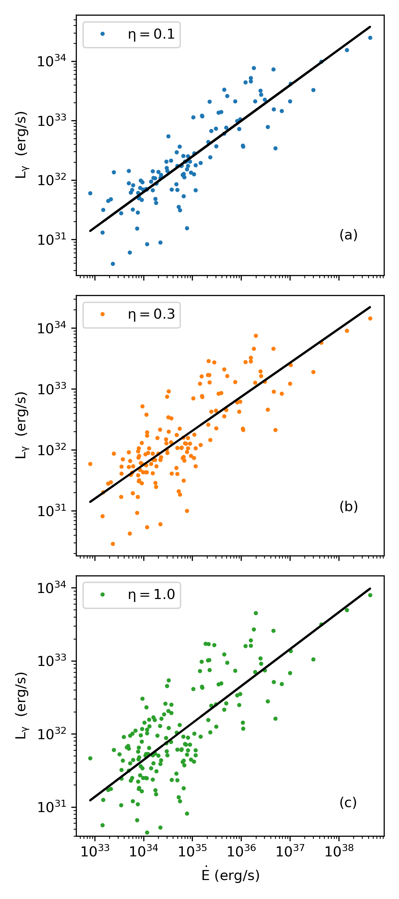
图注：Estimated gamma ray luminosity under synchro-curvature formalism as a function of spin down luminosity for three different values of $\eta$. The solid line shows the fitted power law $L_\gamma \propto \dot E^s$ to the scatter.
对应解读：对应“建议重点查看的图表”中的主要模型比较与论文核心结论：同步-曲率辐射框架下估计的伽马射线光度随自转能损率的标度关系。
入选理由：这张图直接检验论文的核心目标，即在 synchro-curvature formalism 下是否能再现群体层面的 \(L_gamma\) 与 \(E_dot\) 幂律趋势，并给出三种 eta 情形下的拟合线，是最能支撑日报详细解读的主结果图。
来源与置信度：\(arxiv_source\)；high；\(arxiv_source\) / main.tex:figure[5]
Fig01
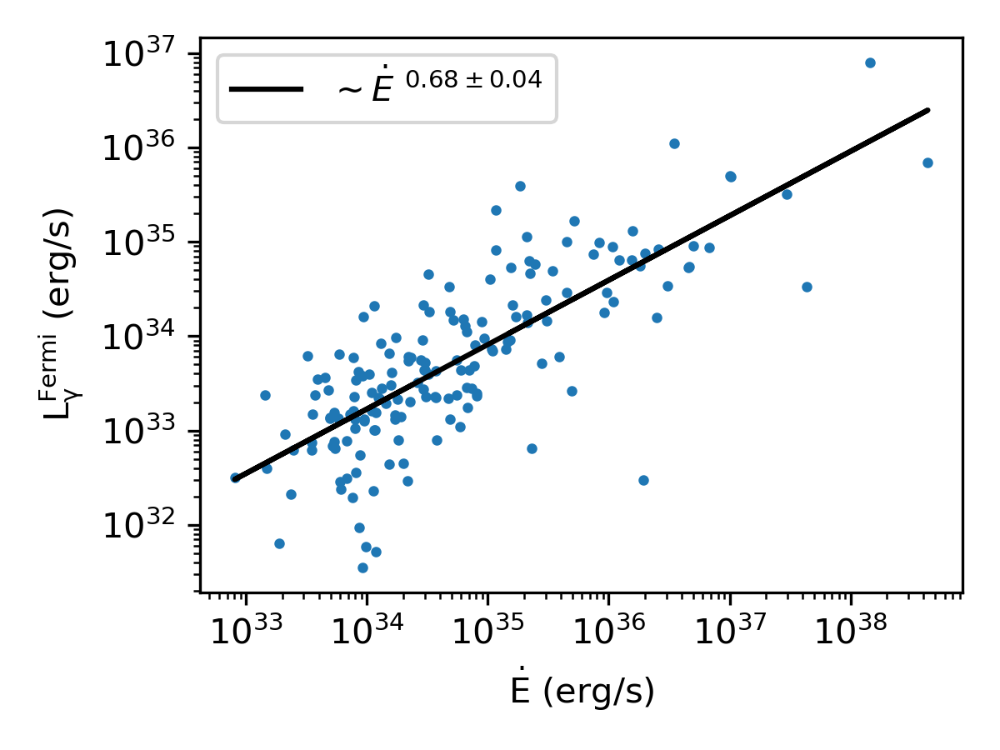
图注：Gamma ray luminosity of selected pulsars evaluated in energy band 0.1-100 GeV vs spin down luminosity $\dot E$. The solid black line shows the power law fit to the data.
对应解读：对应主要观测数据基准图：Fermi 脉冲星的观测伽马射线光度 \(L_gamma\) 与自转能损率 \(E_dot\) 的关系及幂律拟合。
入选理由：该图提供论文要解释的观测经验关系，是后续理论估计和 Fig05 模型趋势的参照基线；坐标轴和黑色幂律拟合线直接对应摘要中提到的 \(L_gamma\) ∝ \(E_dot^s\)。
来源与置信度：\(arxiv_source\)；high；\(arxiv_source\) / main.tex:figure[1]
Fig04
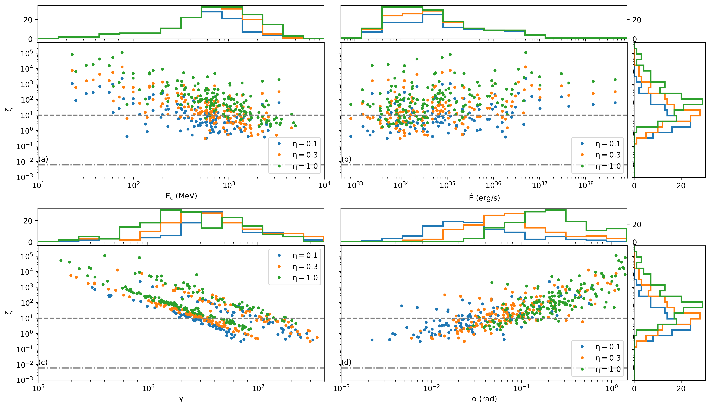
图注：The synchro-curvature parameter ($\zeta$) vs observed cutoff energy of pulsar ($E_c$), spin down luminosity of pulsar ($\dot E$), Lorentz factor of particle ($\gamma$) and pitch angle of particle ($\alpha$) for three different values of $\eta$. The horizontal dashed and dashed-dotted lines correspond to $\zeta = 10$ and $\zeta = 0.006$ respectively.
对应解读：对应关键物理诊断量：synchro-curvature 参数 zeta 随截止能量、自转能损率、洛伦兹因子和俯仰角的变化。
入选理由：这张图展示模型判定辐射处于同步、曲率或混合主导区间的核心诊断量，并含有 zeta=10 与 zeta=0.006 的参考线，能支撑对辐射机制相对贡献的解读。
来源与置信度：\(arxiv_source\)；high；\(arxiv_source\) / main.tex:figure[4]
Fig02
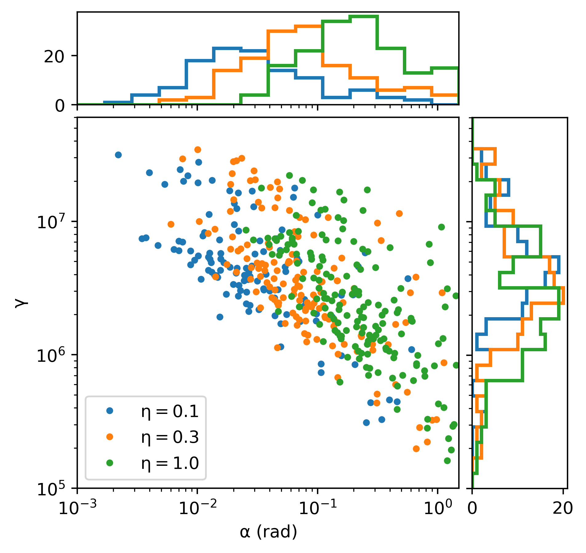
图注：Lorentz factor vs pitch angle, evaluated for three different values of electric field $E_{||} = \eta B_{LC}$, parametrized by parameter $\eta$. The histograms of pitch angle and Lorentz factor for three different values of $\eta$ are shown on top and right respectively. The typical error in the estimation of pitch angle and Lorentz factor is less than 0.5\% of their absolute values.
对应解读：对应模型参数约束段落：由观测截止能量和辐射反作用近似推得的平衡洛伦兹因子与俯仰角分布。
入选理由：论文方法的关键是求解粒子 gamma 和 alpha；该图同时给出三种 eta 下的二维关系及边缘直方图，适合解释模型参数如何随电场假设变化。
来源与置信度：\(arxiv_source\)；high；\(arxiv_source\) / main.tex:figure[2]
Fig06
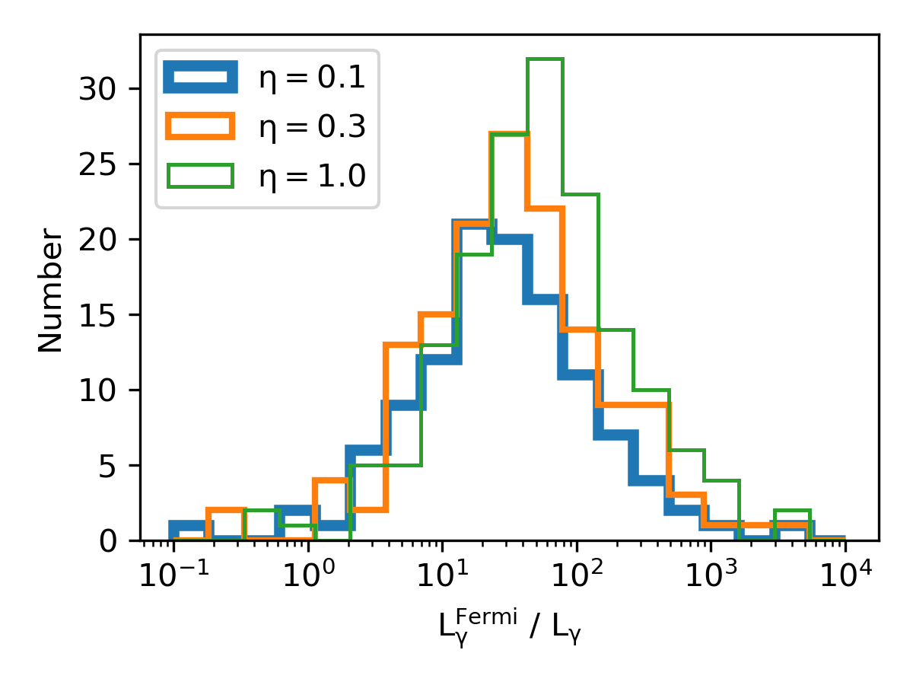
图注：Distribution of $L_\gamma^{Fermi} / L_\gamma$ for three different values of $\eta$.
对应解读：对应模型拟合和残差诊断：Fermi 观测光度与模型估计光度之比的分布。
入选理由：虽然不是传统残差图，但 \(L_gamma^Fermi\) / \(L_gamma\) 的分布直接衡量模型预测与观测的一致性，是评估系统偏差和 eta 依赖性的关键图。
来源与置信度：\(arxiv_source\)；high；\(arxiv_source\) / main.tex:figure[6]
Fig07
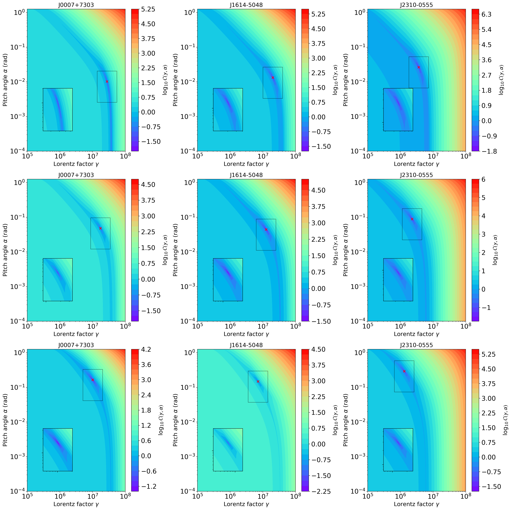
图注：Contour plots of $C(\gamma,\alpha)$ for 3 pulsars evaluated at different values of $\eta$. The top, middle and bottom row correspond to $\eta$ values of 0.1, 0.3 and 1.0 respectively. The red cross shows the equilibrium values of Lorentz factor and pitch angle of particles obtained by simultaneously satisfying the equations (\ref{E_c}) and (\ref{powerloss}) using Nelder-Mead algorithm whereas the rectangle on each contour plot is a zoom around the minimum.
对应解读：对应参数求解与拟合方法检查：C(gamma, alpha) 等值线、Nelder-Mead 最小值以及平衡解位置。
入选理由：该图展示求解平衡洛伦兹因子和俯仰角的目标函数地形，并用红叉标出最小值，可用于核查参数解是否稳定、是否存在退化或局部极小。
来源与置信度：\(arxiv_source\)；high；\(arxiv_source\) / main.tex:figure[7]
强相关工作
相似工作的检索应从 Fermi-LAT 伽马射线脉冲星目录和群体研究入手，关键词包括“Fermi LAT gamma-ray pulsars”, “gamma-ray luminosity spin-down power”, “pulsar luminosity law”, “cutoff energy pulsars”。这些文献通常给出 \(L_\gamma\)、\(\dot E\)、谱指数、指数截止能量和距离估计，是本文图 1 观测关系的来源背景。还应查找讨论 \(L_\gamma\propto \dot E^{1/2}\)、\(\dot E\) 高低端效率变化、以及束射因子修正的群体模型，以判断本文的 \(s\sim0.68\) 与既有结果是否一致或存在张力。
基础理论文献应覆盖曲率辐射、同步辐射和同步-曲率辐射的统一处理。检索关键词可用“synchro-curvature radiation pulsars”, “curvature radiation gamma-ray pulsars”, “radiation reaction limit pulsar magnetosphere”, “pitch angle outer magnetosphere”。这些工作会定义同步-曲率参数、特征能量、功率损失和不同极限的判据，是理解本文 \(\zeta\)、\(E_c^{th}\) 与 \(P_{sc}\) 的基础。
可能存在张力的方向包括三类。第一，现代力自由或粒子-在-格点磁层模拟可能给出空间变化的 \(E_{\parallel}\)，而本文采用 \(E_{\parallel}=\eta B_{LC}\) 的简化全局参数化。第二，电流片或条纹风模型可能把 GeV 辐射位置放在光柱外侧，与“近光柱磁层内”图像有所不同。第三，纯曲率辐射模型有时已能解释许多脉冲星的 GeV 截止，因此需要通过图 4 和图 6 的诊断来判断同步-曲率模型是否带来真正改进，而不只是增加自由度。
相似工作：
（未提供）
基础理论 / 方法工作：
（未提供）
相反观点 / 张力线索：
（未提供）
7. Time-dependent cosmic-ray escape from wind bubbles: hard spectra formation
- 来源：arXiv / astro-ph.HE
- 链接：https://arxiv.org/abs/2606.12390v1
- 作者：Lukas Merten, Sophie Aerdker, Enrico Peretti
- 评分：novelty 7/10，importance 7/10，relevance 9/10，final 8.70/10
- 推荐理由：研究风泡中宇宙线的时变逃逸和硬谱形成，直接关联宇宙线加速、传播及潜在多信使辐射；方法上结合时变输运和CRPropa实现，值得关注。
中文题目：风泡中宇宙线的时变逃逸：硬谱如何形成
做了什么：这篇文章研究大质量恒星风吹出的风泡中，宇宙线从终止激波注入后，如何在随时间膨胀的泡内通过平流和扩散传播，并从前向激波位置的自由逃逸边界逃出。作者把一维球对称、显式含时的输运方程转化为随机微分方程，并用修改后的 CRPropa 进行数值积分。核心结论是：在风驱动阶段，逃逸到下游的宇宙线谱可以比传统扩散激波加速预期的 \(E^{-2}\) 更硬；不同湍流模型还会在低能端留下明显抑制。这使风泡不仅是潜在的高能粒子加速器，也可能通过低能粒子滞留、累积柱密度和多信使辐射产生可观测差异。
为什么重要：很多关于恒星风泡、星协和超级泡的宇宙线模型仍把逃逸处理成准稳态或简单能量依赖泄漏，但风泡本身的半径、速度、密度和磁湍流随时间演化。本文的重要性在于把“源内输运”和“逃逸谱形成”放回到一个含时边界问题中：逃逸谱不只是注入谱乘以一个泄漏时间，而是由粒子能量、扩散系数、平流速度和膨胀边界共同决定。若硬逃逸谱是真实的，它会影响年轻星团、OB 星协和银河系宇宙线源谱的解释。
理论 / 观测 / 仪器方法价值：对理论而言，本文提供了一个可复用的随机微分方程框架，用于处理移动自由逃逸边界下的球对称宇宙线输运。对观测而言，它指出低能逃逸抑制和硬化高能逃逸谱可能对应到 \(\gamma\) 射线、中微子和泡内累积物质柱密度的差异。对方法而言，文章展示了 CRPropa 这类传播框架如何从银河尺度传播扩展到源区内、含时、非均匀背景中的输运问题。
为什么应该关注：如果你关心银河宇宙线源谱为什么可能比标准 \(E^{-2}\) 更硬、年轻大质量恒星环境能否贡献膝区以下宇宙线、或者星团附近的 \(\gamma\) 射线辉光为何与简单逃逸模型不符，这篇文章值得读。它提醒我们：从加速区离开的谱并不等于激波处的注入谱，尤其在风泡这种边界快速演化、低能粒子被强烈束缚的系统中，逃逸过程本身就是谱形塑造机制。
展开详细解读：文章讲解、背景、理论、重点章节、图表与相关工作
文章详细讲解
科学问题：风泡是由大质量恒星风在周围介质中吹出的多层结构，通常包含自由风区、风终止激波、热化风泡、接触间断面和外层前向激波。如果宇宙线在终止激波附近被持续注入，它们必须穿过膨胀的热泡才能逃到外部介质。传统图像常假设扩散激波加速给出接近 \(E^{-2}\) 的源谱，然后用某个能量依赖逃逸时间修正。但在风泡中，边界位置 \(R_{\rm fs}(t)\)、流场 \(u(r,t)\)、扩散系数 \(\kappa(E,r,t)\) 都随时间变化，逃逸谱未必保持注入谱形。
作者怎么做：文章把系统理想化为一维球对称结构，宇宙线在终止激波位置连续注入，随后在泡内经历径向平流和空间扩散。外层前向激波的位置被设为自由逃逸边界，即粒子一旦到达随时间移动的 \(R_{\rm fs}(t)\) 就记为逃逸。作者没有直接用网格方法求解偏微分输运方程，而是把它转化为等价的随机微分方程，跟踪大量伪粒子的径向随机游走、能量演化和逃逸时间，并在修改后的 CRPropa 框架中实现。
关键结果：在风驱动阶段，逃逸粒子的下游能谱可以明显硬于常规扩散激波加速的 \(E^{-2}\) 预期。物理原因是高能粒子的扩散长度更大，更容易在早期或更短时间内触及自由逃逸边界；低能粒子则被平流和较小扩散系数束缚在泡内，逃逸效率降低。作者还比较了不同湍流模型，发现低能端抑制幅度对湍流实现很敏感，因此低能逃逸谱可能成为区分湍流谱、磁场强度和扩散标度的诊断。
局限和下一步：本文采用球对称、参数化湍流和自由逃逸边界，尚未完整处理三维不对称风、磁场各向异性、壳层破裂、多源注入、非线性宇宙线反馈以及与气体动力学的自洽耦合。下一步自然方向是把该含时输运框架接入更真实的 MHD 风泡模拟，计算伴随的 \(\gamma\) 射线和中微子辐射，并与年轻星团、沃尔夫-拉叶星泡和超级泡观测进行联合约束。
关键结果是怎么做出来的
本文最重要的证据链从样本定义开始：它不是统计天体样本论文，而是针对理想化风泡的一组数值实验。样本空间由风泡动力学阶段、注入谱、扩散和湍流模型、移动自由逃逸边界等参数组合构成。粒子从终止激波半径附近连续注入，记录每个伪粒子是否到达前向激波边界、何时逃逸以及逃逸时能量，从而构造含时逃逸通量和积分逃逸谱。
事件数在这里对应蒙特卡洛伪粒子数和能量分箱统计，而不是探测器计数。判断谱是否硬于 \(E^{-2}\) 的核心做法，是把逃逸粒子按能量分箱，比较 \(dN_{\rm esc}/dE\) 或对应通量与输入注入谱的斜率差异。若注入近似为 \(Q(E)\propto E^{-s}\) 且 \(s\simeq 2\)，而逃逸谱在某一能段呈现更小的有效谱指数 \(s_{\rm esc}<2\)，就说明逃逸过程本身产生硬化。
统计显著性主要来自数值收敛和模型对比，而不是单一天文源探测的 \(p\)-值。读者应重点看作者是否展示了足够多伪粒子下的谱形稳定性、不同时间步或随机步长设置下的收敛、以及不同湍流模型之间低能抑制是否超过蒙特卡洛噪声。若文中给出逃逸谱、时间分辨逃逸率和不同湍流方案对比图，这些图就是支撑“硬谱形成”和“低能抑制可诊断湍流”的关键证据。
模型比较的关键不是某个复杂贝叶斯因子，而是不同 \(\kappa(E,r,t)\) 假设导致的逃逸谱系统差异。湍流谱越使低能扩散系数小，低能粒子越难在有限风泡年龄内到达 \(R_{\rm fs}(t)\)，低能逃逸越受抑制。相反，高能端若扩散过快，粒子在较早阶段就能泄漏，逃逸谱会偏硬，并且逃逸时间分布更靠前。
主要系统误差来自自由逃逸边界的理想化、风泡动力学解析模型、扩散系数归一化、湍流谱指数、磁场空间分布和注入位置。稳健性检验应包括改变边界位置定义、改变终止激波和前向激波的时间演化、改变注入持续时间，以及检查平流项和绝热能损项的相对重要性。若硬谱只在极端扩散归一化或非常特殊边界条件下出现，则结论会较弱；若在多种湍流模型中普遍出现，只是低能截断位置不同，则结论更有物理普适性。
背景知识
研究对象是恒星风驱动泡。大质量恒星通过高速风把动量和能量注入周围介质，形成内部热化风区和外部扫掠壳层。风终止激波可把风动能转化为热能和非热粒子能量，外层前向激波则标记泡与环境介质的相互作用。这样的结构在单颗大质量星、沃尔夫-拉叶星、OB 星协和超级泡中都可能存在。
历史上，宇宙线源谱常从扩散激波加速出发，强非相对论激波给出接近 \(E^{-2}\) 的动量谱或能量谱。银河传播会进一步使到达地球的谱变陡，因此人们常把源谱和传播谱分开处理。但这套分解隐含一个前提：粒子离开源区时的谱基本等于加速区产生的谱，或者逃逸只提供简单的能量依赖修正。风泡环境恰好挑战这个前提，因为源区尺度、流速和扩散条件都随年龄变化。
观测上，年轻星团和恒星形成区周围的 \(\gamma\) 射线延展辐射越来越受到关注。若低能宇宙线被困在泡内，它们会积累更大的物质柱密度并增强强子相互作用；若高能粒子更早逃逸，它们可能在泡外介质中产生更硬、更扩展的辐射。这使逃逸谱不只是理论细节，而会影响 \(\gamma\) 射线形态、谱指数和可能的中微子对应体。
现在值得重新看这个问题，是因为高能观测和数值工具都成熟了。一方面，Fermi-LAT、HAWC、LHAASO、H.E.S.S.、MAGIC 和 CTA 相关研究正在把星团环境作为宇宙线源候选；另一方面，CRPropa 等传播工具可以处理更复杂的几何、随机过程和边界条件。用含时随机输运重新计算逃逸谱，正好连接源内微物理与多信使观测。
常见误区有两个。第一，把 \(E^{-2}\) 当作所有源离开谱的默认答案；实际上 \(E^{-2}\) 是特定激波条件下的加速结果，不等于通过有限大小、含时介质后的逃逸结果。第二，把低能粒子逃不出去简单理解为“观测不到”；事实上低能粒子在泡内滞留会增加相互作用时间，可能增强局域辐射和改变累积 grammage，因此它们仍然有观测后果。
基础理论 / 方法脉络
从物理图像看，宇宙线在风泡中受到两类宏观输运控制：一是气体流动带来的平流，粒子随背景等离子体向外运动；二是磁湍流散射导致的空间扩散，粒子在径向上做随机游走。若扩散时间短于泡年龄，粒子容易到达外边界；若扩散时间长于泡年龄，粒子会被困在泡内。能量依赖扩散因此直接塑造逃逸谱。
本文的几何假设是一维球对称。粒子从终止激波附近注入，这个位置代表恒星风由超声速自由风转为热化亚声速流的地方。外层前向激波位置 \(R_{\rm fs}(t)\) 随时间向外推进，并被当作自由逃逸边界。自由逃逸边界的意思不是粒子在那里物理消失，而是模型只关心泡内输运，一旦粒子穿过该半径就记入逃逸通量。
关键量包括粒子能量 \(E\)、径向位置 \(r\)、时间 \(t\)、流速 \(u(r,t)\)、扩散系数 \(\kappa(E,r,t)\)、注入函数 \(Q(E,t)\) 和分布函数 \(f(r,E,t)\)。湍流模型主要通过 \(\kappa\) 进入问题；例如不同湍流谱指数会改变 \(\kappa\) 对刚度的依赖，从而改变不同能量粒子的逃逸优先级。
随机微分方程方法的优势是把扩散-平流方程转成大量伪粒子的随机轨道。每个伪粒子按确定性漂移项和平流项移动，同时叠加与 \(\sqrt{\kappa}\) 成正比的随机步长。移动边界可在轨道层面自然处理：当 \(r\ge R_{\rm fs}(t)\) 时记录逃逸。相比固定网格，SDE 方法对高维推广和复杂边界更灵活。
主要退化关系来自扩散系数归一化、磁场强度、湍流相干长度和系统年龄。较小的 \(\kappa\) 与较年轻的年龄都可造成低能逃逸不足；较大的 \(R_{\rm fs}\) 与较强平流也会改变逃逸时间。观测上，如果只看 \(\gamma\) 射线谱，低能粒子滞留、目标气体分布和辐射区几何之间也会高度退化，需要形态、谱和多波段信息联合约束。
公式与推导
第一步从各向同性宇宙线分布函数 \(f(r,p,t)\) 的球对称输运方程出发。忽略二阶费米再加速和连续损失时，一个常用形式为
这里 \(r\) 是半径，\(p\) 是粒子动量，\(u(r,t)\) 是径向流速，\(\kappa(r,p,t)\) 是空间扩散系数，\(Q\) 是注入项。右侧第一项描述扩散，第二项描述流场压缩或膨胀导致的绝热动量变化。
第二步写出自由逃逸边界。若前向激波半径为 \(R_{\rm fs}(t)\)，最简单边界条件是
这个条件表示边界外不再求解泡内分布；到达该半径的粒子被计入逃逸。它适用于把外部介质当作吸收区或把源内问题与源外传播分开的情形。
第三步给出终止激波附近的连续注入。若注入半径为 \(R_{\rm ts}(t)\)，可用
其中 \(\dot{N}_0(t)\) 是归一化注入率，\(p_0\) 是参考动量，\(s\) 是注入谱指数。若强激波极限成立，常取 \(s\simeq 2\)，但本文关心的是逃逸后谱指数是否偏离该值。
第四步把扩散和平流方程映射到随机微分方程。对径向伪粒子，漂移项包含平流、球坐标几何漂移和扩散系数梯度，可写成示意形式
这里 \(dW_t\) 是 Wiener 过程增量，满足 \(\langle dW_t\rangle=0\) 和 \(\langle dW_t^2\rangle=dt\)。该式说明扩散系数越大，随机步长越大，高能粒子更容易在有限时间内触碰边界。
第五步描述绝热能量变化。对相对论粒子可近似用
若流场膨胀，\(\nabla\cdot u>0\)，粒子绝热降能；若流场压缩，粒子可获得能量。对本文的逃逸谱而言，绝热项会改变粒子到达边界时的能量分箱。
第六步采用能量依赖扩散系数。湍流模型常被参数化为
其中 \(\delta\) 由湍流谱决定，\(E_0\) 是参考能量。较大的 \(\delta\) 会扩大高低能扩散时间差异，从而加强低能束缚和高能优先逃逸。
第七步估计扩散逃逸时间标度。若忽略平流和边界移动，粒子从 \(R_{\rm ts}\) 到 \(R_{\rm fs}\) 的扩散时间量级为
当 \(t_{\rm diff}\lesssim t_{\rm age}\) 时粒子能有效逃逸；当 \(t_{\rm diff}\gg t_{\rm age}\) 时粒子被困在泡内。这一不等式就是低能抑制的直观判据。
第八步定义逃逸通量。球面对外的粒子数流可写为
其中 \(n(E,r,t)\) 是微分数密度。第一项是扩散流，第二项是平流流。SDE 模拟中等价做法是统计单位时间、单位能量内首次穿越边界的伪粒子权重。
第九步把瞬时逃逸率积成观测相关的总逃逸谱：
若 \(dN_{\rm esc}/dE\propto E^{-s_{\rm esc}}\) 且 \(s_{\rm esc} 第十步给出数值谱指数的诊断。对两个能量分箱 \(E_1\) 和 \(E_2\)，可估计 这里 \(N_{\rm esc}(E_i)\) 是相应能量箱的逃逸粒子数或权重。该式可直接检查图中的逃逸谱斜率，并判断硬化是否超过统计噪声和模型系统误差。 本文更接近参数化数值建模，而不是对某个观测数据集做最佳拟合。核心“拟合量”或输出量包括逃逸谱 \(dN_{\rm esc}/dE\)、瞬时逃逸率 \(\Phi_{\rm esc}(E,t)\)、逃逸时间分布、低能抑制能量尺度和有效谱指数 \(s_{\rm esc}\)。输入参数包括注入谱指数 \(s\)、注入归一化、风泡动力学、扩散系数归一化 \(\kappa_0\)、能量指数 \(\delta\)、湍流模型和边界演化。 若把这类模型用于真实观测，常见似然可以建立在 \(\gamma\) 射线或中微子能谱分箱上。模型先计算泡内和泡外宇宙线分布，再折叠强子相互作用或逆康普顿辐射模型，得到预测计数。然后与仪器响应卷积，用泊松似然或 \(\chi^2\) 统计量估计参数。残差图应检查是否在低能端系统偏离，因为低能端正是不同湍流模型差异最大的地方。 主要参数退化包括 \(\kappa_0\) 与年龄 \(t_{\rm age}\)、\(\delta\) 与注入谱指数 \(s\)、目标气体密度与宇宙线归一化、磁场强度与扩散归一化。比如一个较硬的观测 \(\gamma\) 射线谱既可能来自硬注入，也可能来自逃逸筛选造成的硬化；一个低能亏缺既可能是扩散束缚，也可能是仪器阈值、背景建模或目标气体空间分布造成。 系统误差需要分层处理。数值层面要检查伪粒子数、时间步长、边界穿越判据和 SDE 离散化方案。物理层面要检查球对称假设、自由逃逸边界、扩散各向同性和风泡解析演化。观测应用层面还要考虑源距离、角延展、背景模板、气体柱密度图和能量响应矩阵。 模型可能失败的场景也很清楚。如果真实风泡存在破裂通道，粒子会沿低密度通道非球对称泄漏，球对称模型会低估某些方向的逃逸。若磁场高度有序，各向异性扩散会使 \(\kappa_\parallel\) 和 \(\kappa_\perp\) 差异很大，一维径向扩散不再充分。若宇宙线压力反过来改变湍流和流场，则测试粒子近似也会失效。 数据/模型设定部分应首先读。这里会定义风泡的球对称结构、终止激波和前向激波的时间演化，以及为什么把前向激波设为自由逃逸边界。读者要特别留意 \(R_{\rm ts}(t)\)、\(R_{\rm fs}(t)\)、\(u(r,t)\) 和 \(\kappa(E,r,t)\) 的参数化，因为这些决定了后面所有谱形结果。 方法部分是本文技术核心。作者把一维球对称输运方程转化为随机微分方程，并在 CRPropa 中实现。读这一段时要核对漂移项是否包含球坐标几何项、扩散系数梯度项和绝热能量变化项；还要看移动边界如何判定穿越，以及伪粒子权重如何转换为逃逸通量。 结果部分应按“时间分辨逃逸”再到“积分逃逸谱”的顺序读。时间分辨图能告诉你不同能量粒子什么时候离开风泡，积分谱则显示最终源外注入谱。若只看最终谱，容易错过硬化来自早期高能泄漏和低能长期滞留的时间选择效应。 湍流模型比较部分是本文最有观测指向的内容。读者应关注不同 \(\delta\)、\(\kappa_0\) 或湍流实现下低能端抑制的位置和强度。若这些差异足够大，就意味着未来 \(\gamma\) 射线或中微子观测可能反向约束源区湍流。 讨论和稳健性检验部分应重点看作者如何界定结论适用范围。特别是自由逃逸边界、球对称、忽略三维泄漏和非线性反馈这些假设是否被明确讨论。对想把本文模型用于真实源的人，这部分比单个硬谱数值更重要。 风泡结构和半径随时间演化图：检查 \(R_{\rm ts}(t)\) 与 \(R_{\rm fs}(t)\) 的相对距离如何变化，因为扩散逃逸时间近似与二者间距平方成正比。 扩散系数或湍流模型对比图：看 \(\kappa(E)\) 的能量标度和归一化，不同模型在低能区的差异是否足以解释低能逃逸抑制。 时间分辨逃逸率图：看高能粒子是否更早、更集中地逃逸，低能粒子是否在整个风驱动阶段都被压低。 积分逃逸谱图：重点比较注入谱 \(E^{-2}\) 与逃逸谱斜率，检查硬化发生在哪个能段，低能截断或抑制是否随湍流模型移动。 能量-逃逸时间二维分布或热图：若有，应看逃逸时间与能量的相关性，这是证明含时逃逸塑造谱形的直接诊断。 数值收敛或稳健性表：检查伪粒子数、时间步、边界条件和参数扰动是否改变主要结论。 泡内累积粒子谱或 grammage 诊断：若文中给出，应看低能粒子滞留是否导致泡内相互作用机会增加，这关系到多信使辐射预测。 图 1：通常应是风泡几何或动力学示意。横轴若为时间，纵轴可能为半径，曲线对应终止激波、接触间断面和前向激波。读图时不要只看半径大小，而要看 \(R_{\rm fs}(t)-R_{\rm ts}(t)\) 的演化；这个厚度控制粒子需要扩散穿越的尺度。陷阱是把移动边界看成固定盒子，实际边界膨胀会改变逃逸条件。 图 2：可能展示不同湍流模型下的扩散系数 \(\kappa(E)\) 或相关长度。横轴通常是能量或刚度，纵轴是扩散系数。模型线越分散，说明湍流假设对低能逃逸越关键。读图陷阱是只比较高能端；本文强调的可区分特征往往在低能端抑制。 图 3：时间分辨逃逸率图应把横轴设为时间或风泡年龄，纵轴为逃逸率，颜色或多条线表示不同能量。若高能曲线在早期有更强峰值，而低能曲线低且延迟，就支持“逃逸筛选”导致硬谱。需要注意归一化方式：按注入数归一和按绝对逃逸数归一会给出不同视觉印象。 图 4：积分逃逸谱图是核心图。横轴为能量，纵轴为 \(dN_{\rm esc}/dE\) 或乘以 \(E^2\) 的谱能量分布。若 \(E^2dN_{\rm esc}/dE\) 随能量上升或保持较平，就意味着逃逸谱硬于 \(E^{-2}\)。读图时要区分注入谱参考线、不同湍流模型线和蒙特卡洛统计误差。 图 5：若有能量-逃逸时间二维直方图，横轴可为时间，纵轴为能量，颜色表示逃逸粒子数。该图最能直观看出高能优先逃逸和低能滞留。陷阱是颜色尺度可能为对数，低能区看似仍有颜色但实际权重可能小很多。 图 6：稳健性或参数扫描图应显示改变 \(\kappa_0\)、\(\delta\)、年龄或边界条件后谱指数 \(s_{\rm esc}\) 的变化。读者应看硬化是否为宽参数区间内的趋势，而不是某个特定设置的偶然结果。若误差带或模型带重叠很大，则低能湍流诊断的实际可观测性会降低。 Fig06 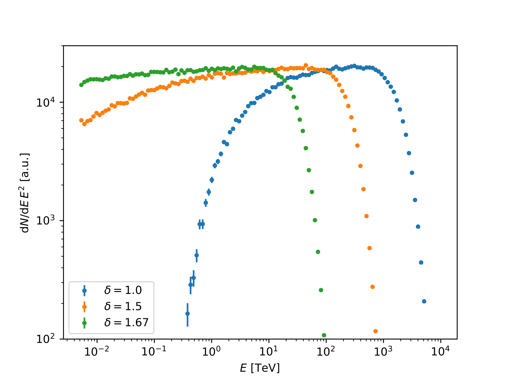模型拟合 / 应用方法
重点章节 / 结果段落怎么读
建议重点查看的图表
关键图表逐图导读
论文原图 / 可嵌入图片
图注：Escaping spectra at $t=1\,\mathrm{Myr}$ for different diffusion models ($\delta$). The other model parameters are fixed to a radial downstream magnetic field strength dependence of $\alpha=-1$ and low magnetization ($\epsilon_\mathrm{B} = 0.01$).
对应解读：建议重点查看的图表第2、4项；关键图表逐图导读中关于积分逃逸谱和不同湍流/扩散模型对低能抑制的讨论。
入选理由：这是最直接检验本文核心结论的图：在固定磁场径向依赖和磁化参数下，比较不同扩散模型的1 Myr逃逸谱，可直接判断逃逸谱是否硬于注入的E^{-2}、低能抑制如何随扩散能量指数δ变化，以及湍流假设是否足以造成可观测差异。
来源与置信度：\(arxiv_source\)；high；\(arxiv_source\) / \(main_arXiv.tex\):figure[6]
Fig02
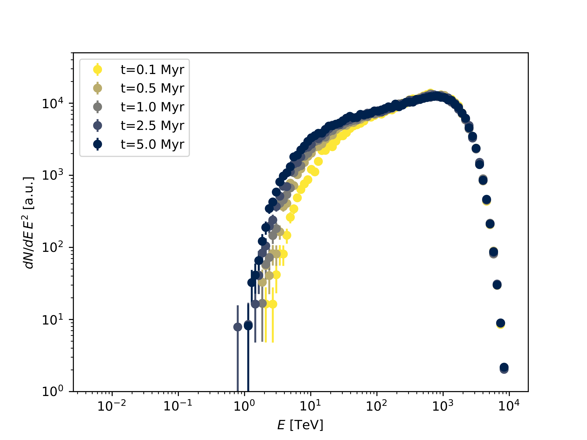
图注：Escaping CR flux weighted with the $E^2$ for a constant downstream magnetic field strength ($\alpha=0$), Bohm diffusion coefficient ($\delta=1$) and large magnetization ($\epsilon_B=0.1$). The time evolution is color coded with bright yellow corresponding to earlier and dark blue colors corresponding to later times.
对应解读：建议重点查看的图表第3、4项；关键图表逐图导读中关于时间分辨逃逸谱、高能粒子早期逃逸和E^2加权谱形硬化的讨论。
入选理由：该图给出Bohm扩散、强磁化、恒定下游磁场情形下E^2加权逃逸通量的时间演化，颜色编码可直接展示谱形如何随风泡年龄改变，是理解含时逃逸如何塑造硬谱的基准图。
来源与置信度：\(arxiv_source\)；high；\(arxiv_source\) / \(main_arXiv.tex\):figure[2]
Fig09
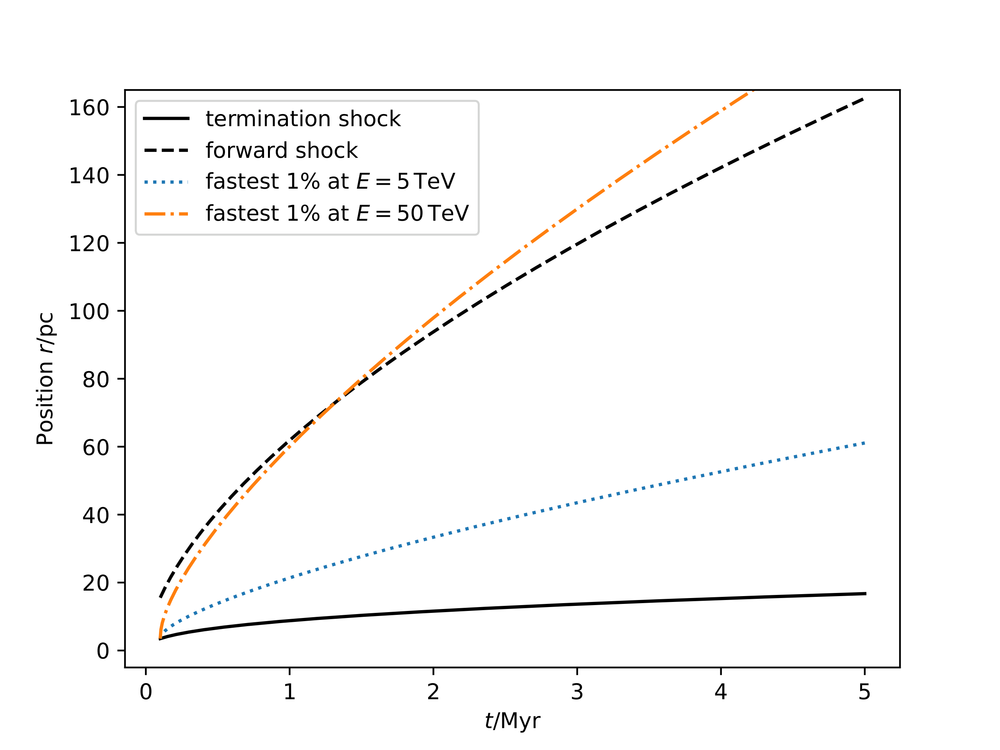
图注：Approximation of the position of the fastest 1\% percent of purely diffusive particles at different energies. This shows that low energy particle will not escape the wind bubble purely diffusive. Furthermore, the low energy cut off can be estimated from the intersection of the diffusive tracer position with the forward shock position.
对应解读：建议重点查看的图表第5项；关键图表逐图导读中关于能量—逃逸时间相关性、低能粒子滞留和低能截止估计的讨论。
入选理由：该图用不同能量下最快1%纯扩散粒子的位置与前向激波位置比较，直接说明低能粒子为何难以通过扩散逃逸，并给出低能截止可由扩散示踪位置与前向激波交点估计的物理图像。
来源与置信度：\(arxiv_source\)；high；\(arxiv_source\) / \(main_arXiv.tex\):figure[9]
Fig08
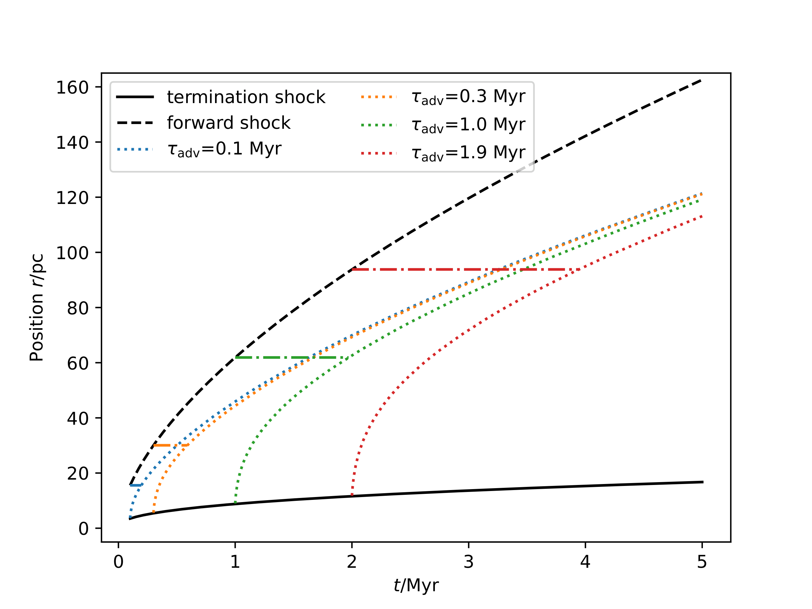
图注：The positions of a purely advective particle are shown in comparison to the two shock positions (dotted lines). For comparison the time scales in the "frozen" scenario are marked with dash-dotted lines.
对应解读：建议重点查看的图表第1项；关键图表逐图导读中关于R_ts(t)、\(R_fs(t)\)、移动边界与固定盒子近似差异的讨论。
入选理由：该图同时显示纯平流粒子位置和两个激波位置，并与“冻结”情形的时间尺度比较，最适合支撑日报中强调的移动边界、风泡膨胀和逃逸尺度随时间变化的问题。
来源与置信度：\(arxiv_source\)；high；\(arxiv_source\) / \(main_arXiv.tex\):figure[8]
Fig10
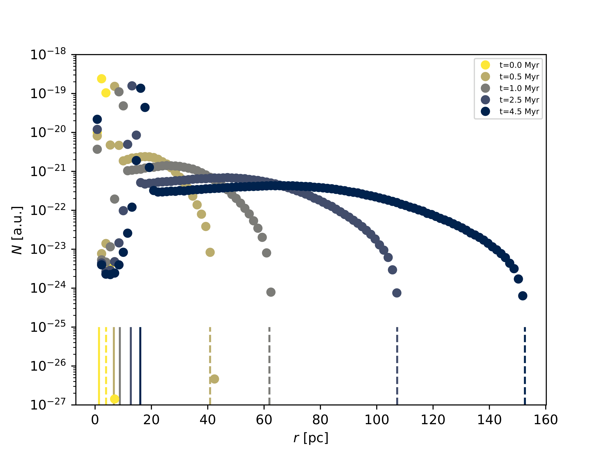
图注：CR number density for a constant downstream magnetic field strength ($\alpha=0$), Kraichnan diffusion coefficient ($\delta=3/2$) and large magnetization ($\epsilon_B=0.1$). The time evolution is color coded with bright yellow corresponding to earlier and dark blue colors corresponding to later times. The positions of the termination $R_\mathrm{TS}$ and forward $R_\mathrm{FS}$ shock are marked with a solid and dashed line, respectively.
对应解读：建议重点查看的图表第7项；模型输出量中关于泡内宇宙线数密度、低能滞留和多信使辐射/grammage含义的讨论。
入选理由：该图展示Kraichnan扩散、强磁化情形下泡内宇宙线数密度的时间演化，并标出终止激波和前向激波位置，可用于说明粒子在泡内的积累、空间分布和低能束缚对后续辐射预测的影响。
来源与置信度：\(arxiv_source\)；high；\(arxiv_source\) / \(main_arXiv.tex\):figure[10]
Fig05
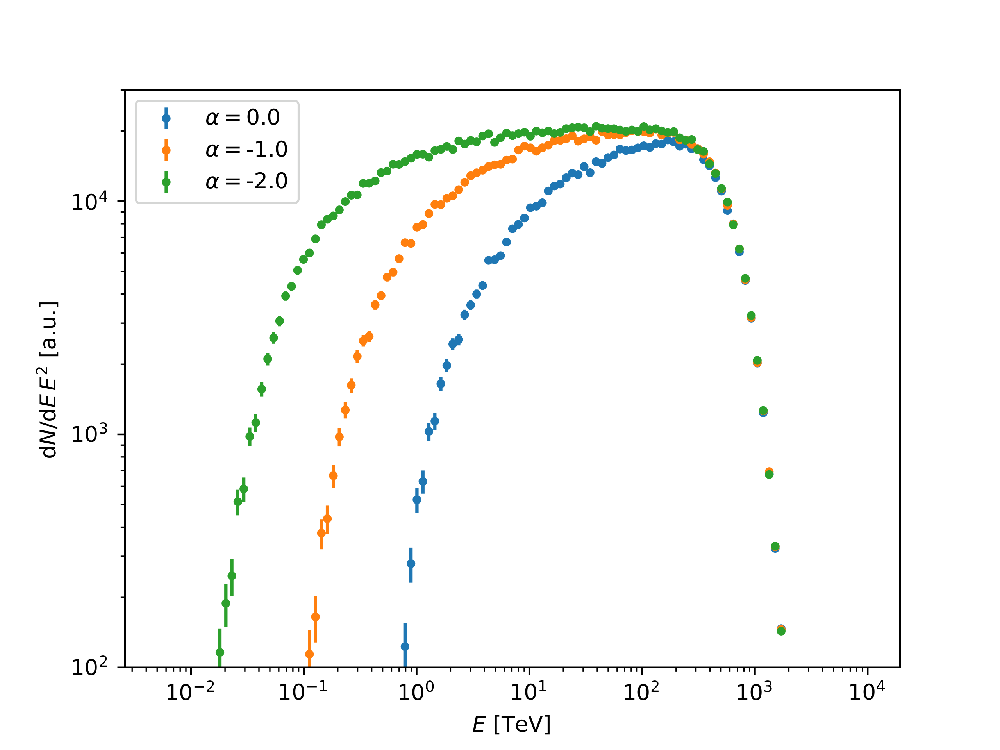
图注：Escaping spectra at $t=1\,\mathrm{Myr}$ for different radial dependencies of the downstream magnetic field strength $\alpha$. The other model parameters are fixed to Bohm diffusion ($\delta=1$) and low magnetization ($\epsilon_\mathrm{B} = 0.01$).
对应解读：建议重点查看的图表第4、6项；模型拟合段落中关于磁场径向依赖α、扩散归一化/磁场结构与逃逸谱系统不确定性的讨论。
入选理由：该图在固定Bohm扩散和低磁化下比较不同下游磁场径向依赖α的1 Myr逃逸谱，能展示谱形硬化和低能抑制不仅取决于δ，也受磁场空间结构影响，适合补充说明参数退化和系统误差。
来源与置信度：\(arxiv_source\)；high；\(arxiv_source\) / \(main_arXiv.tex\):figure[5]
强相关工作
这篇工作与关于超级泡、OB 星协和年轻星团作为银河宇宙线源的研究直接相关。相似工作常讨论集体恒星风、多个激波、湍流增强和 \(\gamma\) 射线延展源，例如 Cygnus cocoon、Westerlund 1、Westerlund 2、30 Doradus C 等对象。建议检索关键词包括“cosmic-ray escape wind bubble”、“superbubble cosmic rays”、“stellar wind termination shock particle acceleration”、“Cygnus cocoon gamma rays”和“CRPropa stochastic differential equation cosmic ray transport”。
它也与经典扩散激波加速理论存在张力但不是否定关系。经典理论回答的是激波处怎样产生幂律谱；本文回答的是这些粒子在真实、有限、含时源区中怎样离开。相反观点或替代模型可能认为硬 \(\gamma\) 射线谱主要来自硬注入、重新加速或多源叠加，而非逃逸筛选。未来区分这些解释，需要联合谱形、空间形态、源年龄、气体分布和多信使数据。
相似工作：
- https://arxiv.org/abs/2606.12390
- https://ui.adsabs.harvard.edu/
基础理论 / 方法工作：
- https://ui.adsabs.harvard.edu/abs/1978MNRAS.182..147B/abstract
- https://ui.adsabs.harvard.edu/abs/1978ApJ...221L..29B/abstract
- https://ui.adsabs.harvard.edu/abs/1977DoSSR.234.1306K/abstract
- https://ui.adsabs.harvard.edu/abs/2016JCAP...05..021B/abstract
相反观点 / 张力线索：
- https://ui.adsabs.harvard.edu/abs/2011Sci...334.1103A/abstract
- https://ui.adsabs.harvard.edu/
8. TAMBO: A Novel Neutrino Telescope for High-Energy Astrophysical Neutrino Detection
- 来源：arXiv / astro-ph.HE
- 链接：https://arxiv.org/abs/2606.11230v1
- 作者：P. Zhelnin, J. Dacpano, C. Argüelles
- 评分：novelty 7/10，importance 7/10，relevance 9/10，final 8.70/10
- 推荐理由：TAMBO面向1--1000 PeV天体物理中微子点源和弥散源，强调低背景和源灵敏度；属于高能中微子天文学与仪器方法重点方向。
中文题目：TAMBO：面向高能天体中微子探测的新型山谷式中微子望远镜
做了什么：这篇文章介绍了 Tau Air-shower Mountain-Based Observatory，简称 TAMBO，一种利用深山谷几何结构探测高能 \(\nu_\tau\) 的地基中微子望远镜方案。它瞄准 \(1\)--\(1000\,\mathrm{PeV}\) 能段：入射的 \(\nu_\tau\) 在山体中相互作用产生 \(\tau\) 轻子，\(\tau\) 逸出后在山谷空气中衰变并形成空气簇射，探测器阵列记录簇射信号。作者强调，山谷几何和 \(\tau\) 事例拓扑可显著压低大气背景，使 TAMBO 有机会获得非常纯净的高能天体中微子样本，并改善点源和弥散通量测量。
为什么重要：高能中微子天文学目前的核心瓶颈之一，不只是有效面积不够大，而是点源搜索中大气中微子、大气μ子背景以及全天扫描的 look-elsewhere penalty 会迅速稀释显著性。TAMBO 的重要性在于它尝试用几何选择而不是单纯堆探测体积来解决问题：让山体作为转换靶，让山谷作为簇射发展空间，让探测阵列只接收很难由普通宇宙线背景伪造的 \(\tau\)-诱导空气簇射。若这种设计达到预期，它将在 IceCube、KM3NeT、Baikal-GVD、GRAND、BEACON、POEMMA 等设施之间补上 \(\mathrm{PeV}\) 到 \(\mathrm{EeV}\) 过渡能段的一块关键拼图。
理论 / 观测 / 仪器方法价值：对观测而言，这项工作给出了一类高纯度 \(\nu_\tau\) 样本的实现路径，尤其适合寻找瞬变源、局部天空区域的点源和高能弥散谱截断。对理论而言，它能检验宇宙线源的最大加速能量、源内光强子相互作用、宇宙传播中的味振荡和新物理导致的味比例变化。对方法和仪器而言，TAMBO 的价值在于把地形、粒子相互作用长度、\(\tau\) 衰变长度、空气簇射重建和背景抑制一起纳入灵敏度优化，而不是只讨论单个探测器单元的性能。
为什么应该关注：如果你关心高能中微子源到底来自耀变体、星暴星系、潮汐瓦解事件、伽马暴、活动星系核核心还是银河系内 PeVatron，TAMBO 的核心卖点是：它可能用更少的背景事例换来更干净的源关联检验。即便最终通量低于乐观预期，这篇文章也值得关注，因为它展示了未来高能中微子实验如何从“最大体积”转向“最大有效判别力”的设计逻辑。
展开详细解读：文章讲解、背景、理论、重点章节、图表与相关工作
文章详细讲解
科学问题：高能天体中微子已经由 IceCube 等实验确认存在，但把弥散通量拆解成具体点源仍然困难。困难并非只有统计量不足，还包括大气中微子和大气μ子背景、角分辨率有限、能量重建误差、源搜索中的 trials factor，以及高能端事件率急剧下降。TAMBO 针对的是 \(1\)--\(1000\,\mathrm{PeV}\) 区间，这一能段非常关键：它连接 IceCube 最灵敏的 \(\mathrm{TeV}\)--\(\mathrm{PeV}\) 天体中微子和射电阵列主攻的 \(\mathrm{EeV}\) 宇宙成因中微子，同时也是源内最大加速能量和宇宙线谱膝区、踝区模型相互交叉的区域。
作者怎么做：论文提出的 TAMBO 不是传统深冰、深海或地下水切伦科夫望远镜，而是山谷式 \(\tau\) 中微子望远镜。基本思路是让 \(\nu_\tau\) 从接近地平线方向穿过山体，在岩石中通过带电流相互作用产生 \(\tau\) 轻子；若 \(\tau\) 能量足够高、能量损失又不至于太大，它可从山体表面逸出，在山谷空气中衰变，产生可被地面或山坡探测单元记录的空气簇射。深山谷提供了自然靶体、簇射发展距离和几何屏蔽，使多数普通向下宇宙线空气簇射难以模拟同样的时空拓扑。
关键结果：从摘要可知，作者给出的是初步灵敏度研究，重点结论是 TAMBO 在 \(1\)--\(1000\,\mathrm{PeV}\) 能段可能实现很强的信号背景判别能力，并产生高纯度中微子样本。这样的样本特别适合两类科学：一是弥散中微子通量的能谱测量，尤其是高能端是否有硬谱、软化或截断；二是点源搜索，因为背景越低，给定事件数对应的源关联显著性越高，全天或大天区扫描中的 look-elsewhere penalty 影响也相对可控。论文还强调 TAMBO 可以用于“绘制”弥散和点源中微子发射，这意味着其有效面积、视场和角重建能力是设计评估中的核心量。
局限和下一步：从摘要判断，这篇文章处在概念和初步灵敏度阶段，许多结论应依赖蒙特卡洛模拟、地形建模、探测器响应假设和背景模型。需要特别检查的是：真实山谷地形和探测器布设是否被充分建模，\(\tau\) 能量损失和出射概率的不确定性有多大，空气簇射触发效率如何随能量、方向、衰变高度变化，大气μ子和斜入射宇宙线簇射是否真的可忽略，以及点源灵敏度是否包含完整的时间窗口、角窗口和试验因子。下一步应是更完整的端到端模拟、原型阵列实测、与现有实验的联合灵敏度比较，以及针对候选源目录和瞬变告警的实际分析策略。
关键结果是怎么做出来的
这篇文章的证据链首先建立在样本定义上：TAMBO 选择的不是一般空气簇射，而是 \(\nu_\tau\) 在山体中相互作用后产生的上行或近水平 \(\tau\)-诱导空气簇射。这个选择天然牺牲了一部分全味道接受度，但换来强烈的背景抑制。读者应重点查看论文如何定义可触发事件：是否要求 \(\tau\) 从岩石出射、在山谷内衰变、簇射轴穿过阵列可见体积，并满足若干探测单元的时间一致性和信号阈值。
事件数方面，摘要没有给出具体数值，因此不要把“高纯度样本”理解成已经由实测事件支持的结论；它应来自预研模拟和灵敏度估计。应检查正文或表格中是否列出在基准天体中微子通量下的年事件数、能量分布、方向分布，以及在不同源谱假设下的点源期望事件数。对 \(1\)--\(1000\,\mathrm{PeV}\) 这类低通量能段，少数事件即可有科学价值，但前提是背景估计足够可靠。
显著性和置信度通常会由泊松统计、似然比或灵敏度定义给出。对点源而言，关键不是单个候选方向中看到几个事件，而是背景在该角窗口、能量窗口和时间窗口内的期望值有多小，以及是否校正了搜索许多方向或许多源目录带来的试验因子。读者应找论文中的有效面积曲线、天空曝光图、点源灵敏度曲线和弥散通量灵敏度曲线，判断这些曲线是否明确说明了置信水平、观测时间和源谱假设。
模型比较上，这类论文通常会比较“信号加背景”与“背景-only”假设，或将 TAMBO 的差分灵敏度与 IceCube、Auger、ANITA、GRAND、POEMMA 等实验在相近能段的预期作对照。最有力的图表应当是有效面积随能量和方向的二维图、背景通过选择后的残余率、以及在若干年曝光下的点源或弥散灵敏度。如果论文只给出理想化背景为零的灵敏度，读者需要追问系统误差和真实误触发率是否会改变结论。
系统误差和稳健性检验尤其重要。\(\tau\) 出射概率受岩石密度、地形、\(\nu N\) 截面、\(\tau\) 能量损失模型影响；空气簇射可见性受大气模型、探测器阈值、夜昼和天气条件影响；背景抑制受宇宙线斜入射簇射尾部、局地地形反射或散射、探测器噪声和重建失败影响。一个可信的初步灵敏度研究至少应展示若干替代假设下灵敏度变化，而不是只给单一最优曲线。
背景知识
研究对象是高能天体中微子，特别是 \(\nu_\tau\) 通道。天体源中通常由 \(pp\) 或 \(p\gamma\) 相互作用产生带电π介子，随后衰变给出 \(\nu_e\)、\(\nu_\mu\) 和 \(\bar{\nu}_\mu\)。经过宇宙学距离的味振荡，地球处三种味道大致混合到相近比例，因此即便源处 \(\nu_\tau\) 很少，地球处也应有可观 \(\nu_\tau\) 分量。探测 \(\nu_\tau\) 不只是增加统计量，还能检验味比例、新物理和源内介子/μ子冷却。
历史上，高能中微子探测主要依赖大体积介质中的切伦科夫光，例如南极冰中的 IceCube、地中海海水中的 KM3NeT、贝加尔湖中的 Baikal-GVD。这些实验在 \(\mathrm{TeV}\)--\(\mathrm{PeV}\) 能段已经极大推进了中微子天文学，但在更高能端，通量下降、探测体积需求上升，传统光学阵列的成本和几何接受度都受到限制。因此出现了射电、空气簇射、山体转换等多种路线。
山体式或地球掠入式 \(\nu_\tau\) 探测并不是全新概念。Auger、ANITA、ASHRA、Trinity、GRAND、BEACON、POEMMA 等方案或实验都利用过类似思想：高能 \(\nu_\tau\) 在岩石或地球表层产生 \(\tau\)，\(\tau\) 衰变产生空气簇射，再通过荧光、切伦科夫、射电或粒子探测器观测。TAMBO 的特殊之处在于强调深山谷几何，让山谷本身成为事件选择器和簇射展开空间。
为什么现在值得重新看？一方面，IceCube 的弥散通量已经稳定存在，且与少数源类有统计关联迹象，但高能端和点源组成仍不清楚。另一方面，宇宙线在膝区以上的成分和源最大能量仍有很大不确定性，而 \(\mathrm{PeV}\) 到 \(\mathrm{EeV}\) 中微子正好能区分透明源、隐藏源和宇宙成因传播模型。此外，现代地形数据、快速电子学、廉价大面积探测单元、机器学习触发和端到端蒙特卡洛让山谷式阵列比十几年前更可行。
该领域常见误区有三点。第一，背景低不等于发现容易；如果有效面积或占空比不足，零背景也可能只有很少事件。第二，\(\nu_\tau\) 通道纯净不等于系统误差小；\(\tau\) 能量损失和出射概率是强模型依赖量。第三，点源灵敏度不能只看单方向曲线；真实搜索要考虑视场、曝光非均匀、角分辨率、源目录选择和 look-elsewhere penalty。
基础理论 / 方法脉络
基本物理图像可以从两个长度尺度理解：中微子在岩石中的相互作用长度，以及 \(\tau\) 轻子的衰变长度。\(\nu_\tau\) 能量越高，与核子的深非弹性散射截面越大，因此在山体中相互作用概率上升；但 \(\tau\) 能量也越高，衰变长度变长，可能飞出山谷才衰变，或在岩石中经历显著能量损失。因此 TAMBO 的最佳能段来自相互作用概率、出射概率、空气中衰变概率和探测器触发效率的折中。
TAMBO 的模型假设通常包含四个模块：入射中微子通量模型、地形与岩石密度模型、\(\nu_\tau\) 到 \(\tau\) 的转换与传播模型、空气簇射和探测器响应模型。入射通量可取幂律或带截断幂律；地形决定每个方向的柱密度；相互作用和传播决定 \(\tau\) 出射能量和角度；探测器响应决定触发概率、重建方向、能量代理量和背景误判率。
观测方法的关键量包括有效面积 \(A_{\mathrm{eff}}(E_\nu,\Omega)\)、曝光 \({\cal E}(E_\nu,\Omega)\)、角分辨率、能量分辨率和背景率。对弥散通量，积分的是全天或可见天区内的通量乘曝光；对点源，积分的是源方向随时间进入视场的曝光。由于 TAMBO 视场由山谷几何强烈限制，天空覆盖可能高度非均匀，这既可能是优势，也可能是选择效应。
常见退化关系包括通量归一化与有效面积归一化退化、谱指数与能量尺度退化、\(\nu N\) 截面与岩石柱密度退化、\(\tau\) 能量损失与衰变位置分布退化。若只观测到空气簇射的粒子数或光信号，重建的 \(E_\nu\) 还会受不可见能量、\(\tau\) 衰变道和簇射年龄影响。对于点源分析，角分辨率和背景角密度也会共同决定显著性。
系统误差方面，山谷式探测器比传统体积探测器更依赖地形和局地环境。岩石密度模型、山体阴影、阵列高度差、探测器阈值漂移、天气、大气密度剖面、宇宙线斜入射簇射库的完备性都会影响灵敏度。专业读者应把 TAMBO 看成一个“几何-粒子-大气-统计”的联合问题，而不仅是一个新探测器硬件方案。
公式与推导
可以从入射天体中微子通量开始。设每味中微子的微分通量为 \(\Phi_\nu(E_\nu,\Omega)\)，单位通常为 \(\mathrm{GeV^{-1}\,cm^{-2}\,s^{-1}\,sr^{-1}}\)。若采用幂律近似，可写为
其中 \(\Phi_0\) 是参考能量 \(E_0\) 处的归一化，\(\gamma\) 是谱指数。这个式子连接源模型和探测器预期事件数。
中微子穿过山体时的相互作用概率由光深决定。沿路径 \(s\) 的柱密度为
其中 \(\rho\) 是岩石密度，\(\Omega\) 是入射方向。对应的带电流相互作用光深近似为
其中 \(N_A\) 是阿伏伽德罗常数，\(\sigma_{\nu N}^{\rm CC}\) 是 \(\nu_\tau\) 与核子的带电流截面。当 \(\tau_{\nu N}\ll 1\) 时，相互作用概率近似与柱密度成正比。
更完整地，某一位置产生 \(\tau\) 的概率密度可写成
其中 \(X(s)=\int_0^s \rho(s')ds'\)，\(\sigma_{\nu N}^{\rm tot}\) 包括吸收贡献。指数项表示中微子在到达位置 \(s\) 之前未被吸收。
产生的 \(\tau\) 初始能量可用非弹性参数 \(y\) 表示：
这里 \(y\) 是转移给强子系统的能量比例。实际模拟会采样 \(y\) 的分布，而不是固定一个数。
\(\tau\) 在岩石中传播时会衰变并损失能量。常用连续能损近似为
其中 \(\alpha\) 描述电离损失，\(\beta\) 描述辐射过程和光核作用。高能下通常 \(\beta E_\tau\) 更重要，这直接影响 \(\tau\) 能否带着足够能量出射。
若忽略能损，只看真空寿命，\(\tau\) 衰变长度为
其中 \(\tau_\tau\) 是 \(\tau\) 固有寿命，\(m_\tau\) 是 \(\tau\) 质量。这个长度随能量线性增长，是 TAMBO 能段选择的核心尺度之一。
出射后的 \(\tau\) 需要在山谷可见路径 \(L_{\rm air}\) 内衰变。近似概率为
若 \(E_\tau\) 太低，\(\tau\) 可能在山体内衰变；若太高，可能穿过山谷仍不衰变。因此该项给出一个几何能窗。
把转换、出射、衰变和触发合并，可定义方向和能量相关的有效面积：
其中 \(A_{\rm geom}\) 是几何投影面积，\(P_{\rm exit}\) 是 \(\tau\) 出射概率，\(E_{\rm sh}\) 是空气簇射能量，\(\epsilon_{\rm det}\) 是探测效率。
给定观测时间 \(T\)，预期信号数为
这就是把天体模型转化为 TAMBO 事件率的核心方程。点源情形下，\(d\Omega\) 积分会替换为源方向随时间的曝光积分。
统计检验可用泊松似然。若在某一分析箱内观测到 \(n\) 个候选事件，背景期望为 \(\mu_b\)，信号期望为 \(\mu_s\)，则
用似然比可构造发现或排除统计量：
其中帽号表示最大似然估计。低背景时，少数事件可能给出较大 \(q_0\)，但前提是 \(\mu_b\) 的系统误差被可靠约束。
模型拟合 / 应用方法
这类 TAMBO 灵敏度论文的拟合对象通常不是已经观测到的真实源通量，而是基于模拟事件样本构造的预期约束。核心拟合量包括通量归一化 \(\Phi_0\)、谱指数 \(\gamma\)、可能的谱截断能量、点源方向上的信号事件数 \(\mu_s\)，以及若考虑系统误差时的有效面积归一化、能量尺度偏移、背景归一化等 nuisance parameters。对于弥散通量，拟合通常在能量代理量和方向分布上进行；对于点源，则更依赖重建方向与候选源位置的一致性。
似然函数可采用分箱泊松形式，也可采用非分箱形式。分箱拟合适合展示差分灵敏度和能谱重建，非分箱拟合更适合点源搜索，因为每个事件的方向误差、能量代理量和时间信息都可进入信号概率密度。高纯度样本下，背景项可能很小，但不能简单置零；即使 \(\mu_b\ll 1\)，背景不确定性也会影响发现阈值和上限。
残差诊断应关注两个层次。第一是探测器层面：模拟触发率、重建角分辨率、能量代理量分布是否与校准数据或原型阵列一致。第二是天体分析层面：候选事件在天区、能量和时间上是否呈现信号模型预期，而不是集中在某些特定探测器单元、某些天气条件或某些地形边界方向。如果残差随方位角、天顶角或阵列位置出现结构，可能说明地形响应或背景模型有缺陷。
主要退化关系包括 \(\Phi_0\) 与 \(A_{\rm eff}\) 的乘积退化，\(\gamma\) 与能量尺度的退化，\(P_{\rm exit}\) 与 \(\sigma_{\nu N}^{\rm CC}\) 或 \(\tau\) 能损模型的退化，以及角分辨率与点源背景密度的退化。对于候选点源，源谱越硬，高能事件权重越大，背景越低；但若能量重建偏差较大，硬谱优势可能被夸大。
模型可能失败的地方也很明确。若真实大气背景存在未建模的近水平簇射类别，低背景假设会过于乐观；若探测器阈值、占空比或通信死时间不如预期，事件率会下降；若 \(\tau\) 能量损失在 \(\mathrm{PeV}\)--\(\mathrm{EeV}\) 区间与模型差异较大，有效面积曲线会系统偏移。实际应用中，TAMBO 最稳健的策略可能是与 IceCube、KM3NeT、Auger、GRAND 或电磁瞬变巡天联合分析，用独立数据集降低单一仪器系统误差的影响。
重点章节 / 结果段落怎么读
第一，读“探测器概念与几何”部分时，应重点看山谷尺寸、探测器布设、视场、可见天空和地形模型。TAMBO 的所有灵敏度都建立在几何转换效率上，因此地形不是插图，而是物理模型的一部分。
第二，读“信号模拟”或“\(\nu_\tau\) 传播”部分时，应检查作者如何处理 \(\nu N\) 截面、岩石密度、\(\tau\) 能量损失、出射角分布和空气中衰变。若这些步骤只用简化参数化，应看是否与更完整的传播程序或文献结果交叉验证。
第三，读“探测器响应与背景”部分时，应关注触发阈值、探测单元间距、时间分辨率、方向重建、能量代理量和宇宙线背景库。TAMBO 的卖点是高信噪比，因此背景选择必须比有效面积曲线更仔细阅读。
第四，读“灵敏度结果”部分时，应区分弥散灵敏度、点源灵敏度和瞬变灵敏度。三者的统计定义不同，曝光积分方式不同，不能只拿一条最优曲线横向比较。
第五，读“讨论和展望”部分时，应看作者是否明确列出尚未纳入的系统误差、原型验证计划、与其他实验的互补性，以及从概念设计走向建造所需的关键技术风险。
建议重点查看的图表
-
探测器和山谷几何示意图：看 \(\nu_\tau\) 入射方向、山体转换区、\(\tau\) 出射点、空气簇射发展区和探测器阵列的相对位置，判断几何选择是否真正压制普通向下宇宙线背景。
-
有效面积或有效体积随能量的曲线：重点看 \(1\)--\(1000\,\mathrm{PeV}\) 范围内曲线峰值位置、低能阈值和高能下降或平台，并检查是否按方向分解。
-
天空曝光图：看 TAMBO 对赤经、赤纬或银河坐标的覆盖是否均匀，哪些候选源长期处于高曝光区域，哪些区域几乎不可见。
-
背景通过率或信号-背景判别图：看选择前后大气μ子、宇宙线空气簇射和噪声触发减少多少，是否展示残余背景的不确定性。
-
弥散通量灵敏度曲线：看其与 IceCube、Auger、ANITA、GRAND、POEMMA 等结果或预期的相对位置，并确认曲线对应的观测年限和置信水平。
-
点源灵敏度或发现潜力图：看角分辨率、源方向曝光和 trials factor 是否进入计算，避免把单源理想灵敏度误读成全天盲搜发现能力。
-
系统误差带或稳健性表：看 \(\nu N\) 截面、\(\tau\) 能损、岩石密度、探测阈值和背景率变化时，灵敏度曲线移动幅度有多大。
关键图表逐图导读
图 1：若论文给出 TAMBO 山谷几何示意图，横轴和纵轴通常不是抽象坐标，而是地形剖面、高度或阵列位置。应看入射 \(\nu_\tau\) 如何穿过山体，\(\tau\) 在何处出射，以及空气簇射是否有足够距离发展。读图陷阱是把示意图当作真实比例图；必须确认正文是否给出真实山谷尺度和阵列间距。
图 2：若给出 \(A_{\rm eff}(E_\nu)\) 或接受度曲线，横轴一般是 \(E_\nu\)，纵轴是有效面积、接受度或曝光。模型线可能对应不同天顶角、不同布设或不同触发阈值。主要结论应是 TAMBO 在 \(\mathrm{PeV}\) 到更高能段的敏感区间。读图陷阱是忽略方向平均方式；对山谷式探测器，方向平均曲线可能掩盖强烈的天空非均匀性。
图 3：若给出天空曝光图，坐标轴可能是赤经-赤纬或银河经纬。颜色代表曝光或相对灵敏度。应看高曝光带是否覆盖典型候选源类别，例如银河中心、银道面、北天或南天强耀变体。读图陷阱是把曝光高低直接等同于发现概率；源本身通量、谱形和时间行为同样重要。
图 4：若给出信号和背景判别图，可能以重建天顶角、簇射起点、时间拓扑、能量代理量或多变量评分为坐标。数据点或直方图应显示信号模拟与宇宙线背景的分离程度。应重点看选择阈值附近的尾部分布，而不是峰值分离。背景尾部统计不足会导致过度乐观的纯度估计。
图 5：若给出弥散灵敏度比较图，横轴通常是能量，纵轴常画 \(E_\nu^2\Phi_\nu\)。TAMBO 曲线应与现有上限和未来实验预期同图比较。读图时要确认曲线是单味还是全味，是积分灵敏度还是差分灵敏度，以及假定观测时间是多少。
图 6：若给出点源灵敏度或发现潜力图，横轴可能是赤纬、源方向或能量谱指数，纵轴是达到某一置信水平所需通量。应看最优天空区域和最差天空区域差异有多大。读图陷阱是忽略盲搜试验因子；单个预先指定源的灵敏度通常不能直接代表全天点源搜索能力。
论文原图 / 可嵌入图片
Fig01
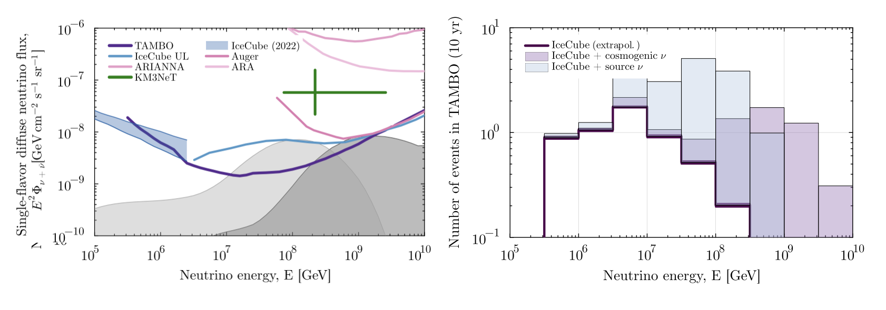
图注：\(\textbf{Left}\): Single flavor upper limits to a diffuse astrophysical flux for various experiments. The TAMBO line shows the 90$\%$ sensitivity. The darkened regions correspond to the two classes of neutrino source and cosmogenic models. \(\textbf{Right}\): The TAMBO full array expected neutrino events in 10 years assuming the IceCube astrophysical diffuse flux and various neutrino source and cosmogenic models.
对应解读：对应“建议重点查看的图表”第5项弥散通量灵敏度曲线，以及“关键图表逐图导读”中图5关于横轴能量、纵轴通量灵敏度、与 IceCube/Auger/ANITA/GRAND/POEMMA 等结果或预期比较的解读。
入选理由：这是候选图中最直接支撑日报核心结论的图：左 panel 给出 TAMBO 单味弥散天体中微子通量 90% 灵敏度，并与其他实验上限及源模型、宇宙成因模型同图比较；右 panel 给出 10 年观测下对 IceCube 弥散通量和不同模型的预期事件数。它能同时回答 TAMBO 在 1--1000 PeV 能段的灵敏度位置、可探测模型空间和预期统计量，是最值得嵌入的关键图。
来源与置信度：\(arxiv_source\)；high；\(arxiv_source\) / skeleton.tex:figure[1]
Fig03
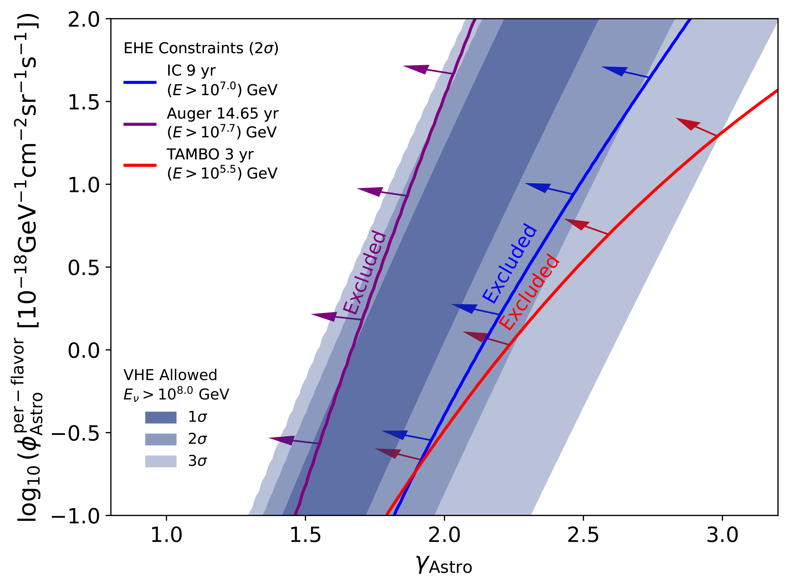
图注：Fit results of KM3NeT, IceCube, Auger data and TAMBO projected sensitivity to a single power law flux model. All results are fit assuming the 90$\%$ confidence level energy range of the KM3NeT VHE event.
对应解读：对应“模型拟合”段落中关于单幂律通量模型、通量归一化与谱指数拟合、以及与 KM3NeT、IceCube、Auger 数据和 TAMBO 预期灵敏度比较的内容。
入选理由：该图直接展示 KM3NeT、IceCube、Auger 数据与 TAMBO projected sensitivity 对单幂律通量模型的拟合结果，能支撑日报中关于通量模型约束、置信水平能区和跨实验联合解释的讨论。相比一般示意图，它更接近模型参数空间和灵敏度推断，适合用于说明 TAMBO 对高能天体中微子谱形的潜在约束。
来源与置信度：\(arxiv_source\)；high；\(arxiv_source\) / skeleton.tex:figure[3]
Fig02
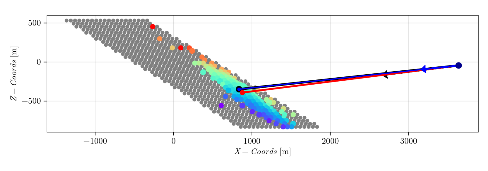
图注：An example of a well-reconstructed tau-induced air-shower with a TAMBO prototype array. The black arrow shows the reconstructed direction, while the blue arrow indicates the true direction, a separation of about 0.5$^\circ$. Colored dots represent detector units that registered hits, with the dot size proportional to the number of particles detected. The color of each dot corresponds to the particle arrival time, ranging from blue (earlier) to red (later) in the shower.
对应解读：对应“建议重点查看的图表”第1项探测器/空气簇射几何示意和第4项信号-背景判别图，以及“关键图表逐图导读”中关于重建方向、真实方向、时间拓扑和角分辨率的讨论。
入选理由：该图展示一个 tau 诱导空气簇射在 TAMBO 原型阵列中的重建实例，包括真实方向、重建方向、探测单元命中强度和到达时间梯度，可直观看出约 0.5 度的方向重建能力和阵列时空拓扑信息。虽然它不是完整的山谷几何或背景通过率曲线，但在候选图中最能支撑角分辨率、事件重建和信号拓扑判别相关解读。
来源与置信度：\(arxiv_source\)；high；\(arxiv_source\) / skeleton.tex:figure[2]
强相关工作
TAMBO 与一系列利用 \(\tau\) 出射空气簇射的实验和方案密切相关。Auger 已经用地球掠入 \(\nu_\tau\) 搜索给出超高能中微子限制；ANITA 曾报告过异常上行事件，引发对 \(\tau\) 空气簇射、新物理和背景解释的讨论；GRAND、BEACON、Trinity、POEMMA 等则分别从射电、山地射电、成像切伦科夫或空间观测角度推进类似能段。检索关键词可用 “Earth-skimming tau neutrino”, “tau air shower”, “mountain-based neutrino telescope”, “PeV neutrino point source sensitivity”。
基础理论方面，应联系高能中微子产生机制、宇宙线源模型和味振荡。检索关键词包括 “astrophysical neutrino flavor ratio”, “cosmogenic neutrinos”, “neutrino-nucleon cross section PeV EeV”, “tau energy loss rock”。潜在张力包括 IceCube 弥散谱在不同事件通道中的谱指数差异、候选点源关联显著性不足、ANITA 异常事件解释、以及未来实验之间对 \(\mathrm{PeV}\)--\(\mathrm{EeV}\) 通量预期的差异。
相似工作：
- https://arxiv.org/abs/1810.09994
- https://arxiv.org/abs/1909.00840
- https://arxiv.org/abs/2002.06475
- https://arxiv.org/abs/2008.10410
基础理论 / 方法工作：
- https://arxiv.org/abs/1304.5356
- https://arxiv.org/abs/1311.5238
- https://arxiv.org/abs/1507.05613
- https://arxiv.org/abs/1807.08816
相反观点 / 张力线索：
- https://arxiv.org/abs/1603.05218
- https://arxiv.org/abs/1803.05088
- https://arxiv.org/abs/1811.07261
9. Long thermonuclear burst driven thermal-viscous instability of accretion disk: triggering an outburst-like X-ray flare
- 来源：arXiv / astro-ph.HE
- 链接：https://arxiv.org/abs/2606.11544v1
- 作者：Wenhui Yu, Zhaosheng Li, Yuanyue Pan, Yanan Wang, Erlin Qiao
- 评分：novelty 8/10，importance 7/10，relevance 8/10，final 8.65/10
- 推荐理由：NICER/MAXI观测显示长热核X射线暴触发或调制吸积盘热黏不稳定并产生类爆发耀发，给出清晰观测证据，对中子星X射线暴与吸积盘耦合值得阅读。
中文题目：Long thermonuclear burst driven thermal-viscous instability of accretion disk: triggering an outburst-like X-ray flare
做了什么：本文研究中子星低质量 X 射线双星 MAXI J0911--655 中一次长持续时间热核 X 射线爆发及其后约一天出现的 outburst-like X 射线耀发。作者结合 MAXI 触发和长期监测、NICER 高时间分辨率光变与时间分辨能谱，发现爆发前源处于低/硬态，爆发冷却尾具有约 43 分钟衰减时间、约 1.1×10^{-4} erg \(cm^{-2}\) fluence 和约 1.2×10^{42} erg 总能量。随后持久幂律通量从约 0.27×10^{-9} 增至 1.4×10^{-9} erg \(cm^{-2}\) \(s^{-1}\)，光子指数由约 1.7 软化到约 2.2，并在衰减后回到低/硬态。作者据此提出，长爆发强辐照放大了吸积盘热黏滞过程，触发 inside-out 加热前沿，短暂提高了吸积率。
为什么重要：这篇论文重要之处在于，它给出了一个可能的因果链：低/硬态基线中的长热核爆发释放约 10^42 erg 能量，强辐照作用于吸积盘，约一天后出现幂律通量约 5 倍增强和谱软化，随后系统返回低/硬态。这个链条若经受住模型选择、残差和系统误差检验，将把 I 型爆发从“中子星表面诊断工具”扩展为“吸积盘响应实验”的触发源。它也为热黏滞不稳定模型提供了一个外部脉冲加热的自然实验，可用于约束盘辐照效率、加热前沿传播和中子星 LMXB 的谱态滞后行为。
理论 / 观测 / 仪器方法价值：本文的价值在于把热核爆发物理和吸积盘不稳定物理放在同一个可观测事件链中检验。观测上，它提供了 MAXI 触发、NICER 跟进、分能段光变、时间分辨光谱和谱态相图的组合证据；理论上，它把爆发能量、点火柱深、盘辐照和加热前沿传播时标联系起来；方法上，它提醒读者不能把爆发后的所有通量变化都归入黑体冷却尾，而必须分解黑体和持久幂律成分并检查残差。若结论稳健，这将是热核爆发直接调制周围吸积盘动力学的一个有力案例。
为什么应该关注：值得关注这篇论文，是因为它讨论的是一个跨尺度反馈问题：中子星表面几十分到几小时的核燃烧事件，是否能在一天尺度上改变吸积盘的黏滞状态和质量输运率。这样的反馈若普遍存在，会影响我们用爆发冷却尾推断中子星半径、用持久通量估计吸积率、以及用光变状态分类理解 LMXB outburst 的方式。对观测者而言，本文也说明快速跟进长爆发非常重要，因为关键的吸积响应可能不在爆发峰值，而在爆发后数小时到数天出现。
展开详细解读：文章讲解、背景、理论、重点章节、图表与相关工作
文章详细讲解
本文的科学问题可以表述为：一次长持续时间热核爆发能否在可观测时间尺度上改变中子星 LMXB 的吸积盘动力学？作者选择 MAXI J0911--655 的原因是事件时序非常有辨识度：爆发前源处于稳定低/硬态，MAXI 触发长爆发后 NICER 捕捉冷却尾，约一天后又出现 outburst-like flare，并在耀发期间呈现持久幂律通量增强与谱软化。这使得论文不是单纯测量一个长爆发，而是在寻找热核爆发和吸积盘不稳定之间的因果链。
方法上，论文把多仪器光变和时间分辨能谱结合起来。MAXI 提供爆发触发、长期 2--20 keV 监测和与探测阈值有关的全局背景；NICER 提供 MJD 58991--59006 之间高时间分辨率的 0.5--10 keV 光变、软硬能段硬度比和分阶段能谱。光谱拟合采用吸收黑体加幂律的两成分模型，并按 A--D 等时间区间比较爆发冷却、耀发峰值和耀发衰减阶段的成分变化。读者应重点确认：黑体成分主导的是爆发冷却尾，幂律分量增强的是延迟耀发，而二者在时间上和光谱上可分离。
关键结果有三层。第一，长爆发本身的量级：指数衰减时间约 43 分钟，fluence 约 1.1×10^{-4} erg \(cm^{-2}\)，按距离换算总能量约 1.2×10^{42} erg，点火柱深约 0.1×10^{12} g \(cm^{-2}\)。第二，爆发后约一天发生再增亮，且不是简单热冷却延续，因为幂律通量从爆发前约 0.27×10^{-9} erg \(cm^{-2}\) \(s^{-1}\) 增至峰值约 1.4×10^{-9} erg \(cm^{-2}\) \(s^{-1}\)。第三，耀发峰值伴随 Γ 从低/硬态的约 1.7 增至约 2.2，随后通量下降、谱重新变硬，形成类似中子星 LMXB outburst 的 hysteresis 轨迹。
解释上，作者倾向于长爆发辐照放大盘的热黏滞过程。这个解释需要同时满足能量、时间和谱态三项条件：爆发能量足以给盘表面提供显著辐照；约一天的延迟与盘内某一半径的热时标或加热前沿传播时标同量级；谱态演化与吸积率增强一致。若只满足前两项而没有幂律通量和 Γ 的协同变化，则解释会弱很多；若只看到谱变软但无爆发前后的明确时序联系，也难以支持“热核爆发触发”。
局限性也很明确。摘要没有说明是否做了严格的偶然性概率估计，即在源长期活动中，爆发后一日内自然发生耀发的先验概率有多小；也没有在摘要层面给出不同光谱模型，例如 Comptonization 模型、反射模型或可变持久因子 \(f_a\) 模型的比较。下一步更强的修复方向包括：用 NICER 全部时间段做统一层级拟合，显式允许持久分量归一化变化；用盘辐照温度与加热前沿传播速度估计可触发半径；比较该源其他 MAXI 触发爆发或长期 outburst 片段，以排除普通吸积随机性。
关键结果是怎么做出来的
第一项主结果是长持续时间热核爆发的定量识别。事件由 MAXI 在 2020 May 22，即 MJD 58991.7101 触发，NICER 随后观测到冷却尾。作者从时间分辨光谱得到约 43 分钟的指数衰减时间、约 1.1×10^{-4} erg \(cm^{-2}\) 的 fluence、约 1.2×10^{42} erg 的总能量和约 0.1×10^{12} g \(cm^{-2}\) 的点火柱深。这些数值共同支持“长爆发”而非普通短 I 型爆发。需要在 Fig.06 中核查 Cumming 模型是否确实拟合了 MAXI 衰减点，以及峰值时刻取 MAXI trigger time 对 fluence 和 τ 的影响。
第二项主结果是爆发后约一天的异常再增亮。根据 Fig.01 和 Fig.02，NICER 0.5--10 keV 光变在爆发冷却尾后不是简单回到基线，而是在约一天后进入 outburst-like flare。这里的数据样本不是大量源的统计样本，而是单源单事件的时序链，因此证据强度主要来自时间连续性、多能段一致性和谱成分分离。读者应检查 A--D 区间的定义是否覆盖了爆发尾、耀发峰和衰减，且没有把观测间隙中的未知行为错误插值为连续演化。
第三项主结果是持久幂律分量显著增强。摘要给出的关键数值是：爆发前幂律通量约 0.27×10^{-9} erg \(cm^{-2}\) \(s^{-1}\)，耀发峰值约 1.4×10^{-9} erg \(cm^{-2}\) \(s^{-1}\)，增强因子约 5.2。Fig.04 应显示 \(F_pow\) 随时间上升并随后下降，Fig.05 应显示在耀发阶段幂律分量对 0.5--10 keV 能谱的贡献。这个结果比总光变增亮更重要，因为它把现象定位到吸积相关成分，而不是中子星表面黑体冷却。
第四项主结果是谱软化和类似 outburst 的 hysteresis。爆发前低/硬态 Γ≈1.7，耀发峰值 Γ≈2.2，随后通量衰减且谱变硬。Fig.08 的 F_pow--Γ 轨迹用箭头表示从低通量硬谱到高通量软谱再回到低通量硬谱。统计上，读者应检查 Γ 的误差条、Γ 与幂律归一化的协方差，以及改变黑体分量处理方式后 Γ 变化是否仍存在。如果 Γ 的变化只在某一个模型下出现，而 Comptonization 或可变 \(f_a\) 模型下消失，则 hysteresis 解释会变弱。
第五项主结果是物理解释：长爆发辐照放大正在进行的热黏滞吸积过程，驱动 inside-out heating front，暂时提高内盘质量输运率。这个解释依赖模型比较而非直接成像，因此必须看时间尺度和能量预算。约一天延迟需要与盘热时标或加热前沿传播时标相容；耀发辐射能量不能超过爆发可通过盘吸收和吸积释放提供的合理能量范围；返回基线低/硬态则说明这不是一次普通长 outburst 的开始，而是短暂增强。
主要系统误差包括 MAXI/NICER 交叉定标、吸收柱密度固定或自由选择、背景处理、能带外推到 bolometric flux 的方式、距离 9.45 kpc 对能量和半径的缩放，以及爆发尾与持久分量的混叠。稳健性检验应包括：更换能谱模型、移除早期/晚期低信噪点、改变时间分箱、允许持久分量按 \(f_a\) 缩放、比较 χ^2_ν 和残差结构，并检查同一源其他爆发是否也伴随类似延迟耀发。
背景知识
MAXI J0911--655 是一颗中子星低质量 X 射线双星，核心物理场景是低质量伴星通过洛希瓣溢出向中子星供质，物质在吸积盘中向内输运，最后在中子星表面形成富氢/氦燃料层。当燃料层在简并条件下达到点火柱深后，会发生 I 型热核 X 射线爆发。普通 I 型爆发持续几十秒到数分钟，而本文讨论的事件属于长持续时间热核爆发，衰减时间约 43 分钟、总能量约 10^42 erg，已经接近“中等长爆发/intermediate-duration burst”的能量尺度。
这类长爆发的重要性在于，它不只是中子星表面核燃烧的探针，也会对周围吸积环境施加一次强烈、短时但能量很高的辐照脉冲。传统上，爆发分析常把“爆发黑体辐射”和“持久吸积辐射”近似分开：前者来自中子星表面冷却，后者来自盘、边界层或热冕。但近十余年的研究不断显示，强爆发会改变持久辐射分量，例如增强吸积流、冷却热冕、改变反射谱，甚至在极端情况下反馈到吸积盘的热黏滞状态。本文的特别之处是报告了长爆发之后约一天出现的 outburst-like X 射线耀发，而不是仅在爆发期间看到瞬时持久通量变化。
论文的观测动机来自一个时间序列异常：爆发前源处于低/硬态，幂律谱占主导，光子指数约 Γ≈1.7，估计吸积率约为 Eddington 的 1%；MAXI 在 MJD 58991.7101 触发长爆发，NICER 随后跟进，爆发冷却尾结束后约一天，0.5--10 keV 光变又重新增亮，并伴随幂律通量从约 0.27×10^{-9} erg \(cm^{-2}\) \(s^{-1}\) 增至 1.4×10^{-9} erg \(cm^{-2}\) \(s^{-1}\)，同时 Γ 增至约 2.2。这种“延迟的、谱变软的、随后回落到低/硬态”的行为，使作者将其解释为爆发辐照触发或放大了盘的热黏滞不稳定，而非普通爆发尾部的简单延长。
阅读时需要避免几个常见误区。第一，不能把所有爆发后增亮都归因于中子星表面冷却；若光谱中黑体分量下降而幂律分量上升，就更像吸积成分变化。第二，不能仅凭光变形状判断“爆发触发吸积盘不稳定”，还要看延迟时间、能量预算、谱态演化和残差是否支持。第三，低/硬态到高/软态的转变在中子星 LMXB 中通常与吸积率提高有关，但本文事件的触发源是否一定是爆发辐照，需要依赖时序偶然性、盘热时标、同源其他爆发对比和系统误差检验。第四，MAXI 与 NICER 的能段、采样和灵敏度不同，长期 MAXI 光变中的不可探测不等于源完全没有活动，读者应把探测阈值纳入解释。
基础理论 / 方法脉络
最基本的物理图像是：吸积盘把引力势能转化为辐射，中子星表面又把累积的核燃料转化为热核爆发辐射。持久 X 射线通量通常追踪平均吸积率，低/硬态中高能幂律成分强，可能来自热电子 Compton 化、边界层或热内流；热核爆发则常用吸收黑体加持久成分来描述，黑体温度和归一化随时间下降构成“冷却尾”，这是 I 型爆发识别的关键证据。
对于长爆发，点火柱深 y 是连接观测能量和核燃烧层的核心量。若爆发总能量为 \(E_b\)，恒星半径为 R，核能释放为 \(Q_nuc\)，则量级上有 \(E_b\)≈4πR^2 y \(Q_nuc/(1+z)\)，其中 1+z 是引力红移因子。本文摘要给出的点火柱深约 0.1×10^{12} g \(cm^{-2}\)，爆发总能量约 1.2×10^{42} erg，说明燃料层比普通短爆发更深，冷却时标自然更长。Cumming 等长爆发冷却模型通常把爆发后的热扩散冷却尾与柱深和热结构联系起来，本文 Fig.06 就应是检验这一路径的关键图。
光谱分析上，论文使用类似 Tbabs*(bbodyrad+powerlaw) 的经验模型。Tbabs 描述星际吸收，bbodyrad 描述近似黑体的爆发表面辐射，powerlaw 描述持久吸积相关的非热或 Compton 化分量。拟合输出包括黑体通量 \(F_bb\)、温度 \(kT_bb\)、表观半径 \(R_bb\)、幂律光子指数 Γ、幂律通量 \(F_pow\) 以及 χ^2_ν。本文最关键的诊断不是某一个参数，而是这些参数的协同演化：爆发尾部应表现出 \(F_bb\) 与 \(kT_bb\) 冷却，而 outburst-like flare 的证据则来自 \(F_pow\) 增强和 Γ 变大。
盘热黏滞不稳定的基础是氢电离导致的不透明度和黏滞状态跃迁。冷态盘黏滞低、质量堆积，热态盘黏滞高、质量快速向内输运；外部强辐照可以提高盘表面温度，使某些半径跨过临界温度并触发加热前沿。本文提出的图像是：长爆发提供强辐照，放大原本正在进行或接近临界的热黏滞吸积过程，驱动 inside-out heating front，使内盘吸积率暂时上升，于是一天后出现类似小型 outburst 的 X 射线耀发。
主要退化和系统误差包括：吸收柱密度 \(N_H\) 与软 X 射线黑体温度的退化，黑体半径与距离、色修正因子的退化，幂律指数 Γ 与黑体尾部在 NICER 低能段内的成分混叠，MAXI 触发时刻与真正爆发峰值之间的采样误差，以及把 0.5--10 keV 通量外推为 bolometric flux 时的能带校正误差。若这些误差没有控制，可能把爆发冷却尾误判为持久分量增强，或把普通吸积波动误判为爆发触发的不稳定。
公式与推导
从吸积能量标度开始，若中子星质量和半径为 M、R，持久光度与吸积率的关系可写为
这里忽略了广义相对论修正和各向异性。本文爆发前估计 \(\dot M\sim 0.01\dot M_{\rm Edd}\)，因此低/硬态的持久幂律通量可视为低吸积率基线。
观测通量与光度的换算为
其中 \(d\) 是距离，\(F_{\rm bol}\) 是宽能段或 bolometric 通量，\(\xi\) 表示各向异性因子；若取各向同性则 \(\xi=1\)。摘要给出的 burst fluence \(f_b\approx1.1\times10^{-4}\,\rm erg\,cm^{-2}\) 与距离可给出爆发总能量
论文给出约 \(1.2\times10^{42}\) erg，读者应检查距离、能带外推和各向异性假设。
热核爆发燃烧层的能量守恒给出点火柱深的量级估计：
其中 \(y\) 是柱深，\(Q_{\rm nuc}\) 是单位质量核能释放，\(1+z=(1-2GM/Rc^2)^{-1/2}\) 是表面引力红移因子。因此
这就是把观测 fluence 与点火深度联系起来的核心公式。本文的 \(y\approx0.1\times10^{12}\,\rm g\,cm^{-2}\) 应与所取 \(Q_{\rm nuc}\)、距离和红移共同核查。
爆发冷却尾常用指数近似或热扩散模型刻画。经验上可写成
其中 \(\tau\approx43\) 分钟是摘要给出的衰减时间，\(F_{\rm base}\) 是基线或残余持久通量。更物理的 Cumming 型模型把热扩散时标与柱深、热容和热导率联系起来，近似可理解为
其中 \(C_P\) 为比热，\(K\) 为热导率，\(\rho\) 为密度；深层点火对应更长冷却尾。
能谱拟合的观测模型为
其中 \(N_{\rm H}\) 是吸收柱密度，\(B_E\) 为黑体谱，\(K_{\rm bb}\) 与表观半径相关，\(A\) 和 \(\Gamma\) 是幂律归一化与光子指数。黑体归一化常写为
因此 \(R_{\rm bb}\) 的变化不应直接解释为真实半径变化，还受色修正、各向异性和成分混叠影响。
对于计数谱，模型计数率应通过仪器响应折叠：
其中 \(R_i(E)\) 是响应矩阵，\(C_i^{\rm bkg}\) 是背景。若每个能道计数足够高，可用
评估拟合；低计数时应优先使用 Poisson C-stat。本文图中给出 \(\chi_\nu^2\)，读者应关注关键阶段是否有系统残差。
盘辐照触发热前沿的数量级条件可写为
若某半径处 \(T_{\rm irr}\) 超过氢电离相关临界温度 \(T_{\rm crit}\)，则冷盘可能进入热态。加热前沿传播时间可估计为
其中 \(\alpha\) 是 Shakura-Sunyaev 黏滞参数，\(c_s\) 是声速，\(H\) 是盘厚度。本文约一天延迟是否合理，就应与这个传播/热时标比较。
最后，耀发期间幂律通量增强可用相对变化检验：
同时 \(\Delta\Gamma\approx2.2-1.7=0.5\)。如果 \(\mathcal R_F\) 和 \(\Delta\Gamma\) 在统计误差、交叉定标和模型选择误差之外仍显著，则支持吸积状态真实变化，而不是单纯黑体尾部拟合泄漏。
模型拟合 / 应用方法
本文的核心拟合对象有两类：一类是长爆发冷却尾的时间演化，另一类是不同阶段的 X 射线能谱。冷却尾拟合给出衰减时间、fluence、总能量和点火柱深；能谱拟合给出黑体和幂律分量的分解，进而判断再增亮是否来自吸积相关持久辐射。读者应把这两类拟合视为相互约束：若冷却尾已经衰退，而幂律分量独立上升，则 outburst-like flare 的解释才成立。
能谱模型为 Tbabs*(bbodyrad+powerlaw)。拟合量包括吸收柱密度 \(N_H\)、黑体温度 \(kT_bb\)、黑体归一化或表观半径 \(R_bb\)、幂律光子指数 Γ、幂律归一化以及各分量通量。图 4 给出这些参数随时间的演化，图 5 给出分阶段谱和残差。需要确认 \(N_H\) 是固定还是自由；若固定，所取值的系统误差会影响软 X 射线黑体和 Γ；若自由，不同时间段 \(N_H\) 的非物理波动可能吸收掉模型缺陷。
似然或统计量方面，图中报告 χ^2_ν，说明至少部分谱可能采用 χ^2 拟合。读者应检查每个谱是否有足够计数并合理分组，否则 Poisson C-stat 更适合。模型比较不能只看 χ^2_ν 接近 1，还要看残差是否有结构：软端连续残差可能意味着吸收或校准问题，中高能端残差可能意味着幂律不是充分的 Comptonization 描述，爆发峰值附近残差可能要求可变持久分量或反射成分。
参数退化是本研究的关键风险。\(kT_bb\) 与 \(R_bb\) 通过黑体通量 \(F\propto R_{\rm bb}^2 T^4\) 强相关；Γ 与幂律归一化也强相关，尤其在 0.5--10 keV 窄能段内；黑体高能尾和软幂律低能端会互相补偿。若耀发峰值的 Γ 变软只是因为模型把残余黑体尾误分配给幂律，则 F_pow--Γ hysteresis 会被夸大。因此 Fig.05 的残差和成分显著性是比单个参数表更重要的诊断。
冷却尾模型拟合需要关注峰值缺测和基线选择。论文使用 MAXI trigger time 作为 burst peak time；如果真实峰值早于或晚于触发时刻，指数衰减时间和 fluence 会偏移。Cumming 模型可把冷却曲线映射到柱深，但该映射依赖中子星半径、质量、组成、热导率、红移和距离。建议读者查看是否给出参数误差、是否讨论距离 9.45 kpc 的影响，以及是否将 persistent flux 从爆发通量中扣除。
系统误差还包括 MAXI 与 NICER 的交叉定标和能带差异。MAXI 的 2--20 keV 一日平均光变适合捕捉触发和长期状态，但不如 NICER 适合软 X 射线谱分解；NICER 背景和低能校准则会影响 0.5--3 keV 的黑体判断。稳健拟合应尝试不同时间分箱、不同背景、固定/释放 \(N_H\)、加入 \(f_a\) 持久增强因子、用 nthcomp 替代 powerlaw、剔除低信噪时段，并检查 \(F_pow\) 增强和 Γ 软化是否保持。
重点章节 / 结果段落怎么读
-
Introduction：重点读作者如何界定“热核爆发影响吸积流”这一问题，以及他们是否区分了爆发期间的瞬时持久通量变化和爆发后一天的盘不稳定响应。引言中的相关工作可帮助判断本文声称的“直接调制吸积动力学”到底有多新。
-
Observations and data reduction：重点检查 MAXI 与 NICER 数据的时间覆盖、能段、筛选条件、背景处理、响应文件生成和时间分箱。本文结论依赖爆发后约一天再增亮，任何观测间隙、背景耀斑或探测阈值处理都可能影响时序解释。
-
Light-curve analysis：重点读 Fig.01 和 Fig.02 所在段落，确认爆发触发、NICER 跟进、A--D 时间区间、硬度比变化和 outburst-like flare 的定义。这里要把“总通量上升”与“谱态变化”分开记录。
-
Time-resolved spectroscopy：这是最重要的结果章节。逐项记录 Tbabs*(bbodyrad+powerlaw) 的参数：\(F_bb\)、\(kT_bb\)、\(R_bb\)、Γ、\(F_pow\)、χ^2_ν，以及不同阶段黑体/幂律成分的显著性。Fig.04 和 Fig.05 应与表格参数交叉核对。
-
Burst cooling and ignition modeling：阅读 Fig.06 相关段落，确认使用 Cumming 等模型时的输入假设，包括峰值时间、距离、各向异性、核能释放、基线通量和不确定度。点火柱深和总能量是后续辐照盘解释的能量基础。
-
Discussion and conclusion：重点看作者如何把约一天延迟、幂律通量增强、Γ 软化和返回基线组合成 thermal-viscous instability 图像。应特别标出作者承认的局限：单事件、模型非唯一、系统误差以及是否缺少严格偶然性概率估计。
建议重点查看的图表
-
长期与短期光变图：检查 MAXI 2--20 keV 一日平均光变、NICER 0.5--10 keV 64 s 光变、爆发触发时刻、探测阈值和长期 outburst 起止标记。重点看爆发前是否确实低/硬且接近基线，爆发后再增亮是否在时间上孤立。
-
分能段光变与硬度比：检查 0.5--3 keV、3--10 keV 以及硬度比随时间的变化。真正的谱态演化应在硬度比中有对应信号，而不仅是总计数率上升。A--D 区间的划分要与后续能谱提取严格对应。
-
时间分辨光谱参数演化：检查 \(F_bb\)、\(kT_bb\)、\(R_bb\)、Γ、\(F_pow\)、χ^2_ν 随时间的曲线。爆发冷却尾应表现为黑体冷却，outburst-like flare 应表现为幂律通量上升和 Γ 变软；若 χ^2_ν 在关键阶段异常偏高，模型解释要谨慎。
-
分阶段能谱和残差图：检查 Tbabs*(bbodyrad+powerlaw) 对 A--D 区域的拟合、黑体/幂律分量分解和残差结构。重点看耀发尾部黑体是否真的不显著，以及是否存在软能段系统残差导致 Γ 被高估。
-
长爆发冷却模型拟合图：检查 Cumming 等模型对 MAXI 衰减通量的拟合。重点看峰值时间假设、指数衰减时间、早期缺测、尾部偏离和柱深估计的不确定度。
-
F_pow--Γ 关系图：检查演化箭头是否形成低通量硬谱到高通量软谱再回到低通量硬谱的闭合或准闭合循环。注意区分真正的 hysteresis 与同一模型参数误差椭圆造成的相关性。
-
拟合优度和参数置信区间表：若正文或附表给出，应查看 \(N_H\)、kT、\(R_bb\)、Γ、通量和 χ^2/dof 的误差。核心结论依赖通量增加约 5 倍和 Γ 变化约 0.5，必须确认误差条远小于变化幅度。
-
能量预算或盘不稳定示意诊断：若论文有相关图表，应核查爆发辐照能量、盘吸收比例、热时标和耀发辐射能量是否在数量级上自洽。
关键图表逐图导读
图 1：这是全局时序入口图，横轴应为 MJD，纵轴为 MAXI 与 NICER 的 X 射线强度或通量/计数率。需要先看 MAXI 的一日平均 2--20 keV 长期光变、NICER 的 64 s 0.5--10 keV 光变，以及红色竖虚线标记的 MAXI 爆发触发时刻。蓝色水平虚线是 MAXI 探测阈值，读者不能把阈值以下的空白误读为源完全静止。此图的陷阱是多仪器能段不同、采样不同：MAXI 长期趋势用于背景定位，NICER 才是爆发后细节的主要依据。
图 2：这是 NICER 在 MJD 58991--59006 期间的分能段光变和硬度图。纵向从 0.5--10 keV 总光变、0.5--3 keV 软能段、3--10 keV 硬能段到硬度比 3--10/0.5--3 keV。重点是 A、B、C、D 时间区间如何定义：它们将直接决定后续 Fig.05 的能谱抽取。若再增亮主要出现在软能段且硬度下降，支持谱软化；若硬度比误差很大或受背景影响，则谱态判断需要回到能谱拟合。
图 4：这是本文最核心的时间分辨光谱参数图，横轴为时间，纵轴依次包括黑体 bolometric flux、\(kT_bb\)、\(R_bb\)、Γ、幂律 bolometric flux 和 χ^2_ν。读法是先跟踪爆发冷却尾：\(F_bb\) 和 \(kT_bb\) 应随时间下降；再看竖虚线附近幂律通量开始上升，是否与 Γ 增大同步。红圈、绿方块、灰菱形代表不同阶段，蓝菱形代表 MAXI survey 数据。陷阱是 \(R_bb\) 的表观变化可能由色修正或成分退化导致，不宜过度物理解释；χ^2_ν 若在某些点偏高，则对应参数的可信度下降。
图 5：这是 0.5--10 keV 吸收后最佳拟合谱与残差图，模型为 Tbabs*(bbodyrad+powerlaw)，按 A--D 区域排列。应检查每个阶段数据点、总模型线、黑体分量、幂律分量和残差。A/B 阶段若黑体显著，符合爆发尾；C 阶段若幂律增强并贡献主导，支持 outburst-like flare；D 阶段图注指出黑体不显著，说明耀发尾部可能主要由持久吸积成分控制。主要陷阱是 NICER 低能响应、\(N_H\) 和黑体温度之间的退化，可能在软端产生系统残差。
图 6：这是长爆发衰减通量与 Cumming 等模型的拟合图。横轴应为相对 MAXI 触发时刻的时间，纵轴为爆发衰减通量，红点为 MAXI 数据，模型线给出冷却尾拟合。要看模型是否同时穿过早期高通量和后期衰减点，是否需要额外基线项，以及把 MAXI trigger time 当作 burst peak time 是否会影响 τ、fluence 和柱深。若峰值未被完整采样，能量和点火深度可能偏低或不确定度增大。
图 8：这是幂律通量与光子指数 Γ 的相图，箭头表示演化方向。横轴可能为 \(F_pow\)，纵轴为 Γ；红箭头描述从低通量硬谱到高通量软谱，灰箭头描述衰减回低/硬态。它是连接“耀发”与“outburst-like hysteresis”的关键图。读者应检查点的误差条和时间排序：若误差椭圆沿同一方向拉长，可能部分来自 Γ 与幂律归一化的拟合相关性；若趋势在多个时间段独立成立，则更能支持真实谱态循环。
论文原图 / 可嵌入图片
Fig04
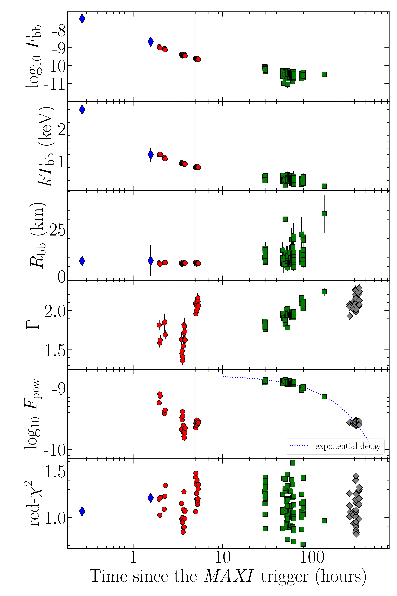
图注：The time-resolved spectroscopy of the long burst and outburst-like flare observed by \(\textit{MAXI}\) and \(\textit{NICER}.\) From top to bottom, we show the bolometric flux of \(\texttt{blackbody},\) $F_\mathrm{ bb}$; the blackbody temperature, $kT_\mathrm{bb}$, the blackbody radius, $R_{\rm bb}$, which were calculated at a distance of 9.45 kpc; the power-law index, $\Gamma$, the bolometric flux of power-law, $F_\mathrm{pow}$; and the goodness of fit per degree of freedom, $\chi_{\nu}^{2}$. Blue diamonds represent \(\textit{MAXI}\) survey data, while red circles denote \(\textit{NICER}\) observations of the burst cooling tail (ObsID 3030080101). Green squares and grey diamonds represent the peak and decay phases of the outburst-like flare, respectively. The vertical dashed line marks the initial rise of the power-law flux and the early onset of the flare.
对应解读：对应模型拟合段落与关键物理量演化：长爆冷却尾、爆发后耀发峰值/衰减阶段的时间分辨光谱参数。
入选理由：这是最核心的数据图之一，直接给出黑体通量、温度、半径、幂律光子指数、幂律通量和拟合优度随时间的演化，可同时支撑长时标热核爆发、约一天后幂律通量上升、谱软化以及耀发衰减回基线等主要结论。相比单纯光变图，它把观测现象与光谱成分、拟合质量联系起来，科学信息量最高。
来源与置信度：\(arxiv_source\)；high；\(arxiv_source\) / sample631.tex:figure[4]
Fig05

图注：The absorbed best-fit spectra and the residuals in 0.5--10 keV obtained by fitted with the model \(\texttt{Tbabs*(bbodyrad+powerlaw)}.\) From top to bottom: each spectrum from regions A--D with the best-fit models (solid lines), the \(\texttt{blackbody}\) component, the \(\texttt{powerlaw}\) component, and residuals of the best-fit models to the spectra, respectively. The \(\texttt{blackbody}\) component are insignificant in the spectra from region D (outburst-like flare tail).
对应解读：对应模型拟合检查：Tbabs*(bbodyrad+powerlaw) 的能谱分解、各阶段 A--D 的模型成分与残差诊断。
入选理由：该图直接展示吸收后最佳拟合谱、黑体和幂律分量以及残差，是判断光谱模型是否可靠、黑体成分在不同阶段是否显著、以及耀发尾部是否由幂律主导的关键证据。日报要求重点检查模型、残差和系统误差时，这张图比普通示意图更重要。
来源与置信度：\(arxiv_source\)；high；\(arxiv_source\) / sample631.tex:figure[5]
Fig02
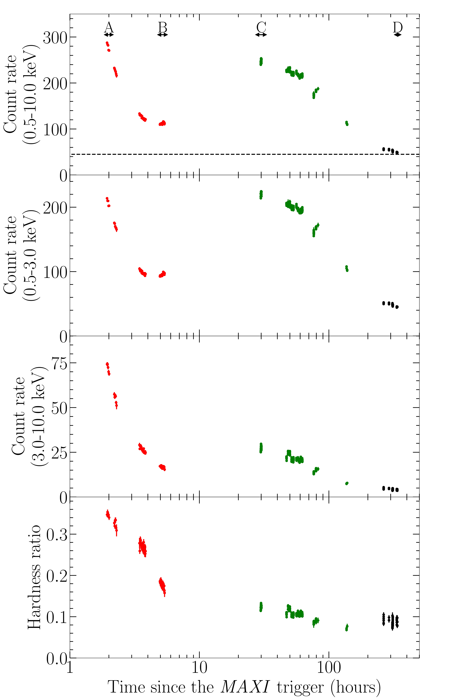
图注：The light curves and hardness of MAXI J0911--655 of \(\textit{NICER}\) observation between MJD 58991--59006. From top to bottom, we show the 64 s \(\textit{NICER}\) light curves in the energy range 0.5--10~keV, 0.5--3~keV, and 3--10~keV, and the hardness ratio between 3.0--10 and 0.5--3 keV, respectively. The time intervals of the regions A, B, C and D are represented.
对应解读：对应建议重点查看的主要数据图：NICER 在 MJD 58991--59006 期间的分能段光变与硬度比，并标出 A、B、C、D 时间区间。
入选理由：该图直接呈现爆发后约一天再增亮的时间结构，以及软硬能段和硬度比的演化，是识别长爆、outburst-like flare、峰值与尾部阶段划分的基础。它还为 Fig05 中 A--D 区域的光谱提取提供时间对应关系。
来源与置信度：\(arxiv_source\)；high；\(arxiv_source\) / sample631.tex:figure[2]
Fig06
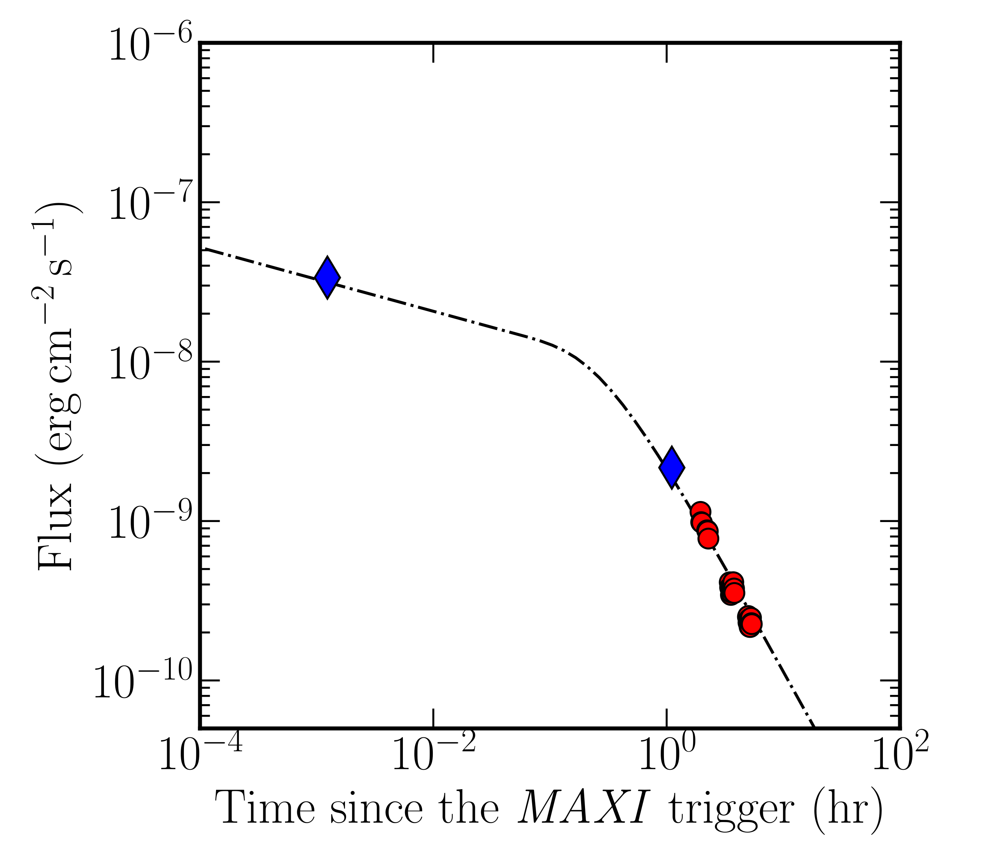
图注：The best-fitted burst decay flux by the model from \(\citet{Cumming04a}.\) We use the trigger time of \(\textit{MAXI}\) as the burst peak time. The red points represent the data from MAXI.
对应解读：对应长热核爆发模型拟合：使用 Cumming et al. 模型拟合爆发衰减通量。
入选理由：该图专门检验长爆冷却尾的衰减模型，是估计爆发指数衰减时间、柱深和能量释放等物理量的直接图形依据。它比概念示意图更能支撑论文关于长时标热核爆发性质的定量结论。
来源与置信度：\(arxiv_source\)；high；\(arxiv_source\) / sample631.tex:figure[6]
Fig08
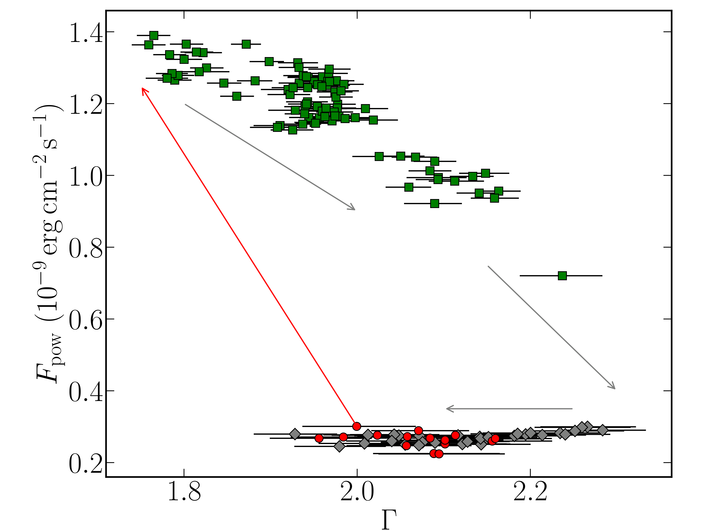
图注：Relations of power-law flux vs. the index $\Gamma$. The arrow indicates the direction of evolution. Red arrow: burst rise phase, the source evolves from a low/hard state (low flux, hard spectrum) to a high/soft state (high flux, soft spectrum). Grey arrow: outburst decay phase, the source returns from the high/soft state to the low/hard state (flux declines, spectrum hardens). The complete cycle illustrates the typical hysteresis behaviour of a NS LMXB outburst.
对应解读：对应谱态演化与耀发解释：幂律通量与光子指数 Γ 的关系及演化方向。
入选理由：该图直接展示幂律通量增强时 Γ 增大、随后通量下降并谱变硬的循环，可支撑论文关于从低/硬态到高/软态再返回低/硬态的 outburst-like hysteresis 行为。它紧扣摘要中“power-law flux increased”和“spectral softening”的核心结果。
来源与置信度：\(arxiv_source\)；high；\(arxiv_source\) / sample631.tex:figure[8]
Fig01
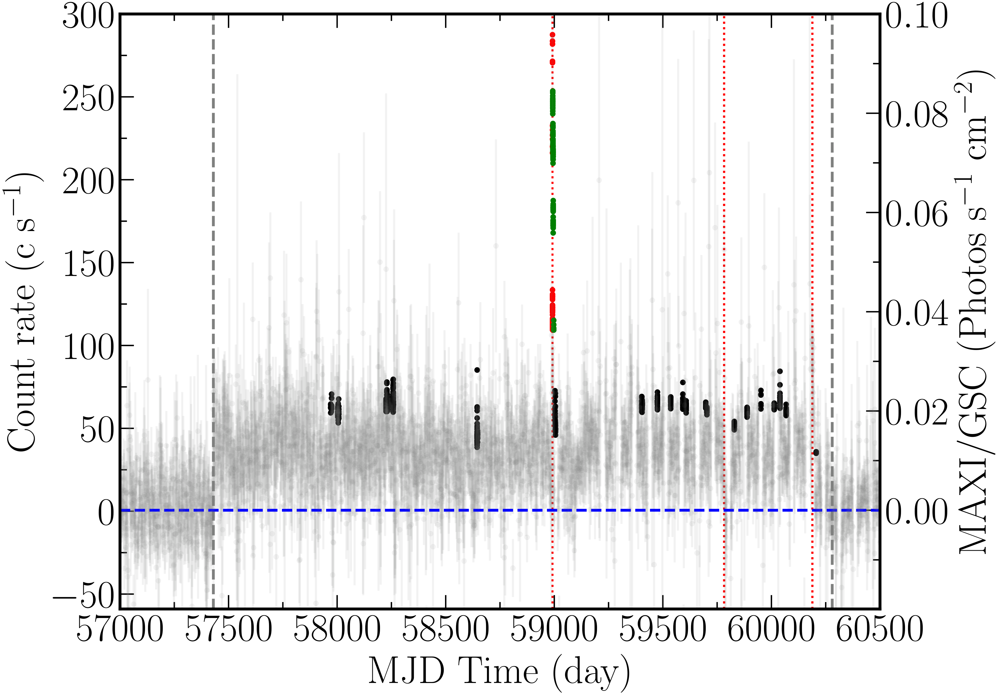
图注：Light curves of MAXI J0911--655 from \(\textit{MAXI}\) and \(\textit{NICER}\) observations. We show the \(\textit{NICER}\) light curve (64 s, 0.5--10~keV, black, red and green points) and the \(\textit{MAXI}\) light curve (one day averaged, 2--20~keV, gray points), where the red and green points represent the \(\textit{NICER}\) data of long X-ray burst and outburst-like flare, respectively. The vertical red dashed lines on MJD 58991.7101, 59782.1030 and 60188.5488 represents the \(\textit{MAXI}\) burst trigger time, respectively. The vertical gray dashed lines on MJD 57437 and 60280 represents the began and end time of outburst, respectively. The horizontal blue dashed line denotes the \(\textit{MAXI}\) instrumental detection threshold below which the source cannot be detected.
对应解读：对应主要观测背景图：MAXI 与 NICER 的长期和短期光变，标出 MAXI 爆发触发时刻、正常 outburst 起止和探测阈值。
入选理由：该图提供事件在长期监测中的位置和多仪器观测背景，有助于确认 MAXI 触发、NICER 跟进以及源在更长时间尺度上的活动状态。虽然定量光谱信息不如 Fig04/Fig05，但它是理解整篇论文观测时序的入口图。
来源与置信度：\(arxiv_source\)；high；\(arxiv_source\) / sample631.tex:figure[1]
强相关工作
检索相似工作时，第一条线索是“type I X-ray burst affects persistent emission”“variable persistent flux \(f_a\)”“burst-induced accretion enhancement”。这些研究通常讨论强热核爆发期间持久成分增强、盘反射、热冕冷却或 Poynting-Robertson drag 导致的瞬时吸积率变化。本文与这些工作的区别在于强调爆发后约一天的 outburst-like flare 和 thermal-viscous disk instability，因此需要比较时间尺度是否从秒-分钟扩展到小时-天。
第二条线索是长持续时间爆发和 intermediate-duration burst 的冷却模型，关键词包括“Cumming long X-ray burst cooling model”“ignition column depth”“superburst/intermediate burst neutron star LMXB”。这些基础工作提供从 fluence、冷却时间到点火柱深的转换框架，也帮助判断本文约 10^42 erg 和 10^11 g \(cm^{-2}\) 柱深是否处于合理范围。
第三条线索是低质量 X 射线双星的 disk instability model 和 irradiation-controlled outburst。可检索“thermal-viscous instability irradiated accretion disk neutron star LMXB”“inside-out heating front”。这些工作给出临界温度、黏滞参数、加热前沿速度和滞后行为的理论背景。本文声称长爆发辐照驱动 inside-out heating front，应与这些模型的时标和能量条件对照。
潜在张力或反例的检索路径包括：同一源 MAXI J0911--655 的其他爆发是否未触发耀发；其他中子星 LMXB 的长爆发是否只出现常规冷却尾；以及低/硬态源是否会在无爆发情况下自然发生短时增亮。若存在大量无触发案例，本文机制可能需要“盘已接近临界状态”这一附加条件，而不是任何长爆发都能触发 outburst-like flare。
相似工作：
（未提供）
基础理论 / 方法工作：
（未提供）
相反观点 / 张力线索：
（未提供）
10. A phase-coherent timing solution for the X-ray dim isolated neutron star eRASSU J131716.9-402647
- 来源：arXiv / astro-ph.HE
- 链接：https://arxiv.org/abs/2606.11291v1
- 作者：J. Kurpas, A. M. Pires, A. D. Schwope, F. Haberl, S. Sheth
- 评分：novelty 8/10，importance 7/10，relevance 8/10，final 8.65/10
- 推荐理由：NICER相干计时确认新的X射线暗孤立中子星，是二十多年首个新确认XDINS；对中子星热演化、磁场和X射线源分类有明确HE价值。
中文题目：eRASSU J131716.9-402647 的相干相位计时解：二十多年来首个新确认的 X 射线暗弱孤立中子星
做了什么：这篇文章用新的 NICER 观测结合此前 X 射线随访数据，对 eRASSU J131716.9-402647 做了相干相位计时和谱—时变分析。作者得到自旋周期约为 \(P\sim12.8\,\mathrm{s}\)、周期导数约为 \(\dot P\sim9\times10^{-14}\,\mathrm{s\,s^{-1}}\) 的计时解，由此推得偶极磁场约 \(3\times10^{13}\,\mathrm{G}\)、自转能损失率约 \(10^{30}\,\mathrm{erg\,s^{-1}}\)。同时，源的 X 射线谱以热辐射为主，15 个月监测中没有显著谱态变化，热光度很可能超过转动能损失，且双峰脉冲轮廓和能量依赖性类似经典 XDINS RX J1308.6+2127。综合来看，作者认为该源的 XDINS 身份已经得到明确确认。
为什么重要：XDINS 是一类样本极少、近邻、热辐射主导、通常没有强磁层非热辐射的孤立中子星，适合研究中子星冷却、表面热斑、强磁场大气和长期磁热演化。过去二十多年几乎没有新增确证成员，因此 eRASSU J131716.9-402647 若被稳健纳入样本，会直接改变这个小族群的统计基线。
理论 / 观测 / 仪器方法价值：这篇工作的价值不只是给一个新源贴标签，而是给出了相干计时解、\(\dot P\)、磁场、自转能损失率、热光度和能量依赖脉冲轮廓等一整套可用于理论比较的物理量。对理论而言，它提供了磁热演化和过去再加热的约束；对观测而言，它展示了 eROSITA 发现源与 NICER 高时间分辨率随访结合确认 XDINS 的路线；对方法而言，它强调了长周期弱脉冲源必须通过相干相位连接来避免周期混叠。
为什么应该关注：如果你关心中子星冷却曲线、强磁场表面辐射输运、磁场衰减加热或近邻中子星普查，这个源都值得跟踪。它的 \(P\)、\(\dot P\)、热光度与脉冲形态处在 XDINS 与高磁场射电脉冲星、低活动磁星之间的关键区域，能帮助判断这些看似不同的中子星族群是否只是磁热演化轨迹上的不同阶段。
展开详细解读：文章讲解、背景、理论、重点章节、图表与相关工作
文章详细讲解
科学问题：eRASSU J131716.9-402647 最初因为软的、近似热的 X 射线辐射和长自旋周期而被认为是 XDINS 候选体，但 XDINS 的确认不能只靠“软谱加长周期”。真正关键的是它是否表现为稳定的热辐射源、是否有可相干追踪的自旋减慢、其转动能损失是否不足以供给观测到的热 X 射线光度，以及脉冲轮廓是否符合由强磁场中子星表面温度分布和大气辐射束形控制的图像。本文的核心问题就是：这个 eROSITA 发现的源是否确实属于长期停滞增长的 XDINS 家族，而不是一个暂时软化的磁星、特殊的高磁场射电脉冲星或其他紧致源。
作者怎么做：论文引入新的 NICER 观测，并与此前 X 射线随访数据合并，覆盖约 15 个月的时间基线。对一个 \(P\sim12.8\,\mathrm{s}\) 的弱 X 射线脉冲源来说，单次观测测得周期并不够，必须在不同历元之间保持整数脉冲周数不丢失，也就是获得 phase-coherent timing solution。作者通过搜索和拟合 \(P\) 与 \(\dot P\)，找到了能够同时解释全部到达时间或相位测量的自旋演化解。与此同时，他们做了能谱拟合，检验黑体或相关热模型参数是否随时间变化，并按能段分析脉冲轮廓和脉冲分数。
关键结果：得到的相干计时解给出 \(P\sim12.8\,\mathrm{s}\) 与 \(\dot P\sim9\times10^{-14}\,\mathrm{s\,s^{-1}}\)。在标准磁偶极制动近似下，这对应表面偶极磁场 \(B_{\rm dip}\sim3\times10^{13}\,\mathrm{G}\)，特征年龄约在百万年量级，自转能损失率约 \(\dot E\sim10^{30}\,\mathrm{erg\,s^{-1}}\)。谱分析显示 15 个月内没有显著谱态变化，且热 X 射线光度很可能大于 \(\dot E\)，说明辐射能量不可能主要来自当前自转能，而应与中子星余热、磁场衰减或过去再加热有关。脉冲轮廓呈双峰，且脉冲分数随能量升高而增加，这与 XDINS RX J1308.6+2127 的行为相似，进一步支持表面非均匀温度分布和强磁场辐射束形的解释。
局限和下一步：摘要能确认的是一阶物理图像，但许多关键细节仍需要更长时间基线和更高信噪比来收紧。比如 \(\dot P\) 是否长期稳定、是否存在计时噪声或未解析的 glitch，热谱是否需要多温黑体、磁化大气模型或吸收线，距离和星际吸收不确定性如何影响热光度，都是后续工作需要继续推进的方向。最有价值的下一步包括继续 NICER 或 XMM-Newton 监测以检验相干解、获得更深的 XMM-Newton 或 Chandra 谱以寻找质子回旋或原子跃迁吸收特征，以及通过光学/紫外深度观测限制瑞利—金斯尾和距离。
关键结果是怎么做出来的
本文最重要的证据链从样本选择开始：eRASSU J131716.9-402647 是 eROSITA 全天巡天中发现的软 X 射线源，随后因热谱、长周期脉动和缺少明显伴星/吸积迹象成为 XDINS 候选体。作者没有把它当作普通一次性周期测量源处理，而是把新的 NICER 数据与既有 X 射线随访拼接起来，形成约 15 个月的监测基线。这样的基线足以让 \(\dot P\) 在相位上积累可测偏移，但也要求每两个观测历元之间的脉冲周数必须被正确连接。
计时结果的核心是相干相位解。对每个观测片段，作者需要提取脉冲相位或到达时间，并检验一个由 \(\nu\) 和 \(\dot\nu\) 描述的自旋模型能否使所有相位残差保持在可接受范围内。摘要给出的最佳解为 \(P\sim12.8\,\mathrm{s}\)、\(\dot P\sim9\times10^{-14}\,\mathrm{s\,s^{-1}}\)。这不是简单把两个周期相减得到的粗略 \(\dot P\)，而是能在整个数据集内维持相位连续的解，因此比非相干周期演化更有分类判别力。
物理量推导也支撑 XDINS 解释。用标准磁偶极公式，\(P\) 与 \(\dot P\) 给出 \(B_{\rm dip}\sim3\times10^{13}\,\mathrm{G}\)；用典型转动惯量 \(I\sim10^{45}\,\mathrm{g\,cm^2}\)，得到 \(\dot E\sim10^{30}\,\mathrm{erg\,s^{-1}}\)。作者的谱拟合显示热光度很可能超过这个 \(\dot E\)，这一步很关键：如果 \(L_X\ll\dot E\)，源可以被解释为普通 rotation-powered pulsar 的热极冠辐射；但 \(L_X\gtrsim\dot E\) 时，当前自转能无法供能，XDINS 或磁热演化图像更自然。
能谱和脉冲轮廓给出独立检验。作者报告 15 个月内谱态没有显著变化，这与磁星爆发后冷却或吸积态变化不同；双峰脉冲轮廓随能量变化，且 pulsed fraction 在高能段上升，类似 RX J1308.6+2127。支撑这些结论的图表应包括相位连接残差图、\(P\)-\(\dot P\) 置信区域或周期搜索图、按历元分解的谱参数表、分能段折叠光变曲线和脉冲分数随能量变化图。
系统误差方面，读者应重点看几个稳健性检验：一是不同能段或不同仪器数据是否给出一致相位；二是背景建模和 NICER 低能校准是否影响脉冲轮廓；三是星际吸收柱密度 \(N_{\rm H}\) 与黑体温度 \(kT\) 的退化是否改变 \(L_X\) 与 \(\dot E\) 的比较；四是是否存在可替代的 cycle-count 解。若论文显示这些替代解在相位残差或统计量上明显较差，那么“首个二十多年来新确认 XDINS”的结论会相当稳固。
背景知识
XDINS 通常指一小类近邻、孤立、热 X 射线辐射主导的中子星，经典样本常被称为 Magnificent Seven。它们的共同特征包括软 X 射线黑体型谱、长自旋周期、较高的 X 射线到光学通量比、缺少强非热磁层辐射和通常没有射电探测。由于距离较近、表面热辐射相对干净，它们是研究中子星表面温度、半径、强磁场大气和冷却历史的少数优质对象。
历史问题在于样本太小。ROSAT 时代发现了经典 XDINS，此后二十多年尽管 XMM-Newton、Chandra、Swift 和 eROSITA 不断扩展软 X 射线源表，但真正能被确认为同类的新对象非常少。小样本导致许多统计问题难以回答：XDINS 的空间密度是多少，是否与高磁场射电脉冲星或磁星有演化联系，磁场衰减加热在百万年年龄段是否仍重要，表面温度分布由磁场拓扑还是包层成分主导。
现在重新看这个问题的原因是 eROSITA 改变了软 X 射线全天巡天的灵敏度和均匀性，而 NICER 提供了灵活、长时间基线、高时间分辨率的 X 射线计时能力。eROSITA 擅长发现软热源，NICER 擅长追踪长周期弱脉冲；两者结合刚好补齐 XDINS 确认链条中的“发现”和“相干计时”两步。eRASSU J131716.9-402647 正是这种工作流的代表。
该领域一个常见误区是把“软 X 射线谱”直接等同于 XDINS。实际上，软谱可能来自磁星爆发后的热尾、中央致密天体、白矮星、活动恒星或吸积系统；长周期也可能出现在磁星或某些吸积源中。因此分类必须同时考虑 X 射线到光学通量比、长期稳定性、周期导数、热光度与转动能损失的关系、脉冲轮廓、是否存在伴星和多波段对应体。
另一个误区是把标准磁偶极公式推得的 \(B_{\rm dip}\) 和特征年龄当作精确真值。对 XDINS 这类可能经历磁场衰减、非真空磁层制动和热演化反馈的对象，\(B_{\rm dip}\) 更像是一个等效大尺度偶极场估计，\(\tau_c\) 也未必等于真实年龄。本文的意义恰恰在于：它提供了可放入这些非理想模型中检验的实测 \(P\)、\(\dot P\)、\(L_X\) 和脉冲形态。
基础理论 / 方法脉络
从最基本的物理图像看，孤立中子星的可观测 X 射线来自两类能量库：一类是自转能，通过磁层粒子加速、极冠加热或非热辐射释放；另一类是内部热能和磁场能，通过表面冷却、磁场衰减加热或过去活动后的余热释放。XDINS 的特点是后者占主导，表现为软热 X 射线谱和较弱的非热磁层成分。
计时上，中子星像一个极稳定但缓慢减速的钟。若自旋频率为 \(\nu\)，相位随时间的演化可由 \(\nu\)、\(\dot\nu\) 以及必要时更高阶导数描述。所谓相干计时，就是在整个观测时间跨度内保持相位整数周数不丢失，使每一次脉冲峰都能对应到同一个自旋模型。对 \(P\sim12.8\,\mathrm{s}\) 的源，15 个月中会转过数百万圈，因此 cycle count 错一圈也会导致完全不同的 \(\dot P\) 解释。
谱学上，XDINS 常用吸收黑体作为第一近似，即星际吸收乘以一个或多个热成分。但真实表面辐射可能受强磁场大气、凝聚表面、非均匀温度分布和广义相对论光线弯曲影响。黑体拟合得到的 \(kT\) 和辐射半径常是“颜色温度”和“等效面积”，不能简单解释为整颗星的真实半径。
脉冲轮廓来自旋转调制：如果表面有两个热斑，且热斑轴、自转轴和视线方向不完全对齐，就会看到单峰或双峰结构。强磁场大气辐射的角分布也会改变脉冲形状，使高能光子更集中地来自较热区域，因此 pulsed fraction 常随能量上升。本文报告的双峰轮廓和能量依赖性，与这种热斑加磁化辐射束形图像一致。
主要退化和系统误差包括：\(N_{\rm H}\) 与 \(kT\) 的谱退化、距离不确定性对 \(L_X\) 的影响、NICER 背景在软能段的建模、不同仪器时钟和重心改正误差、以及相位连接中替代 cycle-count 解的可能性。读者应把本文的结论理解为多条证据共同收敛，而不是某一个单独参数决定分类。
公式与推导
第一步是自旋相位模型。令参考时刻为 \(t_0\)，自旋频率为 \(\nu_0\)，频率导数为 \(\dot\nu\)，则相位可写为
这里 \(\phi\) 以转数为单位，\(\phi_0\) 是参考相位。相干计时要求所有观测历元的折叠相位都能由同一个 \(\phi(t)\) 描述，且整数周数不丢失。
第二步把频率形式转换成周期形式。周期 \(P\) 与频率 \(\nu\) 的关系为
本文给出的 \(P\sim12.8\,\mathrm{s}\) 和 \(\dot P\sim9\times10^{-14}\,\mathrm{s\,s^{-1}}\) 就是这种自旋减慢的等价表述。
第三步估计磁偶极场。在真空正交磁偶极、典型中子星半径和转动惯量近似下，常用关系为
其中 \(P\) 以秒为单位，\(\dot P\) 为无量纲的 \(\mathrm{s\,s^{-1}}\)。代入本文量级得到 \(B_{\rm dip}\sim3\times10^{13}\,\mathrm{G}\)，这是判断其处在高磁场热中子星区域的关键量。
第四步计算自转能损失率。转动能为
对时间求导并取损失率，得
这里 \(I\) 通常取 \(10^{45}\,\mathrm{g\,cm^2}\)。本文的参数给出 \(\dot E\) 为 \(10^{30}\,\mathrm{erg\,s^{-1}}\) 量级，低于许多普通转动供能脉冲星。
第五步给出特征年龄。若制动指数接近 \(3\)、初始周期远小于当前周期，则
这个量可作为演化时间尺度的粗估，但在磁场衰减或初始周期不短时会偏离真实年龄。对 XDINS，\(\tau_c\) 应与冷却年龄、运动学年龄一起比较。
第六步连接谱观测与热光度。若采用吸收黑体近似，未吸收的谱通量可由
描述，其中 \(R_\infty\) 是引力红移后的等效半径，\(D\) 是距离，\(B_E\) 是普朗克函数，\(T_\infty\) 是远处观测到的温度。总热光度近似为
若 \(L_{\rm th}\gtrsim\dot E\)，当前自转能就不足以解释热辐射。
第七步描述脉冲分数。对折叠光变曲线，常用半振幅定义为
本文强调 \(\mathrm{PF}\) 随能量升高而增加，这通常说明高能光子更偏向较小、较热或辐射束形更强的表面区域。
第八步是计时拟合统计量。若第 \(i\) 个历元的相位残差为 \(r_i\)，不确定度为 \(\sigma_i\)，可用
比较不同 \(P\) 和 \(\dot P\) 解。若存在多个 cycle-count 候选解，低 \(\chi^2\)、随机分布的相位残差和跨仪器一致性共同决定最佳相干解。
第九步是事件数据似然。对 X 射线光子计数，给定模型预测计数 \(m_j\) 和观测计数 \(n_j\)，Poisson 似然为
这里 \(j\) 可表示能道、相位 bin 或时间 bin。谱拟合、脉冲轮廓拟合和背景检验本质上都可归结为比较这种似然或其近似统计量。
模型拟合 / 应用方法
本文涉及两类核心拟合：计时拟合和能谱拟合。计时拟合的参数主要是参考周期或频率、周期导数或频率导数、参考相位，以及可能的相位偏移项。实际操作中通常先在每个观测段折叠事件，测量相位或到达时间，再用多项式自旋模型拟合全部相位。最佳模型应使相位残差没有系统趋势，并排除相邻的错误 cycle-count 解。
谱拟合的最小模型通常是星际吸收乘以热辐射成分，例如吸收黑体。拟合量包括 \(N_{\rm H}\)、\(kT\)、归一化或等效发射半径，以及不同观测之间可能的交叉校准常数。本文报告没有显著谱态变化，意味着分历元拟合中 \(kT\)、通量或归一化的变化没有超过统计和系统不确定度。这一点对于排除暂态磁星活动或吸积变化很重要。
参数退化需要特别注意。\(N_{\rm H}\) 增大会压低软能段通量，拟合可能通过提高 \(kT\) 或改变归一化来补偿；距离 \(D\) 不确定会直接导致 \(L_{\rm th}\propto D^2\) 的不确定；若真实谱是磁化大气而不是黑体，黑体温度可能偏高、面积可能偏小。因此，\(L_{\rm th}\gtrsim\dot E\) 的结论最好看其在合理距离、吸收和模型选择范围内是否仍成立。
脉冲轮廓拟合或诊断则关注分能段的相位曲线、峰间距、峰强比和 pulsed fraction。双峰形态可由两个热区、非轴对称温度分布或强磁场辐射束形产生，这些几何参数之间高度退化：倾角、视线角、热斑大小、温度对比、紧致度和大气角分布都可能产生相似轮廓。本文目前更像是分类和物理诊断，而不是完整反演表面温度图。
模型可能失败的场景包括：存在未识别的计时噪声导致 \(\dot P\) 偏差；背景或邻近源污染改变了 NICER 脉冲分数；谱中存在未建模吸收线使黑体参数偏移；长期基线太短而无法区分稳定 \(\dot P\) 与小幅 glitch 或 timing noise。实际应用上，这篇文章提供了后续更复杂模型的基准解：任何磁热演化模型、磁化大气模型或几何光变模型都必须同时解释 \(P\)、\(\dot P\)、\(L_X\)、谱稳定性和能量依赖双峰脉冲。
重点章节 / 结果段落怎么读
数据与样本部分应首先看 eRASSU J131716.9-402647 的发现和观测汇总：哪些 eROSITA、XMM-Newton、NICER 或其他 X 射线观测被纳入，时间跨度多长，每次曝光和有效计数大致多少，是否做了太阳系重心改正和背景筛选。这里决定后面相干计时的可靠性。
计时分析部分是全文核心。读者应重点看作者如何从事件数据得到周期、如何在多历元之间连接相位、如何搜索 \(P\) 与 \(\dot P\)，以及是否给出替代计时解的排除依据。相位残差图和置信区间比单独的最佳拟合数值更重要。
谱分析部分要看采用了哪些模型、是否允许不同历元参数独立变化、\(N_{\rm H}\) 与温度的误差范围、未吸收通量和热光度如何估计。特别要看 \(L_{\rm th}\) 与 \(\dot E\) 的比较是否依赖某个强先验距离或单一谱模型。
脉冲轮廓与能量依赖部分应关注分能段折叠光变曲线。双峰结构、峰间相位差、峰强比以及 pulsed fraction 随能量上升，是把该源与 RX J1308.6+2127 等 XDINS 联系起来的关键观测特征。
讨论和结论部分应看作者如何排除其他分类，例如磁星、普通转动供能脉冲星、吸积源或白矮星系统；同时看他们如何把该源放到 \(P\)-\(\dot P\) 图、冷却曲线和 XDINS 样本背景下。若有附录，优先看 timing solution 的稳健性、不同筛选条件下的结果和仪器交叉校准。
建议重点查看的图表
-
观测日志或曝光表：检查每个观测历元、仪器、曝光、有效计数和能段选择。相干计时是否可信，很大程度取决于时间覆盖和每段相位测量精度。
-
周期搜索或 \(P\)-\(\dot P\) 置信图：看最佳解是否孤立，是否存在相近的 alias 或 cycle-count 解。若有多个局部极值，要看作者如何排除。
-
相位残差图：横轴通常为时间，纵轴为相位残差。应检查残差是否随机分布、是否有长期曲率、是否某个仪器或历元系统偏离。
-
分历元谱拟合图或参数表：看 \(kT\)、\(N_{\rm H}\)、通量和归一化是否稳定，残差是否提示吸收线或多温结构。
-
\(L_X\) 与 \(\dot E\) 的比较或源在 \(P\)-\(\dot P\) 图上的位置：这类图能直观看出它与经典 XDINS、磁星和高磁场射电脉冲星的关系。
-
分能段折叠脉冲轮廓：检查双峰是否在多个能段都存在，峰位置是否随能量漂移，背景扣除是否可能制造高能脉冲增强。
-
pulsed fraction 随能量变化图：看误差棒是否足以支持单调上升趋势，以及与 RX J1308.6+2127 的相似性是定量还是定性。
-
稳健性检验图表：包括不同背景模型、不同事件筛选、不同谱模型或不同相位模板下的结果。对新确认 XDINS，这些诊断比漂亮的示意图更重要。
关键图表逐图导读
图 1：若论文给出源的多波段或 X 射线图像，横纵轴通常是天球坐标或探测器坐标，数据点/颜色表示计数率或显著性。读者应看源是否孤立、背景是否平滑、NICER 这种非成像仪器是否可能受邻近源污染。读图陷阱是把 eROSITA 或 XMM-Newton 的成像干净性自动套用到 NICER；NICER 背景和视场污染需要单独评估。
图 2：周期搜索或 \(P\)-\(\dot P\) 图应是计时解的核心图。横轴可能是 \(P\) 或 \(\nu\)，纵轴可能是 \(\dot P\) 或 \(\dot\nu\)，颜色/等高线表示检验统计量、显著性或 \(\chi^2\)。主要结论是最佳解对应 \(P\sim12.8\,\mathrm{s}\) 和 \(\dot P\sim9\times10^{-14}\,\mathrm{s\,s^{-1}}\)。读图陷阱是只看最深等高线而忽略 alias；应确认其他峰是否被时间基线或相位残差排除。
图 3：相位残差图通常横轴为 MJD 或相对时间，纵轴为相位残差，点为各观测段相位测量，模型线为相干自旋解扣除后的零线。关键是残差没有随时间系统弯曲，也没有某一观测簇整体偏移。若残差呈抛物线，说明 \(\dot P\) 可能不对；若呈跳变，可能有 cycle-count 错误、glitch 或仪器时钟问题。
图 4：能谱图通常横轴为能量，纵轴为计数谱或展开后的通量谱，下方面板为残差。模型线可能是吸收黑体或多温热模型。主要结论是热谱可描述数据且 15 个月内无显著变化。读图陷阱是把黑体拟合半径当真实半径；另外，软 X 射线残差可能受 \(N_{\rm H}\)、校准边和背景影响。
图 5：分能段折叠光变曲线横轴是自旋相位，纵轴是计数率或归一化通量。不同颜色代表不同能段。应看双峰结构是否稳定、峰间距是否接近半个周期、峰强是否随能量变化。主要结论是其形态类似 RX J1308.6+2127。读图陷阱是低计数高能段可能让峰形看起来更尖锐，需要结合误差棒和背景水平判断。
图 6：pulsed fraction 随能量变化图横轴为能量或能段，纵轴为 \(\mathrm{PF}\)。数据点若显示随能量升高而上升，支持热斑或磁化大气束形解释。应检查误差棒是否重叠、是否使用同一定义的 \(\mathrm{PF}\)，以及背景扣除不确定性是否在高能段放大。
图 7：若有 \(P\)-\(\dot P\) 群体图，横轴为 \(P\)，纵轴为 \(\dot P\)，不同符号代表 XDINS、磁星、普通脉冲星和高磁场射电脉冲星，斜线可能表示等 \(B_{\rm dip}\)、等 \(\tau_c\) 或等 \(\dot E\)。eRASSU J131716.9-402647 应落在 XDINS/高磁场热中子星区域。读图陷阱是把群体分区看成硬边界；这些族群在 \(P\)-\(\dot P\) 空间本来就有重叠。
论文原图 / 可嵌入图片
Fig01
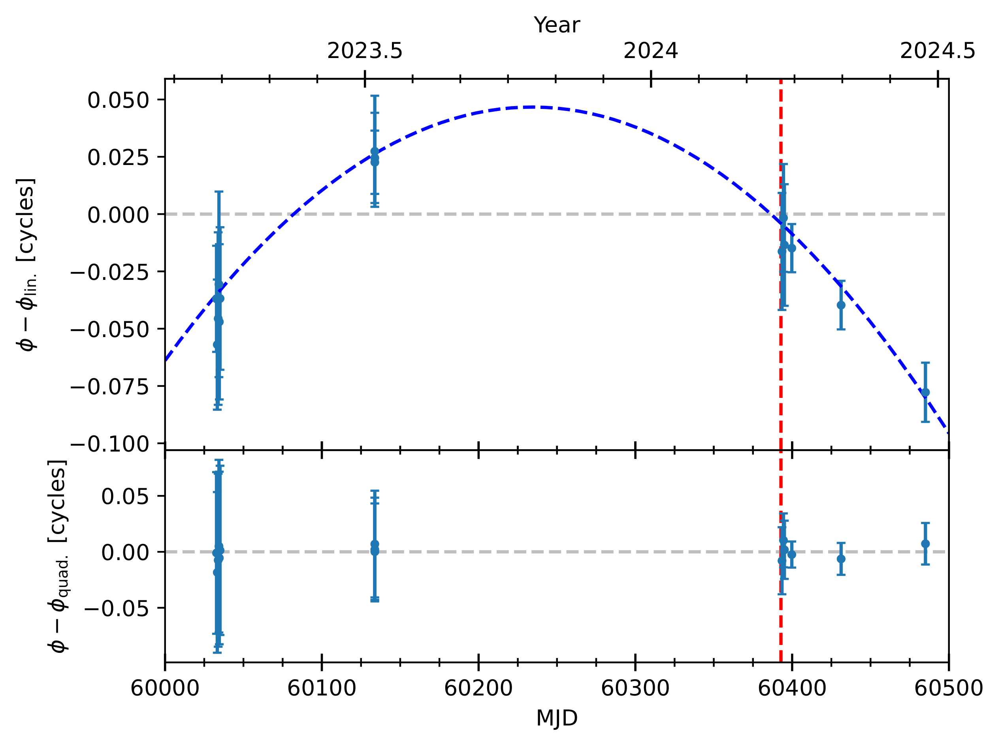
图注：Cycle-count comparison for the linear (top panel) and quadratic (bottom panel) timing solutions derived from TOA fitting. The blue dashed line in the top panel indicates the deviation between the linear and quadratic solutions, while the vertical red dashed line marks the reference time $t_0=60392.848396$.
对应解读：对应“建议重点查看的图表”第2、3项，以及关键图表导读中关于周期搜索、cycle-count 解和相干计时可信度的讨论。
入选理由：这张图直接比较线性与二次计时解的 cycle-count，是确认 phase-coherent timing solution 的核心诊断。它比单纯参数表更能说明是否存在错误脉冲周数、alias 或长期相位漂移，直接支撑论文最关键的 P 与 Pdot 结论。
来源与置信度：\(arxiv_source\)；high；\(arxiv_source\) / aa59673-26.tex:figure[1]
Fig02
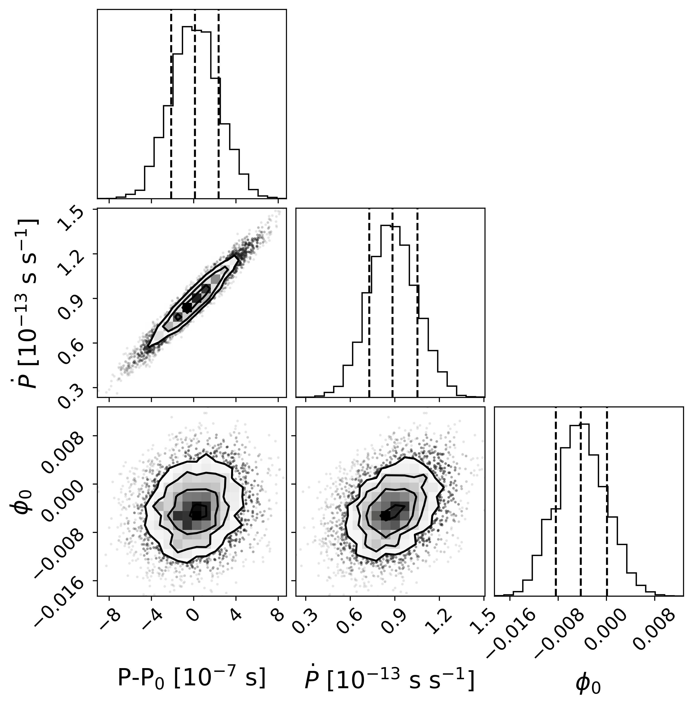
图注：Corner plot showing the posterior distributions of the parameters obtained from fitting a quadratic timing solution to the TOAs of the individual X-ray observations. For clarity, a reference period of $P_0 = 12.757135$~s has been subtracted from the posterior values.
对应解读：对应“模型拟合”中的计时拟合参数后验，以及“建议重点查看的图表”第2项关于 P-Pdot 置信区域和解的稳健性。
入选理由：角图展示二次计时解参数的后验分布，可检查周期、周期导数等参数的不确定度和相关性。虽然不是传统 P-Pdot 等高线图，但它是评估 Pdot 是否被数据约束、参数退化是否严重的关键图。
来源与置信度：\(arxiv_source\)；high；\(arxiv_source\) / aa59673-26.tex:figure[2]
Fig03
图注：panel I--IV: Energy-resolved pulse profiles of \(\otos,\) combining photons from all observations. panel V and VI: Phase-resolved hardness ratio profiles. panel VII: Phase evolution in mean surface temperature.
对应解读：对应“建议重点查看的图表”第6、7项，以及关键图表导读中分能段折叠脉冲轮廓、硬度比和能量依赖双峰结构的讨论。
入选理由：该图给出分能段脉冲轮廓、相位分辨硬度比和表面温度相位演化，是判断双峰结构是否随能量保持、脉冲形态是否类似 RX J1308.6+2127 的主要证据。它直接支撑 XDINS 分类中的脉冲形态和能量依赖诊断。
来源与置信度：\(arxiv_source\)；high；\(arxiv_source\) / aa59673-26.tex:figure[3]
Fig04
图注：\xmm\ and \nicer\ X-ray spectra along with the three models presented in Table~\(\ref{tab_fitres}.\) The upper panel presents the best-fit single-blackbody and Gaussian absorption line model (\textit{\mbox{BBGABS}}) that was simultaneously fitted to all the spectra (second line in Table~\ref{tab_fitres}).
对应解读：对应“建议重点查看的图表”第4项，以及关键图表导读和模型拟合部分关于 XMM/NICER 能谱、热模型、吸收线和残差的讨论。
入选理由：这张图展示 XMM 与 NICER 谱以及多个谱模型，能检查热谱是否稳定、单黑体加吸收线模型是否优于其他模型、残差是否提示未建模结构。它对排除暂态谱态变化和支持热辐射解释很重要。
来源与置信度：\(arxiv_source\)；high；\(arxiv_source\) / aa59673-26.tex:figure[4]
Fig06
图注：Thermal luminosity as a function of spin-down luminosity for different INSs \(\citep{2020MNRAS.496.5052P}.\) The location of \otos\ is marked by the black box. The spin-down luminosity is derived from the timing properties (see notes of Table~\ref{tab_tim}) of \(\otos,\) while the upper and lower thermal luminosity limits correspond to an assumed distance range of 100--700~pc.
对应解读：对应“建议重点查看的图表”第5项，以及详细解读中 \(L_X\) 很可能大于自转能损失率、热辐射不能由当前转动能供给的结论。
入选理由：该图直接比较热光度与 spin-down luminosity，并标出距离范围导致的热光度上下限，是支撑 \(L_th\) ≳ Edot 这一物理解释的最直观图。它把计时结果与能量预算联系起来，对确认 XDINS 性质非常关键。
来源与置信度：\(arxiv_source\)；high；\(arxiv_source\) / aa59673-26.tex:figure[6]
Fig05
图注：Spin period versus spin-down diagram showing the location of \otos\ relative to INSs listed in the ATNF pulsar catalogue \(\citep\)[][]{2005AJ....129.1993M}.
对应解读：对应“建议重点查看的图表”第5项，以及关键图表导读中 P-Pdot 群体图、与 XDINS/磁星/高磁场射电脉冲星关系的讨论。
入选理由：该图显示源在 P-Pdot 图上的位置，可直观看出其长周期和高磁场参数如何落在已知孤立中子星族群中。它对分类背景很有价值，但相对于计时解本身和 \(L_X-Edot\) 能量预算，诊断力度略弱。
来源与置信度：\(arxiv_source\)；high；\(arxiv_source\) / aa59673-26.tex:figure[5]
强相关工作
这篇工作最直接相关的是经典 XDINS，尤其是 RX J1308.6+2127，因为摘要明确指出二者的双峰脉冲轮廓和能量依赖性相似。建议检索关键词包括 “XDINS RX J1308.6+2127 pulsed fraction energy dependence”、“Magnificent Seven isolated neutron stars”、“X-ray dim isolated neutron stars timing”。这些工作提供了比较对象：类似的长周期、热谱、强磁场估计和能量依赖脉冲，能帮助判断 eRASSU J131716.9-402647 是否只是候选体还是确证成员。
理论背景方面，应把本文与中子星磁热演化、强磁场大气辐射和冷却曲线研究放在一起读。关键词包括 “magneto-thermal evolution neutron stars”、“cooling isolated neutron stars”、“magnetized atmosphere XDINS”、“condensed surface neutron star thermal emission”。本文的 \(L_{\rm th}\gtrsim\dot E\) 是连接观测与磁热模型的核心入口。
可能存在张力或相反解释的方向包括：高磁场射电脉冲星的热 X 射线辐射、低活动磁星的准静态热发射、以及未识别吸积或背景污染造成的软 X 射线源分类错误。建议检索 “high magnetic field radio pulsars thermal X-rays”、“low activity magnetars thermal emission”、“XDINS candidates eROSITA”。如果后续发现该源有强计时噪声、爆发现象或非热硬尾，其分类边界仍可能需要重新讨论。
相似工作：
- https://arxiv.org/abs/2606.11291
- https://ui.adsabs.harvard.edu/search/q=XDINS%20RX%20J1308.6%2B2127%20pulsed%20fraction
- https://ui.adsabs.harvard.edu/search/q=%22X-ray%20dim%20isolated%20neutron%20stars%22%20timing
基础理论 / 方法工作：
- https://ui.adsabs.harvard.edu/search/q=%22Magnificent%20Seven%22%20isolated%20neutron%20stars
- https://ui.adsabs.harvard.edu/search/q=magneto-thermal%20evolution%20neutron%20stars
- https://ui.adsabs.harvard.edu/search/q=neutron%20star%20cooling%20isolated%20thermal%20X-ray
相反观点 / 张力线索：
- https://ui.adsabs.harvard.edu/search/q=high%20magnetic%20field%20radio%20pulsars%20thermal%20X-rays
- https://ui.adsabs.harvard.edu/search/q=low%20activity%20magnetars%20thermal%20emission
- https://ui.adsabs.harvard.edu/search/q=eROSITA%20XDINS%20candidates
说明
评分由 LLM 给出初评，再由本地阈值策略过滤；IACT、TeV 伽马射线和高能中微子天文学按重点方向处理。